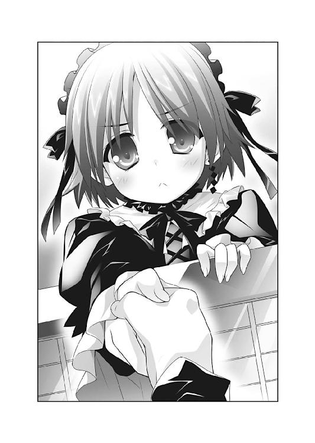

| Ｈ＋Ｐ12 －ひめぱら－ (富士見ファンタジア文庫) | |
| 風見 周 | |
| 富士見書房 (2012) | |

Ｈ＋Ｐ
─ひめぱら─
風見 周

富士見ファンタジア文庫
本作品の全部または一部を無断で複製、転載、配信、送信したり、ホームページ上に転載することを禁止します。また、本作品の内容を無断で改変、改ざん等を行うことも禁止します。
本作品購入時にご承諾いただいた規約により、有償・無償にかかわらず本作品を第三者に譲渡することはできません。
本作品を示すサムネイルなどのイメージ画像は、再ダウンロード時に予告なく変更される場合があります。
本作品は縦書きでレイアウトされています。
また、ご覧になるリーディングシステムにより、表示の差が認められることがあります。
口絵・本文イラスト ひなた睦月
目 次
プロローグ
切腹──。
それが神来恭太郎の選んだ結論であった。
夕刻。トレクワーズ王国の後宮。恭太郎の部屋。
ガクガクブルブル。ガクガクブルブル......。
まるで冷凍庫に閉じこめられたかのように全身を震わせながらも、恭太郎は室内を自らの手で清掃した。
私物はほとんどないし、後宮付きの女官が定期的に掃除をしてくれている。たいして汚れてはいなかった。
だけど、立つ鳥跡を濁さずという言葉もあるからな......。
気力を振り絞り、部屋中をぴかぴかにする。
磨いた床の上に清潔なシーツを二つ折りにして敷いた。
この布に座って腹を切ることになる。
切腹の手順は日本にいる頃に覚えた。
剣術オタクである恭太郎は武芸書を読むのが趣味なのだ。そんな書物の中に切腹の作法について書かれたものもあった。
記憶を頼りに準備を進めていく。
盆の上に、ワインの注がれた杯とパン、リンゴが三切れ、塩とジャムを並べた。
これが切腹前の最後の食事だ。
本来なら日本酒と白湯を掛けた白飯、香の物を三切れ、塩と味噌を用意するのが正しい作法である。
しかし、トレクワーズ王国では手に入らないものが多かったので、身近にあるもので代用した。皿に添えられているのも逆さ箸ではなく小さなフォーク。
ずいぶんと西洋風になってしまったが......まあ、よしとしよう。
『身を切る』ことに由来する『三切れ分の食べ物』など、儀式的に重要な意味を持つ要素は満たしている。
これ以上の準備は、今の自分には無理だからな......。
沐浴をして身を清めた恭太郎は、白装束の代わりとなる白いローブに身を包んだ。
作法通り左前に合わせ、帯を締めようとする。
だが、手が震えてうまく帯を結べなかった。
「落ち着け......。情けないぞ、恭太郎。最期ぐらい潔く散るべきだ......」
必死にそう言い聞かせようとするけれど、一向に震えは収まらなかった。
気を抜くと全身がガクガクと震えてしまう。
恐怖のあまり失神してしまいそうだ。
口の中が乾いて舌が張り付く。顔中にびっしょりと汗をかいている。瞳がグルグルと回ってる。
「くそっ！ しっかりしろ！ 気を確かに持て！」
幾度も頰を平手で叩いて、正気を保たせた。
震える手で帯を締める。
「これで準備完了だな。いろいろ足りないものがあるけれど......」
正式な作法に則るとしたら、床に敷いた布の後ろに逆さまに屛風を立てるべきだし、首を落とす介錯人や見届け人も必要だ。
しかし──恭太郎はシーツに目を落とす。
盆の上に柄を外した短刀が用意してあった。刃先を数センチほど残すようにして、刀身に紙を巻いてある。王宮の武器庫から拝借したものだが、日本刀に似た造作だった。
武家の末裔として、切腹に使う刃物が包丁や果物ナイフでは格好がつかない。短刀だけでも似たようなものが見つかってよかった。心からそう思う。
全ての準備を整え、恭太郎はシーツの中央に座った。
呼吸を整え、精神を集中する。
「............」
切腹は、すごく痛いらしい。
江戸の終わりごろには扇子で腹を切るマネをして、介錯人が首を落とすことで切腹の代わりにしていたほどだ。
介錯人なしで切腹するとなれば、相当な苦痛が伴うだろう。
「見事に果ててみせろ、恭太郎......」
自らに言い聞かせるように呟いた。
「さもなきゃ、姉上の怒りは鎮められないぞ......」
切腹を決意したのは──姉の桜子が原因だ。
恭太郎は《トレクワーズの五美姫》を妻にしようと思った。
ユフィナ、レイシア、エリス、アルト、メルルちゃん。
五人のお姫さまとお世継ぎをつくろうと決めた。
世界を救うために。
トレクワーズ王国の未来のために。
......いや、そんなのは言い訳だな。正直になろう。
恭太郎はお姫さま全員が好きだから。
五人とも等しく大切だったから。
だからこそ、一人残らず幸せにしようと決意したのだ。
サキュバスの女王・レネゲイドの襲撃によって邪魔されなければ、ユフィナたちとえっちをしちゃってただろう。
恭太郎なりの正義を貫き通し、辿り着いた結論だ。
この先なにが起ころうと《トレクワーズの五美姫》を幸せにする。
俺の手でみんなを守り抜く！ もはや迷わない！
──そのつもりだった。
しかし、姉上が目の前に現れた瞬間、恭太郎の決意は跡形もなく吹っ飛んだ。
幼い頃から恭太郎は桜子によって、厳格に育てられてきた。
『男女七歳にして席を同じくせずですよ！』
『運命の相手と一生を添い遂げることこそ、本懐というものです！』
『ふしだらなことをしたら許しませんよ、恭太郎ッ!!』
こんな言葉が口癖だった姉上は、恭太郎が破廉恥なマネをすると──そう、ついうっかり桜子が入っていることを知らずに風呂場のドアを開けてしまったりすると、烈火の如く怒り出す。
そして、躾と称して死を覚悟するような厳しい修行が課され──うわあああ、姉上やめてください滝行というのは滝に打たれるものであって滝の上から飛び降りるものではありません！ ぬわあああ、姉上勘弁してくださいどんなに修行したって飛んでくる火山弾を素手で打ち落とすなんて不可能です心頭滅却すれば火傷しないってそんな無茶な!?
トラウマの扉を開きそうになって、恭太郎は首を大きく横に振った。
「お姫さまたちを同時に愛してしまうなんて......。五人まとめてえっちしようとしたなんて......俺はなんて不埒なことをしてしまったんだ。うおおおお、こんな俺を姉上は絶対に許してくれないぞ。もはや腹を切る以外に残された道はないんだ......!!」
怖かった。
姉上に知られたら激怒されてしまうようなことをしてしまった──その罪悪感に押しつぶされそうだ。
恭太郎の身体には無数の傷跡と一緒に、桜子への畏怖の念が刻み込まれている。
「フゥ......フゥ......」
激しい運動をしたあとのように息が上がっていた。
脂汗が止まらない。顎の先から汗の雫が落ちた。
盆の上に置いた短刀を見つめて懸命に自我を保ちつつ、心の中で呟く。
だけど、よかった......。
最後の最後で、ユフィナたちを守れてよかったよ......。
『恭太郎。神来家の未来のために、カリギュラと世継ぎをつくると誓いなさい』
桜子の命令に、恭太郎は発作的に頷いた。
『カリギュラを妻にします』と答えたのだ。
恐怖のあまり姉上の命令に服従してしまったと勘違いされても仕方のない状況だろう。
ピコル師匠には、『ええい、このヘタレめ！ そこはビシッと姫さまがたへの愛を叫ぶところじゃろ！ 裏切るとは何事じゃ！』と怒られたけど、それも無理はない。
でもね、勘違いしないでくださいよ、師匠。
確かに、姉上は怖い。
でも、あのときの返答は己の保身のために行ったものじゃないんだ。
「俺なりに、ユフィナたちを守ろうとしたんです......」
五人同時にえっちしようとした──桜子に知られれば、恭太郎は間違いなく切腹を申しつけられるだろう。
「俺が酷い目に遭うだけなら、まだいい......。このままじゃユフィナたちにも過酷な修行を課すかもしれないもんな......」
桜子は自分が間違っていると思ったことは容赦なく正そうとする。
『一人の殿方に五人で一緒に迫るとは！ そんな破廉恥な行為が許されるとお思いですか！ 姫だかなんだか知りませんが、天に代わって、この私が歪んだ性根を叩き直してくれます！ 天誅～～っ!!』
そんな姉の怒鳴り声が聞こえてくるようだ。
ユフィナたちが辛い思いをするのは、どうしても耐えられない。
だから、恭太郎は咄嗟に噓をついたのだ。
「カーリー、すごく喜んでたな。俺は最低な男だ。姉上からもカーリーに謝っておいてください......」
恭太郎はベッドの方を眺めた。
マットレスの上に書き殴った遺書が置かれている。急いで書いたから、ただでさえ下手な文字が乱れまくっていた。
姉上さま。
恭太郎は姉上の教えに背き、ふしだらなことをしてしまいました。
五人のお姫さまを同時に愛してしまったのです。
複数の女性に恋心を抱くなんて、男の風上にも置けない行為だとわかっています。
それだけでも許されざることなのに──あろうことか俺はユフィナたちを手籠めにしようと、五人同時にみだらなことをしました。
彼女たちは俺に無理矢理に押し倒されただけです。なにも悪いことはしていません。
ユフィナも、レイシアも、エリスも、アルトも、メルルちゃんも。
誰もが、清純でおしとやかで真っ直ぐな、素晴らしい王女さまです。
悪いのは俺一人なんです。彼女たちを責めないでやってください。
それから、俺はカリギュラにも謝らなきゃいけません。
彼女に申し訳ないと伝えてください。
カーリーを妻にするなんて答えたけれど......あれは本当の気持ちじゃない。
カーリーのことは、すごく大切な友だちだと思っている。
友だちとして大好きだよ。
でも、今のきみとはお世継ぎはつくれない。
ウソをついて本当にすまなかった。
姉上、今までありがとうございました。
責任を取って、俺は切腹します。
せめて最期は剣士らしく、見事に果ててみせます。
どうか愚かな弟をお許しください。
神来恭太郎
「よし、やろう......」
景気づけに赤ワインを呑み干した。身体がカッと熱くなる。
懸命に意識を保って、前身頃を大きく開いた。
「ありがとう。今まで楽しかったよ......」
刀身に巻かれた懐紙の上から、刃を握りしめる。
「さようなら、みんな」
切っ先を腹に当てた──その刹那。
恭太郎の脳裏に過去の出来事が蘇った。
トレクワーズの後宮で過ごした、楽しかった日々が──。
第一話 異議ありっ！ 後宮裁判！
トレクワーズ王国に召喚されたたった一人の王仕さま──神来恭太郎が、後宮での生活を語る場合は、まずお姫さまたちとの最もえっちぃシーンを思い浮かべ、そこから回想していくことが多い。
カタブツな恭太郎にとって、お姫さまたちとのえっちな体験はあまりにショッキングだ。後宮生活について話そうとすると必然的に印象深いシーンから──すなわち濡れ場から語ることになってしまうのである。
しかしながら。
今回の事件において、最も印象に残っているのは、えっちな体験ではなかった。
第五王女のメルルが放ったセリフが、恭太郎を驚愕させたのだ。
ちぃ姫さまが口にした言葉から、物語を始めてみようと思う。
「判決をくだしますっ！
神来恭太郎被告を死刑に処すっ!!」
恭太郎に死刑が宣告されてしまったのだ。
なぜ、このような判決が下ってしまったのか。恭太郎の罪状はなんであるのか。そもそも、どうして裁判沙汰になっているのか。
それらを理解してもらうためには、少しばかり時間を遡る必要があるだろう──。
×××
「静粛に！ 静粛にーっ！」
──カンカンカンカンッ!!
後宮内に設置されている簡易法廷。裁判官の席に座ったメルルが木槌を打ち鳴らした。
「うぉっほん！」という偉そうな咳払いを繰り返した後で、メルルが重々しい口調で宣言をする。
「ただいまより『もうっ、恭太郎おにいちゃんったら、えっちなイタズラばっかりしちゃダメなんだからね裁判』を行いまーすっ！」
裁判長役のちぃ姫さまは真っ黒なローブみたいな法服を身に纏っており、白い縮れ毛のカツラを着用していた。コスプレ好きなメルルちゃんにはよく似合ってる。
法廷もこれまた本格的だ。木製の柵がついた証言台や、傍聴人席などもあった。
後宮の中にこんな施設があるなんて知らなかったなあ......なぁんて感心してる場合じゃないぞ！
「異議ありッ！」
被告人席に座らされている恭太郎は声を張り上げる。
「どうかしたの？ 恭太郎おにいちゃん......じゃなくて、恭太郎被告？」
「どうかしたの、じゃないよ！ ツッコミどころが多すぎるだろっ！ どうしていきなり裁判が始まってるんだ!? 俺がいったいなにをしたっていうんだよ!?」
「あんたがそうやってしらばっくれるから、裁判沙汰になったのよっ！」
被告人席と向かい合う形で設置されている、原告側の席から冷たい声が飛んでくる。
グレーのスーツに身を包んだユフィナが、こちらを睨み付けた。
ポニーテイルにしている赤い髪をきっちりとまとめ、銀縁のメガネを掛けてる。
普段は元気はつらつなイメージの第一王女さまが、今日はクールな雰囲気だ。怒ってるのか眉がつり上がっていて......かなりの迫力である。
恭太郎の隣に座るピコル師匠が、耳打ちをしてきた。
「落ち着くのじゃ、恭太郎。あまり心証を悪くすると、罪が重くなってしまうぞ。反省の色を見せておく方が得策じゃ。弁護は吾に任せておくのじゃ」
「弁護もなにも、俺はどうして裁判なんてやってるのかもわかってないんです。説明してくださいよ！」
「本来であれば、王仕さまが罪を犯した場合、王女さまの独断で罰することができるのじゃ。じゃが、王仕さまに不服がある場合は『後宮裁判』を起こすことができると『後宮法』によって定められておるのじゃよ」
「すみません。説明されても、イマイチ意味がわかりません。昨日からわからないことだらけなんですよ」
恭太郎にとっては、昨日という日は普段と変わらない一日のはずだった。
変わったことと言えば......昼頃から夕方に掛けて、少し長めに素振りをしたくらいだろう。最近はカラダが鈍っている気がしたので、後宮の裏庭で三〇〇〇回ほど木刀を振っていたと思う。
後宮の自室へ戻り、シャワーを浴びたところで──いきなりユフィナ＆近衛騎士団が部屋へ押し寄せてきた。
怒りの形相でユフィナが怒鳴り散らしたのである。
「今日という今日は許さないからねっ！ このドヘンタイっ！」
「どうして怒ってるんだ？ 俺がなにかやったか？」
「シラを切るつもり!? えっちなイタズラをいっぱいしたじゃない！」
「はあ!? えっちなイタズラ!? まったく身に覚えがないぞ！」
「男らしくないわよ！ 大人しく罪を認めなさいっ！」
「いやいや、本当に知らないんだって！ なにかの間違いじゃないか？」
「誤魔化そうとするなんて......見損なったわよ、恭太郎ッ!! 罪を認めるまで、絶対に許さないからねっ！」
「ちょっと待ってくれ！ 俺はなにもしてないんだってー!!」
近衛騎士団の兵士たちによって逮捕され、地下の牢獄で一夜を明かすこととなってしまった。
捕まるようなことをしでかした覚えはまったくない。『俺は無実だ！』と牢屋で主張していたら──あれよあれよという間に法廷へと引っ立てられてしまったのである。
ピコル師匠が嚙み砕いて説明してくれた。
「王女さまがたの訴えによれば恭太郎は《トレクワーズの五美姫》に対して、えっちなイタズラをしたそうじゃ。お世継ぎづくりに励むなら構わぬのじゃが......姫さまが嫌がるようなマネはしてはならぬのじゃよ」
「だから、そんなことしてませんって！ 俺は婦女子が嫌がるようなコトは天地神明に誓ってやりません！ ましてやえっちなイタズラなんて論外ですよ！」
弱きを助け、強きを挫く──それが恭太郎の望む生き方だ。女の子に嫌がらせをするなんて、絶対にあり得ない。
ピコル師匠は「それじゃ！」と言って恭太郎を指さす。
「そんな風に、王仕さまが『俺はなにもやってない！』と言い出した場合は、裁判を行って真実を確かめることができるのじゃ。『後宮法』という法律に定められた、王仕さまの権利なのじゃ」
ピコル師匠は、なにやら難しい書物を開いて恭太郎に見せてくれた。表紙には『後宮法』と書かれてる。後宮内で適用される法律の条文が記された本だ。
「俺に申し開きの機会を与えてくれてるってコトですか......」
「とはいえ、王女さまは絶対じゃ。判決を下す裁判長の役も王女さまが行うから──姫さまの判断で罰せられることに変わりはないんじゃがな」
数メートルほど高くなっており、法廷の全てが見渡せる裁判長の席から、メルルちゃんの声が降ってくる。
「メルルが裁判ちょーの役をやるよっ♪」
スーツ姿のユフィナが大きな胸の前で腕組みをした。ギロリっと恭太郎を睨め付けてくる。怒りのためか、ちょっぴり顔が紅潮しているように見えた。
「えっちなイタズラをしたってだけでも許せないのに......それを素直に認めないなんて、卑怯すぎるわよ！ なんとか罪を認めさせたいって思ってたところに、ピコルが裁判の制度があるって教えてくれたの！」
ユフィナの怒りっぷりから言って、恭太郎は相当ひどいことをしでかしたコトになっているようだ。
「俺がいったいなにをやったって言うんだ？ まずは、それを教えてくれ」
ユフィナは手元の資料を眺め、フンと鼻を鳴らした。
「今から『罪状認否』って言うのをするわ。あんたがどんなひどいことをしたのか、再確認させてあげるわよ！──裁判長！ 証人の出廷を要求しますっ！」
「許可しまーす！ えへへ、なんだかお芝居してるみたいで楽しーね♪」
「メルル、遊びじゃないのよっ！ この裁判で恭太郎の運命が決まるんだからっ！ ひょっとしたら、死刑もあり得るかもしれないわね......！」
「恐ろしいこと言わないでくれよ！」
そんなこんなで、『後宮裁判』が幕を開けてしまったのである。
○第一の証言者──レイシア
最初に証言台に立ったのは、第二王女のレイシアだ。春の木漏れ日のような柔和な笑顔と、たわわに実ったメロンみたいな大きすぎる爆乳が特徴のお姫さまである。
身に纏った薄いブルーのドレスがはち切れそうなぐらいに胸元が隆起しているのだが......いつもの温かな笑顔は消え失せていた。
「レイシアは、恭太郎にえっちなイタズラをされた被害者の一人よ。どんなことをされたのか、証言してもらえる？」
ユフィナの言葉に、レイシアは小さく頷いた。眉をハの字にして、恭太郎の方を悲しげに見やる。
「私は恭太郎さまにだったら、多少でしたら......その......そーゆーコトをされても構わないと思っています」
「『そーゆーコト』とは、具体的にどんなコトですのじゃ？」
すかさず、ピコル師匠が質問をした。
ちょっぴり頰をピンク色にして、レイシアは答える。
「ちょっとくらいなら......え、えっちなコトをされても構いません。王国の未来のためでもありますし。恭太郎さまがお望みなら、私は頑張れますっ」
恭太郎は人差し指で鼻の頭を搔いた。たぶん、顔が赤くなってしまってると思う。
こんな美少女に『えっちなコトをされても構わない』なんていきなり言われたら、誰だって照れるよな。
「ですが、恭太郎さま......」
しかし、レイシアは唇を引き結んで恭太郎を見つめてくる。
「昨日のイタズラは、ひどいと思います。せめて心の準備をするお時間をいただきたかったです」
レイシアの証言によれば、恭太郎は次のような悪行を行ったらしい──。
ドキドキ。ドキドキ。ドキドキドキ......。
後宮にある大浴場。白大理石で作られた神殿のような、見事な意匠のお風呂だ。露天ではないけれど、ガラス張りのテラス風になっており手入れされた中庭を見渡せる。
湯船に浸かっているレイシアの心臓は、破裂してしまいそうなくらいに高鳴っていた。
「恭太郎さまに聞こえてしまうかも......静まってくださいっ」
カラダに巻いたバスタオルの上から手で胸を押さえても、ドキドキがおさまらない。
どうして、王女さまであるレイシアが後宮のお風呂にいるのか。
はじまりは、一通の手紙であった。
レイシアが自室で治水に関する本を読んでいたら、ドアの隙間から紙片が差し入れられたのだ。
「まあ、恭太郎さまからのお手紙です......」
紙片には、こんなことが書かれていた。
『後宮のお風呂に一緒に入らないか？ 先に入って待っていてくれ──恭太郎』
恭太郎が掛けてくるお誘いと言えば、『一緒にスポーツでもしないか？』とか『この国の剣術に関する本を探してるんだ。図書館に付き合ってくれないか？』とか。色っぽさとは無縁のものばかりだ。それでも、ものすご～～くうれしいのだけど。
お風呂に誘われるなんて初めての経験である。読み終えた瞬間から、レイシアの心臓は早鐘を打つように鳴りっぱなし。
「どうしましょう？ どうしましょう？ あわわわわ......」と慌てふためきつつも、大急ぎで支度をしてお風呂へやってきた次第だ。
お風呂に浸かって恭太郎を待っているレイシアはソワソワしながらも......手紙の文面を思い出して微笑んでしまった。
「恭太郎さま、字を書くのはあまりお得意ではないみたいですね」
定規を当てながら書いたような妙に角張った文字だった。
恭太郎は異世界から召喚された王仕さまである。文字が書けるだけでもすごいことだ。
「そもそも、殿方の識字率はあまり高くないですし......」
識字率とは、国民における読み書きのできる人の割合のことだ。トレクワーズ王国の識字率は、女性はほぼ一〇〇％だが、男性は七〇％ほどに留まっていた。
魔法の訓練を受けるために、女性は《幼年学校》に四年間、《初等学校》に四年間、計八年間の教育が義務づけられている。
だが、魔法が使えない男性は《幼年学校》までしか義務教育とはなっていないのだ。
「女王陛下は、殿方への義務教育の見直しを考えてらっしゃるみたいです。教育政策についても勉強しなくちゃ......って、そんなことを考えてる場合じゃありませんっ」
ブンブンと首を横に振って、頭から小難しい理屈を追い払った。
「格好はおかしくないでしょうか？」
自分のカラダを見下ろした。バスタオルを巻いて、長い髪はタオルでまとめている。
「か......カラダは洗っておいた方がいいのかな？ それともこのままがいいんでしょうか」
ピコルから聞いた話によれば、恋仲の男女は一緒にお風呂に入って、カラダを洗いっこすることもあるらしい。
「恭太郎さまのお背中を流すのもドキドキなのに、私のカラダを洗われちゃうなんて......。想像しただけで、どうにかなっちゃいそうです...... 」
」
お風呂の中に顔を半分沈め、自分の膝を抱える。レイシアの頭に妄想が渦巻いた。
恭太郎「俺がカラダを洗ってあげるよ」
レイシア「あっ、恭太郎さま、いけませんっ！ そこは自分で洗えますからっ！ あっ」
恭太郎「全部、俺に委ねてごらん。ほら、タオルなんか外して......」
レイシア「はうっ そんなにゴシゴシしちゃ......らめですぅ あんっ」
恭太郎「おやおや？ いくら洗っても、ココは綺麗にならないぞ？」
レイシア「あうぅっ 恭太郎さまのお手が気持ちよくて......」
恭太郎「せっかく洗ってやってるのに......。レイシアはお姫さまなのにイケナイ娘だな」
レイシア「はい。レイシアは悪いコでぅす。いっぱいお仕置きしてくださいまし」
そのまま、恭太郎さまとお世継ぎづくりをしちゃうことになったりして。
きゃーっ！ きゃあああーんっ！
自分の妄想に照れてしまって、湯船の中で足をジタバタさせるレイシア。
こんなはしたないコトを考えてるなんて知られたら、恭太郎さまに嫌われてしまいますっ。自重しなさいレイシアっ。
自らを叱りつけつつも、やっぱり胸の高まりは抑えられない。
こんなにドキドキしてる理由は、緊張と、ちょっぴりの恐さと恥ずかしさ。
そして、トキメキだ。
恭太郎さまが誘ってくださってうれしくて。早く会いたくって。
きっと胸がドキドキしてるんだろう。
「恭太郎さま、早くいらっしゃらないかな......ブクブクブクブク......」
湯船の中で息を吐き出しつつ、レイシアは大浴場の入り口の扉を見つめるのだった。
と・こ・ろ・が。
いつまで経っても恭太郎は現れなかった。
三〇分ぐらいはお風呂で待っていたと思う。
（恭太郎さま、遅いです。このままではレイシアは、のぼせてしまいますぅ......）
ひょっとしたら、なにかトラブルが起こったのかも知れない。
恭太郎の部屋を訪ねてみるために、レイシアは一旦お風呂から上がることにした。
そこで、ようやくイタズラが仕掛けられていたコトに気付いた。
「服がありませんっ！」
脱衣スペースに綺麗に畳んで置いておいたはずのドレスがなくなっていたのだ。
王族であるレイシアがお風呂に入る場合、着替えを女官に手伝ってもらう。
しかし、今日は特別だ。
『自分で着替えますから。下がっていてくださいね』と告げて、人払いをしてしまった。許可があるまで浴場には女官は近づかないだろう。
濡れたバスタオルを巻いたまま城内を歩き回ることなんてできないし......。
「どうしましょう？ お風呂から出られなくなっちゃいました......」
そのとき、である。
困り果てたレイシアは、一着の服が置かれていることに気付いた。
手に持って広げてみて、愕然としてしまう。
トビカピバラのイラストがプリントされたＴシャツとフリルのミニスカート。メルルが好んで着そうな服だ。
「これって......子ども用じゃないですかっ！」
女性用のＳサイズよりも、明らかに小さかった。幼年学校に入る前の子どもが着るような洋服だ。ご丁寧に、子ども用のプリントぱんつまで置かれてる。
「うぅ......こんなの着れません......」
小さなＴシャツを手に途方にくれるレイシアだったが、深いため息を吐いた。
「でも、他に着るものがないし......」
仕方なく、子ども用の洋服を無理矢理着てみることにした。
「すごくきついですっ！」
なんとか入ったもののパツパツだった。
特に胸は今にもはち切れそうだ。カピバラのプリントが横に伸びきって、別の生き物になっちゃってる。おっぱいが入りきらなくて下の丸みが出てしまっていた。
子ども用のぱんつも同様だ。おしりの上半分が出てしまってる。
スカートの丈もすごく短い。いくら手で裾を押さえても、ぱんつが見えてしまう。
ハダカよりも幾分マシとはいえ、鏡に映るのはあまりに恥ずかしい格好だ。
「どうしてこんなことになってしまったんでしょう......はぅぅぅ......」
顔が赤くなってしまっているのは、のぼせたことだけが理由じゃないだろう。
Ｔシャツとスカートの裾を手で押さえながら、レイシアは脱衣室を出た。
子ども用の服を着たまま、後宮を歩く羽目に陥ったのである。
「恥ずかしいですぅ......」
なんとか王宮に戻ろうとしていたら、廊下の柱に隠れるようにしている人影を見つけた。遠目だったからよくわからなかったけれど、恭太郎に似てる。
恭太郎似の人影はレイシアの痴態を眺め回し、「ギゴゴゴ......」という奇妙な笑い声をあげて去っていってしまった。
「恭太郎さまったら......こんなことをするなんてひどすぎますっ！」
レイシアの証言を聞き終えた恭太郎は、ゴクリと生つばを飲んだ。
子ども服に身を包んだレイシアの姿を想像してしまったのだ。
スーツ姿のユフィナが咳払いをして、ようやく我に返る。
「レイシアは恭太郎から届いた手紙によって、後宮のお風呂に呼び出され、ドレスを隠されてしまったの」
姉の言葉を、レイシアが継いだ。
「恭太郎さま......先に一声掛けてくだされば、衣装を着替えるぐらいどうってことはありません。でも、服を隠しちゃうなんてひどいと思います......」
「そうよ！ これは卑劣な犯罪行為よ！」
「俺はそんなことしないって！」
「レイシアは恭太郎に似た人影を見たって言ってるじゃない！」
ユフィナは恭太郎を犯人だと決めつけてるみたいだ。藁にもすがる思いで、恭太郎はレイシアに尋ねた。
「俺から風呂に誘われたってのは、昨日の何時頃の話なんだ？」
「確か......午後三時ぐらいだったと思います」
「その時間、俺は後宮の裏手で素振りをしてたぞ！ 服を隠すことなんてできない！ 俺以外の誰かがやったんだよ！」
しかし、ユフィナは怒気混じりの声で問い返してくる。
「それを証明できる人がいるの？」
「証明できる人は......いないけどさ」
恭太郎が剣術修行の場として活用している後宮の裏庭は人気もほとんどない。誰一人として通りかからなかった。
ピコル師匠は腕組みをして、うんうんと頷く。
「小さな服を無理矢理着せられるというのは、実にフェチっぽいのじゃ。レイシアさまの姿はさぞかし色っぽかったじゃろうな」
メルル裁判長も、大げさに肩を竦めて嘆いてみせた。
「恭太郎おにいちゃん......コスプレ大好きっことして、これは許せないなー。無理矢理えっちな服を着せるなんてダメだよっ？」
「まったく身に覚えがないんだ！ そんなに俺のことが信じられないのか？」
恭太郎が必死に反論するが、ユフィナは信じてはくれないようだった。
「恭太郎が、どんな男なのか......よく知る人物に証言をしてもらいましょ。そうすれば、あんたがえっちなイタズラをしでかしてもおかしくない男だってわかるはずよ」
俺のことを、よく知る人物？
第一王女が手を叩くと、女官たちが法廷に入ってきた。磨りガラスでできた衝立を証言台の周りに並べていく。
「次の証言者は匿名希望らしいわ。だから、磨りガラス越しに話してもらうわよ。さあ、入ってきて！」
○第二の証言者──？？？
磨りガラス越しに見る証言者の姿に、恭太郎は見覚えがある気がした。
白いローブ。子どもみたいな背丈。床に届くほど長い銀髪。
「あの証言者、ピコル師匠に似てますね」
声を掛けながら、横を見た恭太郎は驚愕のあまり眼球が飛び出すかと思った。
恭太郎の隣にいたはずのピコル師匠がいなくなっていたのだ。
磨りガラスの向こう側にいる証言者は、呆れた様子で口を開く。
「吾は恭太郎について、よく知る者ですじゃ。いつか、こんな悪さをしでかすに違いないと常々思っておりましたのじゃ」
マジックアイテムでも使っているのか、声が甲高く変化している。
でも、一人称が『吾』で語尾に『じゃ』がつく人物に心当たりがあった。つーか、一人しかいねえよ！
ユフィナは証言者に尋ねる。
「あいつがえっちなイタズラをする可能性があると思う？」
「大いにあり得ますのじゃ！ 口では『えっちなコトはしない』と主張しておるようじゃが......あやつは間違いなくムッツリスケベですからのぅ。頭の中を覗いたら、えろえろ妄想が渦巻いてるに違いありませんのじゃっ！」
「ありがとう。よ～～っくわかったわ」
「吾は明るく健全なえっちを推奨しておりますのじゃ。陰湿な悪さをするような輩は厳罰に処されることを望みますのじゃっ！」
証言者が一礼をして退廷する。
磨りガラス製の衝立が片付けられ、ほどなくピコル師匠も弁護人の席へと戻ってきた。
「ふーむ。実に興味深い証言じゃったのぅ」
「明らかにさっきのはピコル師匠でしょう!? どっちの味方をしてるんですか!? 俺の弁護をしてくださいよ！」
「てへっ☆ バレちゃったのじゃ☆」
ぺろっと舌を出し、ピコル師匠は頭をコツンと叩いた。
「言っておきますけど、これっぽっちも可愛くないですからね......!!」
「そんなに睨むでないわ。ユフィナさまに証言して欲しいと頼まれたのじゃ。断るワケにはいくまい？」
「なにをゴチャゴチャ喋ってるのよ！ 裁判はまだ途中なのよ！」
ユフィナが鋭い声を飛ばしてくる。
「恭太郎がやったイタズラはまだあるの。もう一人、被害者に出廷してもらうわよ」
ユフィナは新しい証言者を呼び寄せた。
第二の証言者は豪奢な金髪をツインテールにしたお姫さま──エリスである。
○第三の証言者──エリス
ゴゴゴゴゴゴゴ──......。
第三王女のエリスが出廷した瞬間、室温が二～三度は上昇した気がした。
エリスの背後から怒りのオーラが立ち上り、周囲の空気が揺らめく。黄金色の美しい髪はゴーゴンのヘビのようにのたくっていた。
証言台に立ったエリスは、般若にも似た形相で恭太郎を睨みつけて。
「恭太郎......。この私を愚弄したことを後悔させて差し上げますわ......!!」
エリスの証言によれば、恭太郎は次のような悪行をしでかしたようだ──。
昨日の昼下がり。後宮の廊下。
エリスは柱の陰に隠れ、キョロキョロと辺りを窺っていた。
「んもうっ、早く通りかからないかしら......。このエリス・レムリス・トレクワーズを待たせるなんて万死に値しますわっ」
偉そうなセリフだったが、彼女の表情は尊大ではなかった。
エリスの姿を見たら、ほとんどの人が『下校途中の憧れのセンパイに、ラブレターを渡そうとしている女子高生のようだ』と例えるであろう。紫色を基調としたロングドレスではなく、学校の制服を着ていたなら一〇〇％がそう答えるに違いない。
頰は仄かにピンク色。期待と不安が入り交じったような顔で、今か今かと誰かが来るのを待っているのだ。
彼女が待っている相手は──恭太郎。
ふと思い立って、エリスは『おはぎ』なるお菓子を作ってみたのである。
決して勘違いしないで欲しいのだが。
恭太郎が『俺の好きなお菓子？ 前に住んでいた世界には、おはぎって名前の菓子があったんだ。剣の修行の後で食べるおはぎは絶品だったな』なぁんて言っていたこととは、まるで関係がない。
おはぎがどんなお菓子なのか、恭太郎に根掘り葉掘り尋ねてもいない。たまたま偶然なにかの拍子に、恭太郎の好物のお菓子を作ってしまっただけなのだ。
おはぎなんて、名前も聞いたことがなかったけど......料理の得意な彼女でも驚くほどに美味しくできたと思う。王室御用達の菓子に認定してもよいほどだ。
すぐにでも恭太郎に食べて欲しい。
だが、彼のために作ったと思われるのは癪だ。高貴なるエリス・レムリス・トレクワーズが、男なんかのために早起きしてお菓子を作ってあげたなんて、あってはならないことなのだ。
そこで、エリスは一計を案じた。
１、廊下の曲がり角に隠れて恭太郎を待つ。
２、通りがかった恭太郎に、わざと激突する。
３、『この私にぶつかるなんて許せませんわ！ この無礼者！ フン、罰として、あなたには新しいお菓子の毒味役をさせますの！ イヤとは言わせませんわよっ！』
「我ながら、完璧な作戦ですわ......。これなら恭太郎もおはぎを食べざるを得ませんの！」
恭太郎はお菓子や料理を作ってあげると、いっつも美味しそうに平らげてくれる。残したことは一度もない。無礼者で鈍感で剣術バカで......とにかくダメ人間の極みとしか言いようのない王仕さまの数少ない美点だろう。
きっとおはぎも大喜びで食べてくれるに違いない。
美味しそうにおはぎを頰張る恭太郎を、エリスはついつい想像してしまった。
恭太郎「すごく美味しいよ。まさか、トレクワーズで、こんなに美味しいおはぎが食べられるとは思わなかった」
エリス「フンっ、あなたがどうしてもと這い蹲って頼むなら、また作って差し上げますわ」
恭太郎「どうしても作って欲しい」
エリス「は、這い蹲れと言ってるでしょう？ 頭が高いですわよっ！ ど、どうして顔を近づけてくるんですの？」
恭太郎「おはぎだけじゃなくて、別のものも作って欲しいからだよ......」
エリス「別のもの、ですの？」
恭太郎「俺との間に、お世継ぎもつくってくれないか......？」
エリス「キスをしてもいいなんて私は許可してない──んっ」
きゃーっ！ きゃあああーっ！
自分の妄想に照れてしまって、後宮の壁を両手でポコポコと殴ってしまうエリス。
「......って、取り乱している場合じゃありませんわね。コホンコホン」
気を取り直して、再び柱の陰に隠れる。
恭太郎の部屋がある方を見つめて、王仕さまが現れるのを待ち続けていた。
あまりにも真剣に待ちかまえていたからだろうか。
それに気付くのが遅れてしまった。
ウィ～～～～ン──という微かな物音が背後で聞こえたのだ。
「なにかしら？」
振り向くと、目の前に誰かが立っていた。
白いドレスシャツに黒いスラックス。艶やかな黒髪に、一房だけ銀色の髪が混じってる。
「恭太郎、いつの間に私の背後に──きゃあっ!?」
文句を言おうとしたのだけれど言葉は悲鳴に変わった。
ぶわっと風が吹いたかと思うと、視界が紫色に染まったのだ。辺り一面が紫の布で覆われてる。
布を取り払おうと手を動かしたけれど、できなかった。腕を伸ばすことすらできない。
一瞬、なにが起こったのかわからなかった。
「なんですの、コレは!? なにごとですのっ!? 誰かなんとかしてくださいましっ！」
視界と上半身の自由を奪われたエリスは、太ももの辺りにひんやりとした風を感じた。
それで、自分になにが起こってるのか理解することができた。
「す、スカートがまくり上げられてますわ～～っ!?」
エリスは紫色のロングドレスを身に纏っていた。ロングスカートがまくり上げられているのだ。下半身がすーすーする。
しかも、いくら手で戻そうとしても、スカートの裾をおろすことができない。
どうやら、スカートをまくり上げた状態で、裾を頭上で縛られてしまってるようだ。
自分では見られないが──恐らく、ぱんつやガーターベルトが丸出し。
スカートを頭上で縛られているため、上半身は紫色のタマネギみたいな状態になっているだろう。
「は、早く戻しなさいっ！ どうしてこんなことをするんですの!?」
倒れてしまいそうになりながらも、辺りに向かって怒鳴り散らす。
スカートをまくり上げた卑劣漢は返事をしなかった。
『ギゴゴゴ......』という奇妙な笑い声をあげながら、エリスを眺めているようだ。
「や、やめて！ 見ないでちょうだいっ！」
屈辱と羞恥心のために、うっすらと涙が滲んでくる。
しかも、卑劣な男は、スカートをまくり上げただけに留まらなかった。
エリスのぱんつに指を掛け──ぷりんっ。
ぱんつをズラし、おしりを半分ほど露出させてしまったのである。
「ダメダメっ！ ダメですの～～っ！」
下着を戻すことすらできず、フラフラとよろめいていることしかできない。
魔法でエリスの固有武器である【裁切りの鎌】を呼び出し、スカートを斬り裂けばいいと気付くまで、たっぷり一分ほど。
エリスは恥ずかしい姿を晒し続けることになってしまったのだった。
「そ、それはひどいのじゃ......！」
証言を聞き終えたピコル師匠は、あり得ないと言いたげに首を横に振った。
「そのイタズラはスカートめくりの上級バージョンで、『茶巾縛り』と呼ばれるものですのじゃ。ロングスカートを頭の上で縛られると、もはや自力で抜け出すことは不可能。ぱんつ丸出しのまま、身動きもできなくなってしまいますのじゃ......!!」
「なんて破廉恥なイタズラなんだ！」
恭太郎が感想をこぼすとエリスが烈火の勢いで睨み付けてきた。
「あなたがやったんでしょう!? ほんの一瞬だけでしたが、恭太郎の姿を見ましたわ！」
「ええっ!? 見間違いだろ!? そんなイタズラが存在することすら初めて知ったんだぞ、俺はっ！」
ユフィナは恭太郎をズビシっと指さす。
「あんた、エリスの証言にあったのと同じ服装してるじゃない！」
白いドレスシャツ＆黒いスラックス。後宮の王仕さまが着る制服みたいなものだ。
「王仕さまは恭太郎しかいない。その格好をしてるのは、あんたしかいないのよっ！」
スーツ姿のユフィナが、本物の検事にもなれそうな迫力で指摘してくる。
「そんなこと言われたって......やってないものはやってないんだよ！ 師匠、なんとか言ってください！」
ピコル師匠は弁護人として、この場にいるようだ。見事なフォローをしてくれるかと思いきや、ジト目で恭太郎を見つめてきた。
「恭太郎は見かけによらずヘンタイじゃのぅ。さすがの吾もドン引きなのじゃ......」
「これっぽっちも弁護する気ないし！」
「こうなっては仕方ない。素直に罪を認めるのじゃ。『僕はヘンタイです。生まれてすいません』と謝って、反省した姿を見せれば、情状酌量されるかもしれないのじゃ」
「どっちの味方してるんですかっ!? やってないものは認められないですよ！」
「謝れば許してもらえると思ってるの......？ あんたの悪行はこれだけじゃないのよ！」
追い打ちを掛けるように、ユフィナが大きな封筒を取り出した。
中に入っていたのは──写真だ。結構な枚数が束になってるみたいだ。
「なにが写ってるんだ？」
「知ってるくせにっ！ 白々しいっ！」
「本当に覚えがないんだよ！ カメラを扱ったこともないし......」
「......いいわ。確認させてあげる」
しばらく躊躇った後、スーツ姿のユフィナがゆっくりとこちらへ向かった。
活発で元気娘な第一王女には、そんなお堅い格好は似合わないかと思ったらさにあらず。
戦闘用の白いドレス姿とは違って意味で、戦う美少女の雰囲気が醸し出されていた。
「あんたが撮ったんでしょう!? 白状しなさいっ！」
被告人席に写真の束を叩きつけた。
写真を見た瞬間、恭太郎は鼻の奥がツンと痛くなってしまう。興奮のあまり鼻血を噴きそうになったのだ。
被写体は三人のお姫さまたちである。
儀礼用の豪奢な白いドレスを纏い、お姫さまっぽい笑顔を浮かべるユフィナ。
少々野暮ったい地味目の色合いのドレス姿で地下の工房に籠もり、メカを弄ってる第四王女のアルト。
魔女っ娘アニメのヒロインみたいなコスプレをしているメルル。
許可なく撮影をしているらしく、お姫さまたちはカメラ目線ではなかった。
問題なのは、それとセットになっている写真だ。
スカートの下から撮ったものが、対になっていたのである。
白いドレスのユフィナは、レース地のぱんつ。ガーターベルトやストッキングが色っぽい。
アルトは飾り気のない純白のぱんつ。可愛らしいピンク色のリボンがついてる。
メルルがはいているのは、カピバラのプリントされた子どもっぽいぱんつだった。
撮影者の腕が確かなのか、細部までハッキリと写ってる。白い布地に包まれた、おまたのぷっくりとした柔らかそうな膨らみまで──って、なにを凝視してるんだ、俺は！ こんなもん見ちゃいかーん！
「むむっ！ いわゆる『逆さ撮り写真』じゃ！ スカートの中を盗撮したものじゃな！」
ピコル師匠は感心したように腕組みをする。
「スカートの中を撮影した写真だけでなく、王女さまのお姿もセットで撮ってるのじゃ！ 盗撮した者はなかなか通じゃな！」
「外見もセットで撮ることに意味なんてあるんですか？」
「当然じゃっ！ どんな女の子のぱんつなのかわかった方が興奮するじゃろう？」
尋ねられてもリアクションに困る。というか、婦女子の下着を盗撮する卑劣な男なんて、恭太郎がもっとも忌むべき存在だ。犯人がいるならこの手で捕まえてやりたい。
「犯人なら私の目の前にいるじゃないっ！ コッソリ下着を写真に撮るなんて最悪よ！ えっちな写真を撮られたショックで、アルトは寝込んじゃったんだからね！」
「そんなにショックを受けたのか？ アルトちゃん、可哀想に......」
「あんたが撮ったんでしょう!? この写真と、それをおさめたクリスタルが恭太郎の部屋の近くから発見されたのよ！」
ユフィナは写真を封筒に戻した。証拠として提出するためだろう。裁判長役のメルルに封筒ごと手渡す。
「恭太郎おにいちゃん、コレはひどすぎるよ」
写真の束を眺めたメルル裁判長も、悲しげに嘆いた。
「こんな写真は撮っちゃダメだと思う」
メルルは自分が写ってる写真を恭太郎の方に向けた。魔女っ娘姿でポーズを取っているちぃ姫さまが写っている。
「メルルはね......右斜め四五度ぐらいから写真に撮られるのが一番かわいいんだよっ!?」
「えっ、そっち!?」
「コスプレイヤーにとっては重要なコトなのっ！ ナイショで撮影しちゃうなんてダメなんだからねっ！」
むーっとほっぺを膨らませ、メルルちゃんも恭太郎を睨んでくる。彼女なりに本気で怒ってるみたいだ。
席に戻ったユフィナは、冷たい口調で締めくくった。
「以上が、恭太郎の悪行の全てよ。今回ばかりは許せないわ。厳罰に処させてもらうわよ」
ピコル師匠も、首を横に振る。
「お世継ぎづくりはしても良いが、姫さまが嫌がることはしてはダメじゃ。自らの罪を認め、悔い改めるがいいのじゃ。さすれば、姫さまがたも温情をもって処してくれるじゃろう」
なんとか言い返したかった。自分が無実であることは誰よりもよく知っているのだ。
だが、それを証明する方法は、なにも思い浮かばなかった。
──カンカンカンカンッ!!
「それでは、判決をくだしますっ！」
メルルちゃんが木槌を打ち鳴らし、宣告をする。
「神来恭太郎被告を──死刑に処すっ!!」
「死刑っ!?」
「なーんちって。冗談だよっ。恭太郎おにいちゃんは、トレクワーズ王国の救世主だもんっ。死刑になんてするわけないじゃん」
気を取り直したように咳払いをして、メルルちゃんはもう一度宣告をする。
「恭太郎おにいちゃんが罪を認めて、みんなにごめんなさいをしたならば......今回だけは軽めの刑で許してあげよーと思いますっ」
「どんな刑に処されるんだ？」
「お庭の草むしりとか、おトイレの掃除とか～？ 強制ろーどーをしてもらうよっ！」
草むしりや掃除ぐらいなら、どうってことない。日本にいた頃は、姉上に命じられて毎日のように家事をやっていた。
だが、刑に服するということは、罪を認めるということだ。
誰がなんと言おうと、俺はやっていない。
犯してもいない罪を、絶対に認めるワケにはいかないぞ！
だけど──恭太郎はユフィナの方を見た。
眉はつり上がり、瞳からはレーザー光線を発射しそうな勢いで睨み付けてきている。
謝らない限り、許してくれそうもなかった。
俺は、どうしたらいいんだよ......!?
困り果てる恭太郎を救ってくれたのは、意外な人物──いや、動物であった。
「ちょっと待ったーっ!!」
傍聴席の後ろにある扉が勢いよく開き、長い耳のずんぐりした動物──トビカピバラが法廷に飛び込んできた。王仕さま候補だった少年、アレスタだ。
傍聴席の前にある柵を跳び越え、証言台の前に着地する。
「およ？ どうしたの、アレスタくん」
メルル裁判長が声を掛けると、アレスタは肉球のついた小さな手を握りしめた。
「ずっと言おうか迷ってたけど......証言させてください！ 恭太郎は無実なんです!!」
○第四の証言者──アレスタ
「なんですって!? ウソを言ったら承知しないわよっ！」
ユフィナに怒鳴りつけられ、アレスタは「ひぃっ！」と悲鳴をあげた。迫力に気圧されて長い耳が垂れ下がる。背中の毛は逆立ってしまっていた。
「う、ウソじゃありませんっ！」
恐怖を堪えるように証言台にしがみついて、アレスタは続ける。
「昨日の午後三時頃、僕は近衛騎士団の詰め所の更衣室に着替えを覗きに行ったんです」
「アレスタ......それも許されることじゃないわよ......？」
「うわーん！ ごめんなさいごめんなさいっ！ だから、言いたくなかったんです！ でも、そのとき見ちゃったんですよ！ 恭太郎の姿を！ 後宮の裏手で恭太郎は一人で素振りをしてました！」
午後三時と言えば、レイシアが謎の手紙によってお風呂におびき出され、服を隠されてしまった時間だ。いわば、犯行時刻である。
「間違いないよ。近衛騎士団の女の子たちが修練を終わる時間に合わせて、僕は覗きに行ったんだもん！」
ユフィナは苦虫を嚙み潰したような表情になる。
「近衛騎士団の修練が終わったのは三時頃だったわ......」
「でかしたぞ、アレスタ！」
ピコル師匠がポンと手を叩いた。
「もしもその時間にアレスタが恭太郎を見たのなら、レイシアさまの服を隠すのは不可能！ アリバイ成立じゃ！ 恭太郎は無実なのじゃーっ！」
「助かったよ、アレスタ！ ありがとう！」
恭太郎は被告人席を飛び出し、証言台のアレスタの手を握りしめた。
「よくぞ証言してくれた！ 恩に着る！」
後宮にいるたった一人の男の友人は、照れくさそうに人差し指で黒い鼻を擦る。
「えへへ、気にすんなって。後宮のセンパイとして当然のコトをしたまでさっ！」
そして、あさっての方向に謎のアピールを繰り広げた。
「友だちのピンチに颯爽と駆けつける素敵なカピバラ少年ことアレスタです！ アレスタを、どうかよろしくお願いしまーす！ 可愛い女の子に『アレスタくん、格好いいー！』って言われたいでーす！」
どこに向けてアピってるんだよ──なぁんて普段ならツッコミを入れるところだけれど、今日だけは全てを許そう。アレスタのおかげで、恭太郎は救われたのだ。
裁判長の席に座るメルルが、そっと涙を拭った。
「うんうん。格好いいよ、アレスタくん！ ゆーじょーっていいものだよね。メルル、こういうシーンに弱いんだよぅ」
だが、ユフィナだけが腑に落ちない表情をしてる。
「ちょっと待ってよ！ 恭太郎が犯人じゃないとしたら、私たちにひどいイタズラをしたのは誰だったの!?」
そうだ。俺が犯人じゃなかったからって、事件が解決したワケじゃない。
入浴中のレイシアの服を隠し。
エリスのスカートを茶巾縛りにし。
ユフィナやアルト、メルルのスカートを逆さ撮りした。
悪辣な犯人が、城内に潜伏しているかもしれないのだ！
「これはいかん。病床の女王陛下にまでイタズラされたら一大事じゃ！ 近衛騎士団の者はおるか？ 城内全域に警戒網を敷くのじゃ！ 出合え出合えー！」
ピコル師匠が城内の警備に当たっている近衛騎士団を呼びつけようとする。
返事をしたのは騎士団員ではなかった。
「その必要はありませんっ！ 犯人はわかってますからっ！」
○第五の証言者──アルト
法廷に飛び込んできた第四王女に気付き、ユフィナは驚きの声をあげた。
「アルトっ？ ショックで寝込んでたんじゃなかったのっ？」
「ご、ごめんなさいっ。ユフィナ姉さま！」
証言台に立ったアルトは、申し訳なさそうにうつむく。
「全部、私が悪いんですぅっ！ 言い出せなくて、本当にごめんなさい。はわゎゎ......」
「どういうことだ？ 話してくれないか？」
恭太郎が問うと、アルトはコクリと頷く。
語られた真相は、あまりにも衝撃的なものであった。
「あのっ、そのっ、私もいつの日か恭太郎さまとお世継ぎづくりをするかもしれないですけど......恥ずかしくて失敗しちゃいそうだなぁって思ったんです。だから、事前に予習をしたくって練習用のロボットを作ったんですぅ！」
「練習用のロボット？」とユフィナ。
「はいっ！ 魔法駆動で動く人型ロボです！ お世継ぎづくりの練習に使えるように、ほんのちょっとだけ、実物の恭太郎さまよりもえっちな行動を取るように作ったはずだったんですけど......」
アルトは両手の人差し指を突き合わせながら、顔を真っ赤にして呟く。
「なぜだかわかりませんが、ものすごーくエロエロになっちゃいまして......」
うぃ～～～～～ん！──恭太郎の耳に機械音が届いた。
白いドレスシャツ＆黒いスラックスに身を包んだ謎の物体が法廷に駆け込んできて。
「きゃああああんっ！」
アルトのスカートがまくり上げられた。純白のぱんつが丸見えになってしまう。
『ギゴゴゴ......！』という機械的な笑い声が法廷に響き渡った。
「うおおっ！ ＧＪだよっ！」
喜んだのはアレスタだけ。
「こらーっ！ やめなさーいっ！ アルトになんてコトすんのよーっ！」
ユフィナが証言台へと駆け寄っていって、謎のロボに跳び蹴りを入れた。
ロボットはぷしゅーっと煙を噴き出す。どれだけ強い一撃をお見舞いしたんだよ。
「なんなの、コイツは？」とユフィナ。
「私の作ったお世継ぎづくり練習マシン──その名も《恭太郎ロボ☆ＲＸ》ですぅ！」
恭太郎を模して作られたようだ。ロボの頭には黒髪のカツラが被せられており、前髪には一房銀髪が混じっていた。恭太郎と同じ髪型である。
ピコル師匠は腕組みをしつつ唸った。
「つまり、姫さまがたへのえっちなイタズラは、恭太郎によく似た機械人形の仕業だったということじゃったのか......」
メルル裁判長はニヤニヤしながら、姉に向かってウィンクをした。
「恭太郎おにいちゃんに似たお人形を作って、えっちの練習をしようなんて......アルトおねえちゃんってば大胆なんだからぁ♪」
「恥ずかしいから指摘しないでよぅ。あぅあぅ......」
スーツ姿のユフィナもロボットを睨みながら、深いため息を吐いた。
「恭太郎と同じ格好だったから、みんな見間違えちゃったのね......。アルトがこんなロボットを作ってたなんて盲点だったわ......」
ユフィナは恭太郎に向けて手を合わせた。
「犯人扱いしちゃって、本当にごめん！ 頭に血が上ってひどいこと言っちゃったわ！ 謝るから許して～！」
さっきまでの憤怒の顔はどこへやら。申し訳なさそうな頭を下げてくる。
煙を噴き出している《恭太郎ロボ☆ＲＸ》に近づいて、アレスタはスラックスの上からロボットの足を叩いた。ぽこんと空き缶を殴ったみたいな音がする。
「いやー、それにしても本当によくできてるなぁ。パッと見ただけなら恭太郎と間違えちゃうかもしれないねっ！」
大きく息を吸って、吐いて。
呼吸を整えた後で、恭太郎は力の限りツッコミを入れた。
「ちょっと待て～～～～～いっ!!」
証言台の横に立っている《恭太郎ロボ☆ＲＸ》を指さした。
「どこが俺に似てるんだ!? 似てる部分と言えば、服装と髪型だけじゃないか！」
王仕さまの服に身を包み、恭太郎と同じ髪型をしているけれど──それ以外の部分はこれっぽっちも似ていない。
胴体はドラム缶みたいだし！ 手の先はペンチみたいになってるし！
顔に至っては『へのへのもへじ』が書かれた紙が貼り付けられてる！
コイツと俺を見間違えるって、とてつもなく失礼だろ!!
釈然としない恭太郎の神経を逆なでするように、ピコル師匠が薄っぺらな胸を張った。
「うむ！ 吾の華麗な弁護によって、見事に無罪を勝ち取れたのじゃ！ 感謝するがよいのじゃーっ！」
「あんた、なにもやってないだろーっ!? むしろ、証言までして俺を追い詰めてたじゃないですかっ！」
「これにて一件落着じゃ！ ふゥはははははは──どわああっ!?」
と、ピコル師匠の高笑いが悲鳴に変わる。
ギゴゴゴ～～っ！──煙を噴いていたはずの《恭太郎ロボ☆ＲＸ》が猛然と動き出し、師匠に襲いかかったのだ。
ペンチみたいな手でピコルの白いローブをまくり上げ、素早い動きで裾を縛り上げた。師匠のローブを『茶巾縛り』にしてしまったのだ。
「だ、誰か助けるのじゃっ!? 前が見えないのじゃ～っ!?」
普段ならすぐさま助けてあげるところだけど......恭太郎はそっぽを向く。
これぐらいの意趣返しなら、姉上も許してくれるに違いない。
ハーレム講座☆ピコルの穴！ その１！
ピコル（以下、ピ）「ふゥはははー！ ピコル師匠プレゼンツ、ハーレム講座☆ピコルの穴！ 今日も愉快痛快にはじめるのじゃーっ！」
ファラデー（以下、ファ）「............」
ピ「ピコルの穴は、後宮のヌシである吾が迷えるハラペコ青少年たちの疑問や質問にたちどころに答えちゃう、大変にありがたい番組なのじゃ！」
ファ「............」
ピ「ちなみに、今回は生徒役としてカルタギア帝国の技官、ファラデーを呼んであるのじゃ。よろしく頼むぞ、ファラデーよ」
ファ「............」
ピ「むむ。なぜ黙っておるのじゃ。ピコルの穴はラジオ番組形式でお送りしているのじゃぞ？ 黙りこくっていたら、吾が一人で喋り倒してる風になるじゃろうが」
ファ「......なぜ私なのだ？ 生徒役はアレスタとかいう動物の役目だろう？」
ピ「それがのぅ。アレスタはミルンとラブラブするのに忙しいようなのじゃ。あ、ミルンというのは、メルルさまが飼っているペットのトビカピバラなんじゃがな。擬人化アイテムをあげた途端にドハマりしてしまったのじゃよ。困ったヤツじゃ......」
ファ「まさにケダモノだな」
ピ「そこで急遽、ファラデーを呼んだのじゃ。ナイスなキャスティングじゃろ？」
ファ「どこがだ!? 私は引きこもりだぞ!? 外出するときは、防護服が欠かせないほどの真性ヒッキーなんだ！」
ピ「防護服というか......ちっこい戦車じゃろ？ あー、読者諸君にもわかりやすいよう説明すると、キャタピラのついた鉄の箱みたいなものに入っておるのじゃ。小窓から紫色の目だけがのぞいてる感じじゃな。正直、格好悪いのじゃ」
ファ「はっ、ロリババアには、このセンスの良さが伝わらないようだな。いつの世も同じだ。私のような若き天才の発想は、老人には理解できない。まさに老害だ」
ピ「こら、ロリババアとはなんじゃ！ 吾はまだピチピチじゃぞ！ 生まれたての八〇〇歳じゃ！」
ファ「八〇〇歳だと!? このバケモノめ！」
ピ「これ、ファラデーよ。よいのか？ 吾の悪口を言うと......出演の褒美として用意した《禁呪詠唱☆ガイルーン》のプレミアムフィギュアの関節が愉快な方向に曲がってしまうかもしれぬのじゃぞ？」
ファ「くっ、卑劣なヤツめ！ おまえは呪われろ！ 外出先のトイレで突然、はいていたジーンズのチャックがしまらなくなる呪いにかかれ！」
ピ「そんな呪いなど屁でもないのじゃ！ なにせ吾はいつもローブじゃからな！ そのうえ、ぱんつもはいておらんのじゃ！」
ファ「ぱんつくらいはけよ。露出狂ロリババアめ」
ピ「ふゥはははー！ 前置きはこのぐらいにして、質問のお便りにいきたいと思うのじゃー！」
○質問
こんにちゎー。
ゎたしゎ～、一六歳の高等学校の生徒でぇす。
ぇ～っとぉ、ゎたし、ぃつも《大結界》ってぃぅのぉ張って、国ぉ守ってます。超えらぃよね♪
でもでもぉ、最近になってぇ、サキュバスに《大結界》ぉ壊されちゃぃました。てへペろ☆
これってぇ、張り直した方がぃぃんですか？ ぉしぇてくださぃ
ＰＮ．えるとちゃん
ファ「な、なんというアホっぽい手紙だ......。アニメで見たことがあるぞ。高等学校に通う一昔前の女生徒は、このような書簡のやり取りを行っていたらしいな。まさか、実在したとは......。うむ、私のような高い知能を持つ美少女は、やはり学校になど行くべきではないな」
ピ「ふぉ......ふぉおぉぉぉぉぉ......」
ファ「なにを震えている？」
ピ「これは我が国の女王、エルトリーゼさまからの質問なのじゃ！」
ファ「トレクワーズの女王だと!?」
ピ「この筆跡、間違いない。確かに陛下のものじゃ」
ファ「うわ、凄まじい達筆だ。こんな文字の女子高生がいたら嫌だな」
ピ「......このピコルの穴はハラペコ青少年に向けた番組じゃ。空気を壊さぬよう、若者の振りをして質問を送ってくださったのじゃろう。さすがは我が国の女王陛下なのじゃ！」
ファ「直接おまえに尋ねればいいと思うのは、私だけか？」
ピ「陛下──いえ、ここは敢えてＰＮの『えるとちゃん』と呼ばせていただきますのじゃ。えるとちゃんの質問に誠意を持って答えましょう。敵国であったカルタギアの脅威は去っておりますのじゃ。恐らく侵略してくることもありますまい。《大結界》を張り直すことよりも、ご病気の治療に専念して欲しいですのじゃ」
ファ「女王は病気なのか」
ピ「うむ。全身がガラス化してしまう奇病なのじゃ。今も苦しんでおられる」
ファ「全身がガラス化......《聖クオールザリア症候群》か？」
ピ「その通りじゃ。水晶の女神の名がつけられておるのじゃ。......症例の少ない珍しい病気なのに、よく知っておったのぅ」
ファ「おい。治療の研究はどこまで進んでいる？」
ピ「王国の医師団と共に吾も知恵を出しておるが......治療法のメドは立っておらぬのじゃ」
ファ「研究結果を私に見せろ。今すぐ！」
ピ「大事なものじゃから、いつも魔法の袖口に研究結果のファイルをしまっておるが......どうしてこんなものを見たがるのじゃ？」
ファ「いいから早く！ そのファイルとやらを私の防護服の引き出しに入れろ！ ほら、ココだ！（箱の側面から引き出しが飛び出す）」
ピ「大事なものじゃから、ちゃんと返すのじゃぞ？」
ファ「わかっている。......おお、おおおおおおおお!!」
ピ「どうしたのじゃ？」
ファ「いける......。このファイルと私の研究結果を足し合わせれば、《聖クオールザリア症候群》が治せるぞ！」
ピ「なんじゃと!?」
ファ「私は喰っちゃ寝活動の傍ら、《聖クオールザリア症候群》の研究をしているのだ。私の母が同じ病気に罹っているということにはなんら関係なく、純粋な趣味としてな。引きこもりというのはヒマなのだ。技官の給料の大半をアニメグッズにつぎ込んだ後、あまった金を研究資金に使っている」
ピ「ファラデー、おぬしは母親思いのイイヤツじゃったんじゃのぅ......」
ファ「ち、違う！ 私は引きこもっているだけの天才美少女だ！ そういう気持ち悪い属性をつけるのはやめろ！ というか、おまえは呪われろ！ クシャミが出そうで出ないという状況のまま小一時間が経過する呪いにかかれ！」
ピ「陛下のご病気が快癒するなら、いくらでも呪われてやるのじゃ。吾も協力するのじゃ。研究を完成できるか？」
ファ「いつもそうだ。凡人は愚問しか口にしない。......できるに決まっているだろう？」
ピ「では、早速取りかかるぞ。事態が急展開してしまったので、ピコルの穴・その１はここまで！」
ファ「結果はその２にて発表するぞ」
第二話 祭りの後に残されたもの。
夜。神社の境内。茂みの奥。
お祭りの喧噪を離れた暗がりに、二つの熱い吐息が重なった。
「あ、あんまり見つめないで......。恥ずかしすぎて死んじゃいそう......」
身に纏う浴衣の色と同じくらい顔を赤くして、ユフィナが呟く。
大樹の幹に背をつけたまま王女さまは浴衣をはだけさせていた。白い肌と下着が露わだ。
ユフィナは胸が大きい。ただ立っているだけなのに、レース地のブラに包まれたおっぱいがぷるるんっと揺れていた。ハーフカップになっているから、柔らかな丸みが半分くらい露出してる。
それ以上に神来恭太郎を動揺させたのが──ぱんつだ。
浴衣越しに下着のラインが出ないようにするためか、ユフィナは超ローレグなぱんつをはいていたのだ。
おへその下の際どい部分まで見えてしまってる。ぱんつに指を掛け、ほんの数センチ下にズラしただけで、大事な部分が見えてしまいそうだ。
見つめないでと言われても、魅力的過ぎて視線を逸らすことができない。
カラダを隠したいのをこらえるみたいに両肩辺りで拳を握りしめたユフィナは潤んだ瞳で恭太郎を睨み付けてきた。
「いいっ？ 私は好きな人としか、お世継ぎづくりなんてするつもりはないんだからっ！ で、でも......」
神社の境内を浴衣を着た女の子たちが、楽しげに笑いながら歩いていく。すぐ近くに人がいるのだ。
耳の先まで赤く染めつつ、ユフィナはか細い声で続けた。
「今日だけは特別よ......」
トレクワーズ王国にいるはずの恭太郎が、どうして日本のお祭りに参加してユフィナとえっちぃコトをしているのか？
残念ながら、恭太郎はその疑問に答えることができなかった。
恭太郎自身、どうしてこんな事態に陥ってるのか、わからないのだ。
もしも、キッカケめいたものがあるとすれば、恐らく三日前の出来事が原因だろう──。
×××
「秋が来たのか......？」
トレクワーズ王国の後宮。自室のベランダに出た恭太郎はわずかに眉をひそめた。
この国は『常春の国』とも呼ばれている。首都トレクロの気候は一年を通して暖かい。
日差しはぽかぽか。城壁の向こうに見える木立は青々としている。
けれど、頰を撫でた風はどことなくひんやりとしていた。秋の訪れを感じさせるような冷たさだ。
「......ふむ。あまり嬉しくはないな」
実を言えば、恭太郎は秋が嫌いだ。
秋は『運動の秋』『読書の秋』『食欲の秋』などと言うように、なにをするにも適した季節だと考えられている。
それでも、恭太郎は秋が苦手なのだ。
理由は──姉にある。
実姉である桜子は、両親に代わって恭太郎を育ててくれたのであるが......その教育方針はあまりにも厳格だった。神来家の嫡男に相応しい男となるよう恭太郎を厳しく躾け、児童虐待スレスレな修行を課したのだ。
トレクワーズ王国に召喚された今でも、恭太郎を怒鳴りつけてくる姉上の般若のような形相を夢に見る。
だが、いつも険しい表情を崩さない厳しすぎる桜子でも、満面の笑みを浮かべることがあった。
大好物の甘いものを食べるときだけは、鬼のような顔をほころばせるのだ。
姉上は特に秋の味覚には目がなかった。梨、ぶどう、栗、さつまいもなどなど。
剣道場で街の子どもたちに剣術を教えていることもあって、親御さんから食べきれないほどのお裾分けをもらうこともあった。
「せっかくいただいたのです。残さず味わわねばなりませんね。焼きいものおいしさは天下に響き渡ると思います。はむはむ」
姉上は、存分に秋の恵みに舌鼓を打ちまくって──
結果、秋になるたびに太りやがるのだ。
そして、決まってこう言うのである。
「恭太郎！ 減量をせねばなりません！ あなたも付き合いなさい！」
「なぜ俺まで一緒にやらなきゃいけないんですか？ 姉上が一人で瘦せればいいでしょう。自分が食べ過ぎたのが悪いんだから」
「なんと薄情な！ これは神来家の存亡に関わる一大事ですよ！」
「姉上の体重が増えたぐらいで、神来家は滅亡するんですか!?」
「我が家はどうやって生計を立てていると思うのです？ お父上が戻らぬ今、私が営む剣術道場だけが日々の糧を得る方法なのですよ。私が太って動けなくなれば、あなたも飢えて死ぬのです。さあ、そうと決まれば減量に励みましょう！ 今夜は食事ヌキです！」
「ええーっ!? どっちにしろ、俺は飢えて死んじゃいますってば!!」
秋になるたびに、恭太郎は姉上の無謀なダイエットに付き合わされる羽目に陥ったのだ。
（まあ、秋のいい思い出がまったくないってワケでもないんだけどな......）
学校ではあまり目立つ生徒ではなかったけれど、秋に行われる運動会や文化祭はそれなりに楽しかった。
娯楽に乏しかった幼い頃の恭太郎にとっては、近所の神社で行われる秋祭りは待ち遠しい行事の一つだ。
けれど、姉上のダイエットに巻き込まれた記憶があまりにも強烈過ぎて、秋という季節の印象は、あまりよくないものとなってしまったのである。
ベランダに冷たい風が吹き抜けた。
一枚の枯れ葉が目の前を舞い飛んでいく。
さらなる秋っぽさを感じて、恭太郎は思わず深いため息を吐いてしまった。
「姉上は元気かな......」
あまり食べ過ぎてないことを祈るよ。日本に帰った後で、地獄のダイエットに付き合わされたら堪ったもんじゃないからな。
「......恭太郎？」
そのとき、後ろから声を掛けられた。
いつの間に後宮にやって来たのだろう。第一王女のユフィナが窓辺に立っている。よく言えば元気いっぱいな......悪く言えば暴力的な王女さまにしては珍しく、心配そうに眉をひそめていた。
艶やかな赤い髪を一つに束ねている王女さまは類い希なる美少女だ。スタイルも抜群。ドレスの胸元がはち切れそうなほどである。
そんなユフィナが物憂げな顔で立っている姿はあまりにも可憐で、恭太郎がカタブツでなかったら一目でトリコになっていただろう。
「ユフィナか。どうかしたのか？」
「それはこっちのセリフよ。ノックしても返事もしないし......。なにかあったの？ なんだかすごく遠い目をしてたわよ」
「たいしたことじゃないよ。ほら、最近ちょっと秋めいてるだろ？」
「我が国に『秋』はないけど......確かにちょっぴり涼しいわね」
年中暖かい首都トレクロ一帯には秋という区切りはないようだ。南北に長い国土を持つため、雪国や常夏の楽園は存在するようだが。
「俺の住んでた国には、こんな感じで涼しくなる季節があってさ。実家にいる姉上のことを思い出しちゃったんだ......」
自らの肩を抱き、遠い目をしてしまう恭太郎。ダイエットと称して、ハラペコのまま果てしない距離を走らされた経験がまざまざと蘇ってくる。
嗚呼、自分だけ自転車に乗ってるなんてズルいですよ、姉上。一口でいいからなにか食べさせてください。このままじゃ俺は即身仏になっちゃいます......。
苦悶する王仕さまを見つめていたユフィナは、意を決したように大きく頷いた。
「わかったわ。私に任せておきなさいっ」
「？？？ 任せておけって、なんのことだ？」
「遠慮しなくていいわよっ。んもうっ、水くさいじゃないっ」
第一王女はポンっと胸を叩いた。大きな胸元がたゆんと波打つ。
「大丈夫!! 私がバッチリ治してあげるっ！」
呆気にとられる恭太郎をよそに、ユフィナは一人で納得したように幾度も頷いた。
「みんなとも相談して準備を進めるわ。待っててね、恭太郎っ！」
「お、おいっ！ ユフィナ！」
勢いよく部屋を飛び出していってしまった。
「なにをする気なんだ、いったい......？」
恭太郎は首を捻ることしかできなかったのだが──
その日以来、ユフィナの言葉通りなんらかの準備が進められていった。
口火を切ったのはピコル師匠だ。
部屋にやって来るなり、恭太郎の頭にヘルメットのような謎のアイテムを取り付けたのである。
「ぎゃー！ ヘルメットの内側がトゲトゲになってますよ!? なんですか、これは！ むちゃくちゃ痛い!?」
齢八〇〇歳を超えるという後宮のヌシ（見た目は一〇歳）が、細っこい腕で恭太郎の頭を押さえつける。
「ええい、動くでないのじゃ！ このアイテムは、ごく一部の者にはおなじみの《妄想カメラくん１号》の姉妹品、《思ひ出プリンターくん３号》なのじゃー！」
ヘルメットからコードが伸びており、モアイ像みたいな石像に繫がっていた。
ピコル師匠が石像のオデコにあるスイッチを押すと、モアイの口から文字の印刷された長い紙が吐き出されてくる。
巻物のように紙を巻き取りながら、師匠が説明してくれた。
「このマジックアイテムは、装着したものの記憶を文章にしてプリントアウトすることができる優れものなのじゃ！」
「俺の記憶を巻物にしてるんですか......？ なんのためにそんなことを!?」
記憶を誰かに見られるなんて、あまり気分がいいものじゃないぞ。
「むふふ。ナイショなのじゃ。じゃが、安心するのじゃ。必要な情報しか印刷せぬ。悪いようにはせぬのじゃ」
「猛烈に怪しいですが......」
「あ、ちなみに、このアイテムにも《妄想カメラくん１号》と同じ副作用があるのじゃ。ちょっぴりアホの子になっちゃうから注意が必要じゃぞ」
「そういうコトは早く言ってくださいよりりりりり、ららららら、あばばばばば」
師匠によってマジックアイテムが使われた直後から、《トレクワーズの五美姫》も忙しそうになにかを準備しはじめた。
コスプレ衣装でも作るのか、メルルちゃんが大量の布地を抱えて城内を走り回ってたり。
地下の工房では、アルトちゃんがオイルまみれになりながらなにかの機械を作ってたり。
複雑な魔法陣を描いたエリスが、真剣な表情で長い呪文を詠唱していたり。
なにをしているのか尋ねても誰も教えてくれない。それどころか終いには後宮からの外出を禁止されてしまった。
後宮の自室に籠もりきりとなった恭太郎は、ベッドの上で座禅を組みつつ首を捻る。
「いったいなにをしてるんだ......？」
ユフィナは『治してあげる』なんて言っていた。でも、別に俺には悪いところなんてないんだけどな。病気でもないし。
「う～ん、さっぱりわからん......」
そう呟いたのも無理からぬことであろう。
恭太郎の想像を遥かに超えるイベントが、着々と準備されていたのだ──。
×××
「恭太郎おにいちゃん！ こっちこっち！」
数日後。お城が薄闇に染まる頃。
メルルちゃんに手を引かれ、恭太郎は城内を走らされていた。
「どこへ行く気だよ？ なんかすごい格好してるし......」
ちぃ姫さまは、妖しげな純白のローブを身に纏ってる。恭太郎がこの世界に召喚されたとき、お姫さまたちが着ていた服装だ。
恭太郎を引っ張りながら、第五王女は可愛らしい笑みを浮かべる。
「えへへ、すぐにわかるよっ！ ほらっ、早く来てってばー！」
ちぃ姫さまに連れて行かれたのは、王城の前庭だった。
お城の前には完璧な手入れがなされた庭が広がっているのだが──なんだ、これは？
宵闇に染まる庭。広大な芝生を覆い尽くすほど巨大な魔法陣が描かれていたのだ。
運動場のトラックぐらいはあるだろうか？ 円を描くだけでも一苦労だと思うのに、一面に不思議な文字や模様が描かれている。
「おーほっほっほ！ 驚くのはまだ早いですわ！」
エリスの声が聞こえた。
魔法陣の前に《トレクワーズの五美姫》が勢揃いしてる。全員がメルルちゃんと同じように、白いローブを纏っていた。
フードを被っているユフィナが意味ありげに微笑んだ。
「──さあ、やるわよ、みんな！」
ユフィナの言葉に応じるように、五人のお姫さまが魔法陣に向かって両手を翳した。
小声で呪文を唱えはじめる。
魔法陣を形づくるラインが輝きはじめた。
呪文の詠唱が殷々と響き渡るにつれ、光が目映さを増していく。
お姫さまたちの唱える呪文の響きが、最高潮となった刹那──。
「なっ......!?」
恭太郎は絶句してしまった。
魔法陣の描かれた地面から、さまざまなものが生えてきたのだ。
小高い丘。石畳。竹林。木立。トンネルのように連なった千本鳥居。石造りの階段、そして、古めかしい神社。
日本にあるのと同じような和風の神社が、参道ごと魔法陣から出現した。
お城の庭が如何に広いといっても、明らかに入りきらないサイズだ。空間が歪んでいるのかもしれない。
呆気にとられる恭太郎の眼前で、さらなる変化が起こった。
石畳の両側に屋台が建ち並んでいったのだ。
トレクワーズの紋章が描かれた提灯が次々と灯り、神社の参道を照らしていく。
「こ、これは......お祭りじゃないか」
しかも、恭太郎が暮らしていた日本の祭り。
王女さまたちを振り返る。
《トレクワーズの五美姫》は、イタズラっぽい笑みを浮かべて顔を見合わせた。
「せーの！」とユフィナが掛け声をかけ、五人とも勢いよくローブを脱ぎ捨てる。
びっくりしすぎて、恭太郎は心臓が止まるかと思った。いや、ちょっぴり止まったんじゃないかと思う。
お姫さまたち全員が色鮮やかな浴衣に身を包んでいたのだ。
水色の布地に金魚の描かれた涼やかな浴衣のレイシアが、にっこりと微笑んで。
「うふふ、恭太郎さまの祖国の『秋祭り』を再現してみました」
黒地に紫色の蝶が舞っているシックな浴衣のエリスがフンと鼻を鳴らした。
「恭太郎の記憶を元に全てを作り上げたのですわ。私たちと女官が総出で三日間もかかったんですのよ！」
ピコル師匠が《思ひ出プリンターくん３号》を使ったのは、このためだったんだな。
白を基調とした清楚な雰囲気の浴衣を着たアルトちゃんが、両手の人差し指を突き合わせつつ。
「あの、そのっ、見たことがないものがいっぱいでしたので、ちゃんと作れたかわかりませんけど......私なりに精一杯がんばってみました。はゎゎゎ」
黄色地にトビカピバラの描かれているミニ丈の浴衣に身を包むメルルちゃんが、その場でクルンと回った。大きなリボン型の帯が可愛らしい。
「この服は『ゆかた』って言うんだよね？ メルルがつくったんだよー！ 王国の北の方にある《ナトリア》って街の伝統の衣装がコレに似てたから生地を取り寄せたんだっ！ もちろん、おにいちゃんの分もあるよっ！ えーいっ！」
メルルちゃんの翳した指先が、目映く光り輝いた。
直後、恭太郎のカラダが煙に包まれて、
「おおっ!!」
煙が晴れたときには、恭太郎は男性用の浴衣に身を包んでいた。
さすが、コスプレが大好きなメルルちゃんだけはある。完璧と言っていい再現度だ。
紅葉の描かれた赤い浴衣のユフィナが、ポンと手を叩いた。
「今日は無礼講よ。私たちが、あんたを接待しちゃうわ。めいっぱい楽しんでね！」
メルルちゃんがぴょんと飛び跳ねながら、元気よく宣言する。
「それでは、トレクワーズ神社の秋祭り！ はっじまっるよ～～っ!!」
その言葉が合図であったように、祭り囃子が華やかに響き渡るのだった。
×××
「本当にすごいな。日本に戻ったみたいじゃないか......」
立ち並ぶ屋台を眺めながら、恭太郎は改めて感心してしまった。
たこ焼き、焼きそば、お好み焼き、かき氷、リンゴ飴、焼きもろこしなどなど。お祭りでおなじみの屋台が軒を並べていたのだ。ソースの香りや、水飴の甘い匂いが恭太郎の鼻をくすぐった。ぐぅーっとオナカが鳴る。
「なにか買ってみようかな......」
王仕さまは普段、お金を持っていない。そもそも必要ないのだ。しかし、今日は特別にお小遣いが支給されていた。いろいろ選んで買い物するのも楽しいものだ。
参道のあちこちから歓声が聞こえてくる。浴衣姿の女官たちが、物珍しげに屋台を見て回っていた。お城中の女官が集まっているんじゃないかと思うほど凄まじい人出だ。人込みもまた、お祭りの風物詩だよな。
日本のお祭りと違う点があるとすれば、屋台に書かれている文字がトレクワーズの言葉であることと、お祭りに参加してる全員が女の子ってことぐらい──いや、一人だけ俺以外の男も参加してるな。
「もう一回！ もう一回やります！」
白いトビカピバラがくじ引きの屋台の前で鼻息を荒くしていた。カピバラに姿を変えられてしまった王仕さま候補の少年──アレスタだ。
「ふゥははははー！ 何度でもやるがいいのじゃ！」
ステテコ＆腹巻きをつけた昔ながらのテキ屋風スタイルのピコル師匠が景品を指さす。最上段には、レンズが☆形になったメガネが置かれていた。
「次こそは特等の《みるみるみえーる》が当たるかもしれないのじゃ！ 女の子の服が透けて見えちゃう魔法のメガネなのじゃー！」
「うわー、欲しい！ 欲しすぎる！」
「くじ引き一回、銅貨一枚じゃぞ」
アレスタは肉球のついた手をギュッと握りしめた。両目に炎が宿ってる。
「もう一〇回以上くじを引いてる......。お小遣いは残りわずか......。ラスト一回に全てをかけるしかない!!」
アレスタはプルプルと震えながら、ピコル師匠にお金を渡した。
師匠はヒモの束をアレスタに差し出す。
そのうちの一本を引っ張って、ヒモの先についている景品がもらえるんだ。
トビカピバラの少年は、爆弾を解体するような慎重さで一本のヒモを選び出した。
「ぬおおおおお!! 当ててやるぅー！」
気合いと共にヒモを引っ張る!!
ヒモの先についていたのは──ポケットティッシュだった。
「大当たりー。ほれ、存分に鼻をかみまくるがいいのじゃ」
「こんなのいりませんよ！ もう一回やらせてください！ お金ないけど！」
「ええい、貧乏カピバラにやらせるクジはないのじゃー！」
相変わらずのやり取りに、恭太郎は思わず噴き出してしまった。
「恭太郎さまー♪」
そのとき、すぐ近くの屋台からアルトちゃんの声が聞こえてきた。
白っぽい浴衣に身を包んだ第四王女が手を振っている。
「恭太郎さまも、ぜひ遊んでいきませんか？」
アルトちゃんが店番をしていたのは、『的当て』の屋台だった。
ボールを鬼の的に向かって投げ、見事当たったら景品がもらえるというゲームだ。
的になっているのは赤鬼ではなくて、棍棒を持つ緑色の巨人＆ブタ鼻の怪物の人形だった（トロルとオークだそうだ）。
女官が投げたボールがオナカの的に当たると、トロルが『グオオオ！』と叫びつつ、口から蒸気を吐き出して倒れる。どうやら、機械仕掛けで動いてるみたいだ。
「ひょっとして、この的当ての機械はアルトちゃんが作ったのか？」
照れくさそうに頰を染めて、アルトちゃんは小さく頷く。
「えへへ。これだけじゃないんですよ。わたあめを作る機械とか、射的に使う空気の鉄砲とか......いろいろ作ったんですぅ」
この気弱そうな第四王女がメカに強いことは知っていた。でも、俺の記憶だけを頼りにいくつものマシーンを作り上げちゃうなんて凄まじい技術だ。
「すごいよ。びっくりした」
「ご、合格ですか？」
「合格も不合格もないよ。俺のためにこんなものを作ってくれるなんて感動だ」
アルトちゃんのショートカットの黒髪を、くしゃくしゃと撫でた。
「恭太郎さまに喜んで欲しかったんですぅ」
うれしそうにレンズの下の目を細めた王女さまは、的当てのボールを差し出してくる。
「ぜひ遊んでいってくださいっ」
だが、ボールを受け取るよりも早く、エリスに呼びかけられた。
「恭太郎っ！ こっちの方が楽しいですわよっ！ 遊んで行きなさいっ！」
第三王女の姿を見て、恭太郎は「ぬおっ!?」と叫んでしまった。
エリスは巫女装束に身を包んでいたのだ。鮮やかな緋袴が見事に似合っている。
まるでレイピアでも突きつけるみたいに御幣──木の棒に白い紙のついたお祓いで使うアレだ──を恭太郎に差し向けて。
「あなたを恐怖のどん底に突き落として差し上げますのっ！」
巫女服＆セリフの意味は、王女さまの後ろにあるものを見れば理由がわかるな。
屋台の合間に、おどろおどろしい装飾の施された小屋が建っていたのだ。
看板にはトレクワーズの文字で『お化け屋敷』と書いてあった。
縁日や盆踊りには、移動式のお化け屋敷がやってくることがある。恭太郎も子どもの頃に入った経験があった。エリスはそれを再現したんだろう。
高飛車な王女さまはフンと鼻を鳴らした。
「この私が腕によりをかけて、恐ろしいモンスターを召喚しましたわ。このお化け屋敷には、本物のグールやスケルトンが跳梁跋扈してますのよ！」
「いや、危険じゃないのか、それは」
ガイコツがうろついてるなんて、どんな危険なダンジョンだよ。
「ふふん、怖じ気づいてますのね。無理もありませんわ。このエリス・レムリス・トレクワーズが準備したお化け屋敷ですもの。その恐怖たるや、筆舌に尽くしがたいですわ！」
エリスは視線を逸らし、幾度も咳払いをした後で続ける。
「あ、あなたが望むなら、私が一緒に回ってあげてもよくってよ。手を繫いで歩いて差し上げますわ。かかか、勘違いしないでくださいましねっ。別に恭太郎と手を繫いで歩きたいと言うワケじゃなくて、怖がるあなたのために仕方なくゴニョゴニョゴニョ」
そっぽを向いてるエリスは、なぜか頰がピンク色に染まってる。
言い訳がましい第三王女のセリフが終わる前に、元気な声が降ってきた。
「恭太郎おにいちゃーん！ わっしょいわっしょーいっ！」
お化け屋敷の向かい側に、小さな広場があった。そこにお神輿が到着したのだ。
トレクワーズの紋章が染め抜かれた揃いの法被姿の女性たちがお神輿を担いでる。
日本のお祭りで見かける金色の装飾が施されたお神輿だが、てっぺんには鳳凰ではなく黄金色に輝くトビカピバラが鎮座していた。
トビカピバラの長い耳に片手でつかまるようにして、お神輿の上に法被姿のメルルちゃんが乗ってる。ねじりハチマキが可愛らしい。
「【浮揚】！」
メルルちゃんが魔法を使った。小さな身体が、お神輿から浮き上がる。
連なった提灯を飛び越えて、恭太郎の目の前に着地。マントのように法被がふわりと翻った。
「あのお神輿もメルルがデザインしたんだっ！ どうどう？ かわいいでしょ？ おにいちゃんも一緒にお神輿かつごうよー！」
恭太郎の浴衣の袖を引っ張るメルルちゃん。
だが、恭太郎はすぐに言葉を返すことができなかった。
ちぃ姫さまはとんでもない格好だったのだ。
王国の紋章が染め抜かれた法被にねじりハチマキ。白い足袋。ここまではいい。
問題は、法被の下。
つるぺたっとした胸元にだけサラシを巻いていた。かわいらしいおへそが丸見えだ。
しかも、メルルちゃんは股引をはいていなかった。彼女のおまたを覆っているのは、一本の白い布地だけ。
これは──ふんどしじゃないか!!
恭太郎が硬直しているのに気付いたメルルは、ぽわっと頰を染めた。
「おにいちゃんの国のお祭りって、すごくえっちぃ格好するんだね。おしりが丸見えだよぅ やんやんっ」
法被の裾からかわいらしいおしりの丸みがチラチラと──ぬおお、見ちゃいかーん！
恥ずかしそうにほっぺを真っ赤にしつつも、メルルちゃんはウィンクしてくる。
「興奮しちゃったら......お神輿じゃなくてメルルをかついで、わっしょいわっしょいしちゃってもいいんだよ」
意味がわからーん！ わっしょいわっしょいってなんですかー！
お祭り会場で声を大にして叫びたくなる気持ちに駆られてしまった。
そのとき、メルルちゃんがつかんでいるのとは反対側の袖を引っ張られた。
「恭太郎さまっ♪ お神輿もいいですが、私が用意した屋台で遊んでいきませんか？」
水色の浴衣姿のレイシアがニッコリと微笑んでいる。
彼女の後ろに建っている屋台には『金魚すくい』『スーパーボールすくい』『ヨーヨー釣り』の文字。
だが、その屋台のようすを見て、恭太郎はまたもや叫んでしまった。
「どういう原理になってるんだ!?」
金魚すくいってのは、浅い水槽に泳いでいる金魚をポイですくうものだ。
けれど、レイシアの用意した屋台には水槽がなかった。
地面から一メートルほどの位置に、透明なゼリーみたいに水の塊が浮かんでいたのだ。
キラキラと輝く水の塊の中を、金魚の群れが優雅に泳いでる。
ヨーヨー釣りも、スーパーボールすくいも、同じように水が宙に浮かんでいた。
提灯の明かりに照らされて、水に浮かんだ色鮮やかなスーパーボールやヨーヨーが舞い踊るさまは、実に幻想的だった。
女官の女の子たちが、すくうのも忘れて見惚れている。
レイシアが今にもはち切れそうなくらいに膨らんだ浴衣の胸元の前で手を組み合わせて。
「私は水の女神《メディア》の祝福を受けています。女神さまのお力を借りて、水を宙に浮かせているんですよ」
「なるほど。レイシアの魔法の力なのか......」
「ぜひ遊んでいってくださいませ」
レイシアがニッコリと微笑んだとき──ぴちゃっ！
金魚すくいの屋台から、微かな水音が聞こえた。
赤い金魚が飛び跳ねたのだ。宙に浮く水の塊から飛び出してしまう。
「まあ、大変ですっ！ 金魚さんが！」
石畳に落ちる前に受け止めようとレイシアが手を出したのだが──運が悪かった。
「きゃあんっ！」
レイシアの浴衣の中、爆乳の谷間にするりと金魚が飛び込んでしまったのだ。
「あ、動いてるっ！ あうっ」
レイシアはくすぐったそうに身をよじる。
大きすぎる爆乳がたぷんっと揺れた。
困ったように眉をハの字にして、恭太郎の方にカラダを向ける。
「このままじゃ、金魚さんをつぶしてしまいそうです。恭太郎さま、お願いします......」
浴衣の胸元を大きく開き、恭太郎の方に胸を突き出した。
深いおっぱいの谷間が目の前に迫って、魂がそこに吸い込まれてしまいそうになる。『見ちゃダメだ！』と理性は叫んでいるのに、視線を逸らすことができない。
うるうると瞳を潤ませて、レイシアが懇願してくる。
「金魚さんを取ってくれませんか？」
「いいっ!?」
金魚を取ってくれって、レイシアの浴衣に手を突っ込めってことかよ!? こんな場所で!? って、場所は関係ない！ 無理だよ、そんなこと!!
ドギマギしてしまう恭太郎。顔が赤くなってるのが自分でもわかる。
直後、恭太郎の耳に「なるほど。そういう誘惑の方法もありますのね......」という感心したような呟きが聞こえてきた。
「はっ、そうですわ！ 忘れないようにメモしておきましょう！」
巫女さんルックのエリスが、小さなメモ帳を取り出してなにかを書き付ける。
レイシアは双子の妹に抗議した。
「わ、私は誘惑しているワケじゃありませんっ。金魚さんが偶然飛び込んで......」
「フン、恭太郎が思いきり鼻の下を伸ばしてますわ。誘惑しているのと同じですのっ。抜け駆けは卑怯者のすることですわっ！」
俺はそんな顔してないぞ！──すぐさま言い返そうとしたのだが、セリフを口にする前にエリスが動いた。
「決して、レイシアのマネをするワケではありませんわ。高潔なるエリス・レムリス・トレクワーズが誰かのモノマネなんてするはずがありませんの！ たまたま、同じ現象が起こっただけですわっ！」
言い訳がましくまくし立てつつ、近くの屋台からヘビのオモチャを引っつかんだ。
巫女服の胸元にヘビのオモチャを放り込む。
「きゃー。ヘビに襲われましたわー」
「襲われましたっていうか、自分で突っ込んでただろ！ すげえ棒読みだし！」
「うるさいですわっ！ 恭太郎、今すぐ助けなさいっ！ この私がヘビに嚙まれる前に！」
「オモチャのヘビは嚙まないよ!?」
巫女服の胸元を開いて、エリスは恭太郎の方に向ける。胸が小さいせいもあって、先端部分の見えちゃいけない部分が今にも見えちゃいそうだ。
高飛車な王女さまの顔は、これ以上ないってくらいに真っ赤。恥ずかしいなら、そんなことしなきゃいいだろっ。
「えーっと、えーっと、あゎゎゎゎ......。どうしたらいいんだろう？」
双子のお姉さんの姿を見ていたアルトちゃんが、口元に手を当てながら右往左往していた。メガネの下の瞳がグルグルしてる。
「に、逃げちゃダメだよ。頑張れ、私っ」
必死に自分を応援しつつ、気弱な王女さまは近くの屋台に駆け込んだ。
「すみません。コレください」
ちゃんとお金を払って、何かを買って戻ってくる。
アルトちゃんが手にしていたのは、チョコバナナだった。
「......はゎゎゎゎっ！」
唇を震わせつつ、アルトちゃんは白い浴衣の胸元を開く。
気弱な性格に似合わず、彼女は胸が大きい。ぷるるんっと揺れる巨乳の谷間に、アルトちゃんはチョコバナナを挟んだ。
「あ、あのっ、恭太郎さまっ。チョコバナナに襲われました。食べてくださいっ」
うん！ 意味がわからん！
だけど、大人しい性格のアルトちゃんが顔を真っ赤にしつつ、浴衣の胸元を思い切り開き、今にも浴衣からこぼれ落ちそうな巨乳にチョコバナナを挟んでいる図というのは、妙にえっちくて......恭太郎はしっかりとドキドキしてしまった。
「はうっ 金魚さん、暴れないでっ 恭太郎さま、早くとってくださいましっ！」
「ヘビに襲われる方が一大事ですわ！ この私を助けなさい！ あ、勘違いしないでくださいましね！ レイシアの胸に恭太郎が見惚れてるのが悔しかったワケではなくて、」
「はゎゎゎっ、チョコが溶けてオナカの方までたれてきちゃいましたぁ。恭太郎さま、早く食べてくださいっ」
お姫さまたちに詰め寄られてしまう。
「ちょっ、ちょっと待ってくれよっ！」
恭太郎の鼓動は高鳴りまくり。迫り来る六つの柔らかな膨らみから目が離せない！
もちろん、そんな状況で末っ子の姫さまが黙ってるはずもなかった。
「うずうず。うずうず。うずうずうず......」
法被＆ふんどし姿のちぃ姫さまが、飼い主を見つけた子犬みたいに飛びかかってきた。
「なんだかよくわかんないけど、メルルもメルルもー！」
顔の辺りに思い切り抱きつかれてしまう。
ふにふにっ──サラシ越しに、ほんのり膨らんだ胸の感触を確かに感じて。
「ぬおわあああっ!?」
恭太郎はお祭り会場の真ん中で、絶叫する羽目に陥ったのだった。
×××
「鼻血噴いて倒れたらしいじゃない。大丈夫なの？」
神社へと続く石段を並んで歩くユフィナが、心配そうに声を掛けてきた。
石段にはトンネルのように鳥居が連なっており、その両側には木立が広がっている。
すっかり日が暮れていた。辺りに屋台はなく、灯りは提灯しかない。
だが、恭太郎は薄暗いことに感謝していた。顔が引きつってるに違いないからだ。
妹たちの胸の谷間に興奮して鼻血を噴いたなんて知ったら、ユフィナにぶっ飛ばされかねないので誤魔化しておいた。
「もちろん、心配ないさ。調子に乗って、チョコバナナやらリンゴ飴を食べ過ぎただけだ」
「そんなにはしゃぐなんて子どもみたいね」
「秋祭りなんて小さい頃に遊びに来て以来だから、はしゃぎたくもなるよ。すっごく楽しいしさ」
それは本当のことだ。レイシアたちが用意してくれた屋台は全て回ったのだが、どれもこれもよくできていた。
お姫さまたちと一緒に、オナカが痛くなるくらいに大笑いしながら遊びまくってしまったのである。
で。
存分に楽しんだ後で、ユフィナに「神社にお参りに行こう」と誘われて、こうして二人で石段を上ってる次第だ。
「そっか。楽しんでくれたならよかったわ。私も企画した甲斐があったってものよ」
セリフとは裏腹に、ユフィナはどことなく浮かないようすだった。
いや、元気がないというより、緊張してるのか？
幾度も赤い浴衣の襟元を直したり、ポニーテイルの先端を人差し指でいじったりしてる。
「あ、あのね、恭太郎......」
「どうかしたのか？」
「私も、恭太郎のために準備したことがあるっていうか......その、なんていうか......」
竹を割ったようなキッパリした性格のユフィナが、珍しくモジモジしていた。
「妹たちにやらせるワケにはいかないから......私が頑張ろうって思ったことがあって......」
そうこうしているうちに、石段を上りきってしまった。
目の前に、神社の境内が広がる。
恭太郎の実家のご近所にある神社にそっくりなお社が建っていた。
違う点があるとすれば、神社の屋根の向こうにトレクワーズ王城の尖塔が頭を出している点だろう。あくまでも、ここはお城の敷地内なのだ。
高台になっているせいか、境内から参道のようすを眺めることができた。
連なった屋台や、カラフルな浴衣姿の人々が提灯の明かりに照らされていて幻想的だ。
ユフィナは境内の中程で立ち止まり、恭太郎を見上げた。心なしか、頰がピンク色に染まってるように思えた。
「ユフィナはなにを準備してくれたんだ？」
王女さまの顔を覗き込む。
すると、ユフィナの頰がますます赤くなってしまった。
キョロキョロと辺りを見回し、周囲の人影が一瞬だけ途切れたのを確認した後で。
「こっちへ来なさいっ！」
恭太郎を引っ張って、ユフィナは歩き出した。石灯籠の間をすり抜け、境内の裏手の木立へと入っていく。
茂みの中に数メートル分け入っただけで、驚くほど薄暗かった。
一際大きな木の前で、ユフィナは立ち止まった。幹に背をつけるようにして立つと、王女さまは恭太郎を見上げる。
「なんなんだよ、いったい......？ こんなところに引っ張り込んで」
尋ねながらも、恭太郎は緊張してしまっていた。
月明かりの下で見るユフィナは、より一層美しかったのだ。赤い浴衣がよく似合ってる。
じーっと恭太郎を見つめた後で、ユフィナが口を開いた。
「あ、あんたの祖国のお祭りでは......男女が暗がりでえっちなコトをするんでしょ......？」
「......はぁ？」
「それがしきたりだって書いてあったわよ！」
『書いてあった』というのは、《思ひ出プリンターくん３号》によって抜き出された、恭太郎の記憶だろう。お祭りについての情報が文章化されたものだ。
確かに、若い恋人同士が暗がりにしけ込んでよからぬことをするなんてのは、お祭りにありがちなワンシーンだと思う。でも、しきたりってワケじゃないぞ。
ユフィナは潤み切った瞳で、恭太郎を見つめてくる。
「わ、私は愛し合った男女以外はえっちなコトはしちゃダメだって思ってるわ」
「そりゃそうだ。俺もそう思うぞ」
「でも、えっちなコトをしなきゃお祭りにならないなら......それが恭太郎の祖国のしきたりなら......仕方がないわ」
大樹の幹に背をつけたまま、王女さまは浴衣をはだけさせた。
白い肌と下着が露わになってしまう。
ユフィナは胸が大きい。ただ立っているだけなのに、レース地のブラに包まれたおっぱいがぷるるんっと揺れていた。ハーフカップになっているから、柔らかな丸みが半分くらい露出してる。
それ以上に恭太郎を動揺させたのが──ぱんつだ。
浴衣越しに下着のラインが出ないようにするためか、ユフィナは超ローレグなぱんつをはいていたのだ。
おへその下の際どい部分まで見えてしまってる。ぱんつに指を掛け、ほんの数センチ下にズラしただけで、大事な部分が見えてしまいそうだ。
「あ、あんまり見つめないで......。恥ずかしすぎて死んじゃいそう......」
二人を照らしているのは、月明かりと、わずかに差し込む提灯の明かりだけだ。それでもユフィナの顔が真っ赤になってるのがわかった。
見つめないでと言われても、魅力的過ぎて視線を逸らすことができない。
カラダを隠したいのをこらえるみたいに両肩辺りで拳を握りしめたユフィナは、潤んだ瞳で恭太郎を睨み付けてきた。
「私は好きな人としか、お世継ぎづくりなんてするつもりはないんだからっ！ で、でも......」
神社の境内を女官たちが、楽しげに笑いながら歩いていく。すぐ近くに人がいるのだ。
耳の先まで赤く染めつつ、ユフィナはか細い声で続けた。
「今日だけは特別よ......」
恭太郎は意識が遠のいたかのように、目眩を感じた。
微かに聞こえていた祭り囃子も人々の歓声も聞こえなくなってしまう。王女さまのえっちぃ姿だけしか見えなくなる。
何度だって言うが、ユフィナはとびっきりの美少女なのだ。スタイルも抜群にいい。そんな女の子がえっちな格好で『触ってもいいよ』と囁いてきたら、いったい何人の男が抗えるというのだろう？
カタブツなサムライ少年である恭太郎とて、男には違いないのだ。
一瞬で脳内を煩悩が支配し、なにも考えられなくなってしまった。
吸い寄せられるように、ユフィナの巨乳に手を伸ばしてしまう。
指先が柔らかそうな丸みに触れる、刹那。
ほんのわずかに残った理性が、その手を止めさせた。
「さ、触らないの......？」
「......一つだけ、聞かせてくれないか」
返答次第では、恭太郎は歯止めが利かなくなる。ケダモノと化して、ユフィナの胸を揉みしだいてしまうかもしれない。
「あ、あのさ......ユフィナは、普段なら絶対にそんなこと言わないだろ？ どうして、今日だけは許そうと思ったんだ？ いや、そもそも、どうして俺のために秋祭りを開こうなんて思ってくれたんだよ......？」
ユフィナは真剣な表情で恭太郎を見上げた。
だが、その眼差しは決して厳しいものではない。
温かく優しい光を湛えた、王女さまに相応しい慈愛に満ちた瞳だ。
「あんたの『ホームシック』を治してあげたいのよ」
「ホームシック......？」
予想外の単語が出てきたので、ぽかんと口を開けてしまう。
ホームシックって、故郷に帰りたくて堪らなくなるアレのことだよな。
「切なげな顔でお姉さんのコトとか思い出してたじゃない。ホームシックになっちゃったから、あんな顔してたんでしょ？」
申し訳なさそうに小さく唇を嚙んで、ユフィナは続ける。
「恭太郎はたった一人の王仕さま......トレクワーズ王国にとって必要よ。だから、ホームシックになっても、帰らせるワケにはいかないわ。でも、私たちにはあんたを無理矢理に召喚しちゃった責任があるから......」
「俺の祖国のお祭りを再現して、少しでもホームシックを治そうとしてくれたのか？」
ユフィナはコクンと頷いた。
「ごめんね、恭太郎......。私たちは、こんなことぐらいしかしてあげられなくて......」
謝ったユフィナを見つめていたら──ぷふっ！
恭太郎は思わず噴き出してしまった。
「あはははははっ!!」
ついには、オナカを抱えて笑ってしまう。
「なんで笑うのよ!? 私は真剣なのに！」
「ごめんごめん。まさか、そんな理由だとは思わなくてさ！ 俺はホームシックになんか罹ってないよ。そりゃまあ、いつの日か帰りたいと思うけど......この国が平和になるまではいるつもりだ」
「じゃあ、なんで悲しそうな顔してたの？」
姉のダイエットに付き合わされた辛い記憶が蘇っていただけだと教えてあげた。
「な、なによ、それーっ！」
「ついでに言うなら、お祭りで男女がえっちなコトをするなんてしきたりもないぜ」
「でも、確かにあんたの記憶には、そんな風に書いてあったわよ!?」
「ピコル師匠が勝手に書き加えたんじゃないかな？ あの人ならやりそうなコトだ」
呆気にとられたようにしばらく口をぽかんと開けていたけれど......。
ハッと気付いたように、ユフィナは浴衣をかき合わせた。乱れた浴衣を大急ぎで直す。
「そ、そういう大事なコトは早く言いなさいよね！ とんでもないコトをするところだったじゃないのよー！ 恭太郎のバカ！」
「早とちりしたのは、そっちだろ!?」
「うるさいわねっ！ 全部、あんたが悪いのよー！ このドヘンタイ！」
王女さまは拳を振り上げて怒鳴った。
だけど、いつもの迫力はない。むしろ、ユフィナは安心したような顔をしてる。
俺が日本に帰りたがってるワケじゃないってわかったから、かな？
「あ、見てよ！ 恭太郎！」
祭りの終わりを告げるかのように、夜空に花火が打ち上げられた。
星空を大輪の花が華麗に彩る。
「綺麗だな......」
「......うん」
美しい花火を見上げながら、ユフィナはイタズラっぽく唇を尖らせた。
「お祭りを再現したのは無駄だったみたいだけど......この花火が見られたからよしとするわ」
煌めく花火に照らされたユフィナの横顔を盗み見ながら、恭太郎はココロの中で呟く。
決して、無駄なんかじゃなかったよ。
俺のために、みんなが頑張ってくれた気持ちは伝わったから。
俺を癒すためなら、カラダを張っても構わないってユフィナの気持ちはちゃんと伝わってきたから。
俺も改めて、きみたちを助けるために頑張ろうって気持ちになれたよ。
もちろん、お世継ぎづくり以外の方法でね。
特別編・その１ マンガだよ☆ひめぱらコミカライズ大作戦！
「マンガを描いてる、だって？」
トレクワーズ王国の後宮に、神来恭太郎の驚きの声が廊下に響き渡った。
恭太郎の腕を引っ張って歩きつつ、第五王女のメルルが頷く。
「大傑作間違いナシだよっ！」
ミニスカートの黄色いドレスに身を包んだツインテールちぃ姫さまは、小脇に原稿用紙の束とペンを抱えていた。
というか、トレクワーズ王国にはマンガなんて存在するのだろうか？
尋ねてみると、メルルちゃんは不思議そうな顔をする。
「あるに決まってるじゃない！ アニメだけじゃなくて、マンガも大人気なんだよっ！」
この世界にはアニメが存在する。受像器というテレビと同じような機能を持つマジックアイテムが一般家庭にも普及しているのだ。
メルルちゃんはアニメが大好きで、新番組は欠かさずチェックしてる。現代日本で言うところの『アニメオタク』ってヤツだな。
「メルルはマンガも大好きなんだよっ。王宮の書庫にマンガの棚を作ってもらったくらいだからねっ。お忍びで同人誌の即売会にも行ってきたんだっ♪」
同人誌の即売会というと......あまり詳しくないのだがコミケのようなものだろうか？
つーか、メルルちゃん、お姫さまなのに、そんなものにまで参加してるのかよ。どんだけ好きなんだ。
「《禁呪詠唱☆ガイルーン》の同人誌、いっぱい買って来ちゃった」
《禁呪詠唱☆ガイルーン》は、メルルちゃんが大好きなアニメだ。伝説の魔法使い《ガイルーン》の活躍を描いてる。子どもたちに大人気らしい。
「でね、読んでるうちに、メルルも描いてみたいなって思ったの！ こんなの読みたいな～ってストーリーが頭の中にいっぱいあるからっ！ 途中までスラスラ描けたんだけど......一番盛り上がる最後の二つのシーンがうまく描けないんだよ。だから、恭太郎おにーちゃんに協力して欲しくって」
「俺にできることなら協力してあげたいけど、マンガなんて描いたことないぞ？ そもそも絵心もないし......」
「大丈夫っ。恭太郎おにーちゃんにやってもらいたいのはモデルだからっ！」
「......モデル？」
「うんっ。メルルは慣れてないから、想像だけじゃうまく絵が描けないの。だから、マンガに出てくるシーンをおにーちゃんに演じてもらって、それを描き写せばいいんじゃないかなって思ったんだっ！ お願いしていい？」
「もちろん協力するよ！」
（えっちなコトは協力できないけど......マンガのモデルぐらいなら手伝ってあげてもいいよな。メルルちゃん、本気みたいだし）
「本当に!? ありがとう！ 恭太郎おにーちゃん大好き！」
ちぃ姫さまは、恭太郎の腰の辺りにむぎゅーっと抱きついてくる。
「あはは、大げさだって」
軽い気持ちでＯＫしたのだが──
恭太郎は後悔することとなる。
「恭太郎おにーちゃんはガイルーンの役だよっ。はい、これを上から羽織ってね！」
後宮の地下。薄暗い廊下で恭太郎は青いローブを渡された。青いローブは伝説の魔法使いであるガイルーンのトレードマークなのだ。
ローブをまといつつ尋ねる。
「どんなシーンを描くんだ？」
「えへへ、すぐにわかるよー」
イタズラっぽい笑みを浮かべたメルルに続いて部屋に入った恭太郎は、驚きのあまり「ゲフっ!?」とむせてしまった。
まず驚かされたのは部屋のようすだ。
地下牢みたいな石造りの室内の中央に、黒い革張りの巨大なベッドが置かれていた。窓もなく、辺りを照らしているのはゆらゆらと揺れるロウソクの灯りだけ。不気味な雰囲気だ。後宮には、こんな部屋もあるんだな。
「はうぅぅ......一人で待ってるのは怖かったですぅ......」
ベッドの前に立っているのは、第四王女のアルトだった。
黒髪のショートカットには、コウモリを模した髪飾り。羽織っている黒いマントは、黒いリボンとフリルが満載だ。足下は太ももまでの長さがあるロングブーツ。ゴスロリっぽい雰囲気の服装である。
なにより驚かされたのは──マントの内側。
アルトが身に着けていたのは、黒い革製のマイクロビキニだったのだ！
大人しくて引っ込み思案な性格に似合わず、アルトはおっぱいがかなり大きい。ビキニの布地の面積が異様に小さいために、巨乳のまろやかな丸みがほとんど出てしまってる。少しでも動いたらビキニがズレて胸が飛び出してしまいそうだ。
ビキニの下は超ハイレグで、かなり際どい部分まで見えてしまってる。
「あ、あんまり見ないでください......」
モジモジと太ももを擦り合わせつつ、オドオドとした口調でアルトは呟いた。
「す、すまんっ！」
顔を逸らしつつ、問いかける。
「相手役って、アルトちゃんなのか？」
「そうだよん。アルトおねーちゃんにもお手伝ってもらうことにしたんだ～」
「なんていうか、すごい格好だな......」
「これはね《禁呪詠唱☆ガイルーン》に登場する悪魔嬢ヴァネッサって名前のお姫さまの衣装だよ～♪ メルルが作ったんだ！ ちゃんとシッポも動くんだよっ」
どういう原理なのか？ 矢印形のシッポがゆらゆらと揺れていた。
アルトは恐縮したように頭を何度も下げる。
「うぅ......すごく恥ずかしいです......。こんな格好似合わないですよね......」
「似合わない、ってことはないんじゃないかな......」
恭太郎は鼻の頭を指先で搔きながら答えた。アルトはスタイルがいいから、むしろ、すごく似合ってると思う。
「でも、恥ずかしいなら、断ればよかったじゃないか」
恭太郎の言葉に、メガネを掛けた姫さまは両手の人差し指を突き合わせながら、消え入りそうな声で呟いた。
「『恭太郎さまとラブラブになるキャラクターだ』って聞いたから、頑張ってみようかなって思って......」
「ん？ なんだって？」
「ななな、なんでもありませんっ！」
「それじゃ、さっそくモデルをお願いしていいかなっ？ アルトおねーちゃん！ 打ち合わせ通りお願いねっ♪」
「う、うんっ！ 頑張ってみるっ！」
ギュッと拳を握りしめ、アルトは自らを鼓舞するみたいに声を出す。
「こんな機会でもないと、恭太郎さまとラブラブになる役なんてできないんだからっ。負けるな、私っ！ 頑張れ、私っ！」
アルトは恭太郎の手を引いて、ベッドへと導いていった。
（つか、こんな色っぽい格好をしたアルトちゃんと、ベッドでなにをさせられるんだ？）
「今から、どんなシーンを描くんだよ？ 具体的に教えてくれないか！」
「んとね、ガイルーンを好きになっちゃった悪魔嬢ヴァネッサが、ガイルーンをゆーわくしちゃうシーンがうまく描けないの」
「ゆ、誘惑だってっ!?」
「うんっ。一番盛り上がるえっちなシーンだから、完璧に描きたいんだっ！ メルルが描いているのは一八歳未満のオコサマお断りの同人誌だもんっ！ そーゆー場面もなくちゃ、読者さんが喜んでくれないよね？」
「メルルちゃんは一三歳だろっ！ 一八禁の同人誌なんか描いちゃダメ！」
「読むのはダメだけど、描くのはＯＫだって聞いたけどな～？」
「誰に聞いたんだ、誰にー！」
恭太郎がツッコミを入れても、メルルちゃんは気にしてないようすだった。
「描く前からドキドキしちゃうよぅ」
「そんなシーンのモデルはできないって！」
「手伝ってくれるって言ったのに......噓だったんだ......うわ～～んっ!! 恭太郎おにーちゃんの噓つきー！」
「うわっ、ごめん！ 泣かないでくれよ！ 手伝うから！ 本気でえっちなコトしなくても、そーゆーフリだけでいいんだろ!?」
「うんっ！ フリだけでいいよっ！ ありがとうっ！ 大好きっ！」
「まさか、今のは噓泣きなのか......？」
そんなこんなで。
恭太郎とアルトは、えっちなシーンのモデルをする羽目に陥ったのだ！
黒革のベッドの上で、アルトと向かいあった。緊張しているのか、王女さまの肩が震えてる。その震えに合わせて、マイクロビキニに包まれた巨乳もプルプルしていた。
部屋の隅っこに座って画板を構えたメルルちゃんは、鉛筆を手にしながら口を開く。
「それじゃ、アルトおねーちゃん！ お願いした通りに、恭太郎おにーちゃんをゆーわくしちゃってよ！」
意を決したように小さく頷くと、アルトは恭太郎に近づいてきた。
「し、失礼します、恭太郎さま......」
そして──むぎゅっ
恭太郎の頭を抱きかかえるようにして、抱きついてくる。
（む、胸が顔に当たってるって!!）
マイクロビキニの布地はとても小さい。ほとんどナマ乳が押し当てられてるのと同じ状況になってしまった。
せめて、おっぱいが当たらないように顔を離そうと思ったんだけど。
「創作意欲がモリモリ湧いてきちゃうよー！ そのまま動かないでねっ！」
メルルちゃんは嬉しそうに鉛筆を走らせる。
（動くなって言われても......この状況はヤバすぎるって～～～っ!?）
「恭太郎さまにくっついてるだけで......ドキドキしすぎて死んじゃいそうですぅ......」
アルトは顔を真っ赤にしてる。彼女の柔らかいおっぱいを通して、高鳴っている鼓動が聞こえてきた。
（柔らかすぎる......！ ドキドキして、俺もどうにかなりそうだよ......！）
それだけで、恭太郎の心臓は爆発寸前だったのだけれど。
鉛筆を走らせながら、メルルちゃんがさらに危険なことを言った。
「アルトおねーちゃん！ 恭太郎おにーちゃんをもっともっとゆーわくしちゃって！」
大きく頷いたアルトは、恭太郎からカラダを離した。
「はうぅ、恥ずかしいですぅ......」
ベッドの上で、こちらにおしりを向けて四つんばいになる。
「......んぶっ!?」
恭太郎は鼻血を噴くかと思った。
黒革のビキニはＴバックになっていたのだ！
ぷりんっ──可愛らしいおしりが丸見えになっている。矢印みたいなシッポが恭太郎を誘うように揺れていた。
耳の先まで真っ赤にしながら、アルトはセリフを口にする。
「が、ガイルーン！ 今夜だけ特別に、私のシッポに触れてもよくってよ！」
なるほど。アルトが演じている『悪魔嬢ヴァネッサ』というキャラクターは、エリスみたいな高飛車な女の子なんだな──って、納得してる場合じゃなーい！
シッポが触手のように動いて、恭太郎の顔に巻き付く。
「な、なんだ!?」
アルトのおしりに顔を引き寄せられて──もにんっ
おしりに頰ずりする状態になってしまった。恭太郎の顔が、ぷにぷにしたおしりに密着してしまってる。
婦女子の臀部に顔を埋めるなんて許されることじゃない。
「す、すまん！ すぐに離れるからっ！」
顔を離そうともがいたのだけれど......シッポの力は強くてビクともしなかった。
アルトはびくびくっとカラダを震わせる。
「おしりは弱いんですぅっ 顔を動かしちゃらめぇっ」
「このままじゃマズイだろっ!? アルトちゃん、シッポの動きを止めてくれっ！」
「私が動かしてるワケじゃ......あっ ダメっ、ヘンな声出ちゃいますぅっ」
「アルトおねーちゃん、すごく色っぽい顔してる！ そのまま動かないでねっ♪」
（無茶言わないでくれよ～～っ!!）
メルルが描き終えるまで二〇分ほど。
ず～っと柔らかなおしりに頰ずりし続けることとなってしまった。
心臓はバクバク。頭はクラクラ。視界はグルグル。恭太郎の興奮ゲージは振り切れていた。自制心を保てたのは、我ながら奇跡だと思う。
恭太郎がケダモノと化し、雄叫びをあげてアルトに襲いかかるまさに直前──
「できたーっ!!」
原稿用紙を掲げ、メルルが叫んだ。
それが合図であったように、顔に巻き付いていた矢印シッポが解ける。
我に返った恭太郎は、アルトからカラダを離した。
「あ、危ないところだった......」
王女さまも、これ以上ないってくらいに顔を真っ赤にしている。
「恥ずかしすぎて、気絶しちゃうかと思いました......」
気分を切り替えるように、アルトが声を掛ける。
「どんな感じに仕上がったんですか？ 見せてくださいっ」
「えへへ、大傑作の予感がするよ～！」
原稿用紙を受け取った恭太郎。
アルトと一緒にそれを覗き込んで──思わず息を呑んだ。
「すごく上手じゃないかっ!!」
描かれていたのは、マンガの下書きのようなものだった。
簡単なコマ割りがしてあって、悪魔っぽい出で立ちの少女が、ローブを纏ったイケメンにベッドで迫ってるシーンが描かれていた。素人にしてはものすごく上手だ。
アルトも目を丸くしていた。驚きのあまりメガネがズリ落ちてる。
「えへへっ。これも二人がモデルをしてくれたおかげだよっ！」
てっきり、メルルちゃんはものすごく絵が下手で『モデルなんかした意味なかったじゃないかー！』というようなオチを想像していたんだが、良い意味で予想を裏切られたな。モデルをした甲斐があったよ。
「あれ？ 続きはないんですか？」
アルトの言葉に、メルルは残念そうに眉をハの字にした。
「二つのシーンが描けてないって言ったでしょ？ えっちなシーンだけじゃなくて、もう一つ描けなくて困ってるんだ～。そのシーンもモデルをお願いしたいんだよね」
恐る恐る、恭太郎は尋ねた。
「もう一つって......？」
「アクションシーンだよ！ 巨大なモンスターに襲われそうになったお姫さまを、ガイルーンが華麗に助けるんだよっ！ 巨大モンスター役はもう用意してあるから！」
メルルちゃんがそう言い切った直後──どがあっ！
轟音と共に、天井に大きな穴が開く。
「もきゅっ！」
可愛らしい鳴き声が辺りを揺るがした。
焦げ茶色のトビカピバラが、穴からこちらを覗き込んでくる。
メルルちゃんが可愛がっているペットのミルンだ──というか、めちゃくちゃデカいぞ！ お城と同じくらいの大きさになってるじゃないか！
「ピコルししょーに魔法のアイテムで大きくしてもらったんだよ！ モンスターの役はミルンにやってもらおうと思って！ 心配しないで！ 戦うフリだけでＯＫだよ！」
「軽く踏まれただけで死んじゃうだろ!!」
「おにーちゃん、頑張って！」
「頑張りだけじゃ、どうにもならないコトってあると思うぞ!?」
「もっきゅ～っ！」
ビルほどの大きさになったミルンが、天井に空いた穴から恭太郎とアルトに向かって腕を伸ばしてくる。
「きゃああああああっ!?」
「どわああああ!! ヤバイっっ!!」
恭太郎はアルトを横抱きにして逃げ出した。
「戦ってくれなきゃ、マンガが描けないってばー!!」
逃げまどいながら、恭太郎は叫んだ。
「申し訳ないけど、マンガを描くのは諦めてくれ～～っ！」
×××
「ふむふむ、マンガというのは面白いアイデアなのじゃ」
廊下から覗いていた後宮のヌシ──ピコルは幾度も頷いた。
「魔法が使える王仕さまである恭太郎と、ユフィナさまたちが、お世継ぎづくりに奮闘する姿をコミックにして残しておけば......後世のお姫さまや王仕さまたちにとって、良い教材になるやもしれぬ......」
拳を握りしめて、力強く言い放つ。
「よし、決めたぞ！ 恭太郎の後宮生活をマンガとして残すのじゃ！ 題して『マンガだよ☆ひめぱらコミカライズ大作戦！』なのじゃー！ ふゥははは～～っ!!」
巨大化したミルンが恭太郎たちを追い回している。そんなシュールな光景をバックにピコルの高笑いが響き渡った。
第三話 おひめさまは のろわれてしまった！
「昔から疑問だったんだが......萌えって、どんな気持ちのことを指すんだ？」
つい先日のこと。後宮にある神来恭太郎の部屋で先輩王仕候補さまでもあるトビカピバラ少年──アレスタがマンガを読んでいた。
どんな内容なのかはわからない。だが、アレスタは「うひひー！ ぶひひー！ この娘は萌えるよ！ かわいいよー！」なぁんて騒いでいたから、きっと可愛い女の子の出てくる作品なんだろう。
そこでふと気になって、恭太郎は質問をしてみたのである。
するとアレスタは遠い母国に想いを馳せるさすらいの船乗りみたいな顔になった。妙に渋い声で、こんな風に答えたのだ──。
「ふぅむ。『萌え』という感情を言葉で表現するのは難しいぜ......。
だが敢えて、たとえるとしたら、そうさな。
オレ好みの美少女が、スカートをめくりあげて恥ずかしそうに立っていると思いねえ。
オレは女の子の前にひざまずき、ヒモぱんのヒモを指で摘む。
そして、ゆ～～っくりと結び目を解いていく、まさにその瞬間。
その刹那に感じるドキドキこそが、オレは『萌え』に最も近い感情ではないかと思うんだ。実際に体験したことはないがね」
恭太郎は、大きく頷いて返事をした。
「なるほど。まったく意味がわからん」
というか、どうして酸いも甘いもかみ分けた男の雰囲気を醸し出しているんだ。一人称も変わってるし。
「ふふ、漢のロマンを語るには、それ相応の覚悟ってのが必要なんだぜ、若ぇの」
「俺とアレスタは同い年だろ」
なんにせよ、自分には理解のできない世界があるのだなぁ、世の中は広いなぁと納得したのであるが。
まさか、アレスタがたとえた通りの状況に陥るとは思いも寄らなかった──。
王宮。第二王女であるレイシアの部屋。租税や治水に関する難しそうな書物が並んだ大きな書棚の前。
「恥ずかしいです、恭太郎さま......」
熱い吐息を漏らしながら、レイシアがゆっくりとドレスのスカートをまくり上げた。
羞恥心のために頰は真っ赤だ。瞳は潤み切り、肩が小刻みに震えている。大きすぎる胸もたゆんたゆんと揺れまくり。
「すまん。少しだけ、耐えてくれ......！」
レイシアの前で正座をしている恭太郎も、自分の顔が熱くなるのを感じた。
目と鼻の先で、美少女がぱんつを露わにしているのだ。どんな聖人君子だろうと赤面してしまうと思う。
レイシアが身に着けているのは、薄水色のヒモぱんだった。少し大きめのリボンがついた、可愛らしい一品である。
蝶結びになったぱんつのヒモが、ムッチリしたふとももに食い込んでいた。
王女さまは恥ずかしそうにニーソックスに包まれた両脚をこすり合わせていて──恭太郎の脳内に住まう邪悪な煩悩を抑え込むのが大変だった。今にも理性が駆逐され、ふとももにむしゃぶりついてしまいそうだ。
ええい、落ち着け、神来恭太郎！ 気をしっかりと持つんだ！
自らを鼓舞しつつ、恭太郎はレイシアの方へ手を伸ばす。王女さまのふとももの横で揺れているぱんつのヒモを指先で摘んだ。
爆発物を処理するような慎重な手付きで引っ張っていく。蝶結びが少しずつ解けていった。
そして──はらり、と。
片側の結び目が解け、ヒモぱんがはだけた。
もう片方のヒモによって、辛うじてぱんつがふとももに留まっている状態。オナカを覆う布地がめくれ、おへその下のかなりきわどい部分まで丸見えとなってしまう。
途端にツンと鼻の奥が痛くなった。鼻血を噴きそうになるのを堪え、恭太郎はココロの中で叫ぶ。
どうして俺がこんなことをしなきゃいけないんだ!? 嫁入り前の婦女子のぱんつを脱がせるなんて......許されることじゃない。姉上に知られたら問答無用で成敗されちゃうよ！
誤解しないで欲しいのだが、恭太郎は決して邪な気持ちでぱんつを脱がしているワケではない。これにはのっぴきならない理由があるのだ。
それを理解してもらうためには、少しばかり時間を遡る必要があるだろう。
×××
♪でんでろでんでろでんでろ、でろれーん。
その奇妙なメロディがトレクワーズ王城に響き渡ったとき、恭太郎は後宮の裏庭にいた。
「なんだ、今の音は......？」
地の底から沸き立つような重低音が、ココロを不安にさせるような旋律を奏でたのだ。
朝の日課にしている木刀の素振りをしていた手を止め、お城を眺めやる。
さっきまで空は晴れ渡っていたのに、尖塔の上に暗雲がたれ込めていた。小鳥たちが逃げるように飛び去っていく。
「よくないことが起こらなきゃいいけど......」
不吉な予感を感じつつも、恭太郎は素振りを再開した。
もしも、姉によってテレビゲームの類を禁止されていなければ。
もしも、彼がＲＰＧをよくプレイしていたのなら。
鳴り響いた不気味な旋律だけで、重大事が起きたことを察知できたかもしれない。
城内では、ファンタジックなＲＰＧにおいてありがちな事件が発生していたのだ。
「恭太郎！ 大変じゃー！ 一大事が起こったのじゃー！」
白いローブに身を包んだピコル師匠が駆け寄ってきた。見た目は一〇歳ぐらいの少女にしか見えないが、実際の年齢は八〇〇歳を超えている。後宮のヌシだ。
「どうかしたんですか？ そんなに急いでるなんて珍しいですね」
「焦るに決まってるのじゃ！ 今の音を聞いておらなんだのか？」
「聞こえましたけど、なんなんです？ あのメロディは」
重病を告知する医者のような深刻な表情で、ピコル師匠は教えてくれた。
「呪いのアイテムを装備してしまった音じゃよ......」
「呪いのアイテム？」
「ええい、時間が惜しい。吾に着いてくるのじゃ。道すがら説明してやるのじゃ」
ピコル師匠は恭太郎を連れて後宮へ飛び込んだ。渡り廊下を抜け、お城へと続く回廊を早足で歩きつつ説明をしてくれた。
ウィッチェリア大陸は剣と魔法が支配する世界だ。
今この瞬間にも、大陸のどこかで強大な魔力を持つ少女たちが聖なる武器や伝説の防具を装備してドラゴンに立ち向かっていたりする。
そんな武器や防具の中には、呪いの掛かったシロモノも存在するらしい。
「《デムダの双槍》という武具が有名じゃろうな。どんな硬い岩でも貫き通す威力を持つ反面、突きを繰り出すたびに自らのカラダにも同じ力で突かれただけのダメージを負ってしまうのじゃ」
「いわゆる、諸刃の剣というワケですね」
「他にも装着したものの生き血をすする《人食い鎧》や、魔性の輝きで持つものを不幸にする《デビルダイヤ》などがあるのじゃ。呪いのアイテムを装備すると恐ろしいメロディが鳴り響くのじゃよ」
「さっき聞こえたのは、その音だったんですね。いったい誰が呪われちゃったんですか？」
「一人目は、この部屋にいらっしゃるのじゃ」
ピコルが立ち止まったのは、第三王女のエリスの部屋だ。
「失礼しますのじゃー」
ノックもそこそこに、ピコルはエリスの部屋へと飛び込む。
部屋の主は天蓋付きのベッドに腰掛けて、不安そうに眉をひそめていた。
恭太郎たちの姿を見て一瞬だけホッとしたような顔をしたけれど、すぐに鋭い視線を飛ばしてくる。
「恭太郎、遅いですわよ！ このエリス・レムリス・トレクワーズの身になにかあったらどうしますのっ!?」
彼女の言い草よりも、恭太郎は別のことが気になってしまった。
「なんなんだよ、エリス。頭の上の、それ......」
「恭太郎にも見えますの？」
「ああ、ハッキリと見えるよ」
王女さまのティアラの上に、黒いドクロマークが浮かんでいたのだ。その隣には数字らしきものが見えた。
『９９６』『９９５』『９９４』......。
ゆっくりと数字が減っている。数秒おきにカウントダウンしているようだ。
「呪われた証なのじゃ。あの数字がゼロになると、エリスさまの魂が死の女神に奪われてしまうのじゃ！」
「なんてこった......。早く呪いを解かなきゃ！ いったいなにを装備してるんです？」
見たところ、いつものエリスと変わったところはなかった。普段着代わりの肩が露出したロングドレスに身を包んでる。武器も鎧も身に着けていない。
「うむ。装備品の説明をする前に、少しばかり悠久の歴史を持つトレクワーズ王家について語らねばならぬのじゃ」
コホンと咳払いをして、師匠は続ける。
「吾が後宮にお仕えして八〇〇余年。さまざまなタイプの姫さまにお会いしてきた。中にはとても風変わりな王女さまもおられた。特に五〇〇年ほど前にいらっしゃった、オルタ姫は吾の記憶に残っておるのじゃ」
「その方が迷惑なものを残していきましたのね。人騒がせにもほどがありますのっ」
エリスは腹立たしげに歯嚙みしている。
「そのオルタ姫は、どんな風に変わってたんです？」
「うむ。オルタさまは『むっつりすけべ』だったのじゃよ。むっつり界にその名を轟かせる恭太郎も顔負けなほどじゃった」
「俺はむっつりすけべなんかじゃありませんよ！ サラッと失礼なコトを言うな！」
ピコル師匠は恭太郎のツッコミを完全に無視して。
「オルタ姫の趣味は『ぱんつ収集』じゃった。王国全土から可愛い下着を王家に献上させていたのじゃ。いつの日か、お世継ぎづくりすることになったら、素敵な王仕さまにえっちくぱんつを脱がしてもらいたい──そんな妄想をしては、せっせとぱんつを集めておられたのじゃよ。しかし、王女さまの夢は叶わなかった。オルタ姫は若くして流行病に倒れてしまったのじゃ......。えっちなことをする前に亡くなってしまわれたのじゃよ......」
「それはなんというか、残念......なのかな？」
素直にお悔やみを言いづらいエピソードだ。
「姫さまはさぞや悔しかったのじゃろう。オルタ姫の無念が呪いとなってコレクションに宿ってしまったのじゃ」
「......ってコトは、呪われたアイテムってのは、まさか!?」
「そう。《呪いのぱんつ》なのじゃーっ!!」
思わず、エリスの方を見てしまう。いつもと同じ格好だと思ってたけど、スカートの下に呪われたアイテムを着けてたのか!?
高飛車な王女さまは、頰をピンク色に染めてプイッと視線をそらせた。彼女の動きに合わせて、頭上のドクロマークも横を向く。
「メルルが宝物庫から宝箱に入った下着を見つけてきたんですの。まだ新品で、しかも可愛らしいものがたくさんあったから......はいてみることにしたんですのよ。まさか呪われていたなんて思いもよりませんでしたわ！」
微かな頭痛を感じて、額を押さえる恭太郎。
『エリスおねえちゃん見てみてー！ かわいいぱんつをいっぱい見つけたよ！ 試着してみようよー！ 恭太郎おにいちゃんもきっと喜ぶよー！』なぁんて、メルルちゃんのセリフが聞こえてくるようだ。
「はぁ......おおよその経緯はわかりましたよ。それで、呪いを解くにはどうしたらいいんですか？」
「呪いを解く方法はたった一つ。姫さまの無念を晴らすほかないのじゃ」
オルタ姫は『いつの日か、王仕さまにぱんつを脱がされたい』って夢見ていたんだよな。
つまり、ぱんつに宿った無念を晴らすには──。
恭太郎は素早く踵を返した。
「じゃ、俺は修行の旅に出ますんで......」
しかし、エリス＆ピコル師匠に同時に襟首を摑まれてしまった。
「そんなこと、許すワケがないのじゃ！ 《呪いのぱんつ》は、王仕さまだけが脱がすことができるのじゃぞ！」
「やっぱりそうか！ 女の子のぱんつを脱がすなんて俺にはできませんよ！」
「嫌でもやってもらうしかありませんわ！ 王国には王仕さまはたった一人しかいないんですのよ！ 不本意ですけれど、恭太郎に呪いを解いてもらうしかありませんの！」
エリスの頭の上にある数字は《９９０》になっていた。
この数字がゼロになったとき、王女さまの魂は死の女神に奪われてしまうのだ。
教鞭を振り回し、ピコル師匠は有無を言わさぬ口調で命令してくる。
「アルトさまを除く、四人の姫さまが呪いのぱんつをはいてしまったようじゃ。さあ、恭太郎よ！ 姫さまがたを救うため、ぱんつを脱がして回るのじゃーっ！」
恭太郎は天井を見上げて嘆いた。
俺は清廉潔白な剣士でありたいと願ってるのに、どうしてこうもえっちなハプニングにばかり見舞われるんだ。ひょっとしたら、俺も呪われてるんじゃないのかな......。
☆エリス──黒いレースのぱんつ（シースルータイプ）
「ダメですわ。ちっとも脱げませんの」
エリスの部屋のカーテンに隠れている恭太郎の耳に、悔しげな王女さまの声が聞こえてきた。
彼の手に握られているのは、二本のロープ。先端はエリスのスカートの中に繫がってる。
呪いのぱんつは王仕さまが脱がすことでしか、その呪いを解けないらしい。だからといって、恭太郎の手で直接ぱんつを脱がすのは、なんというか、非常にハードルが高い。だから、ロープで引っ張って遠くから脱がそうと試みたのだ。
しかし、結果は失敗。
「んもうっ、恥ずかしいだけでしたわ！」
スカートの中にゴソゴソと手を入れてロープを外し、エリスは床にたたきつけた。
ようすを見ていたピコル師匠が呆れたように肩を竦める。
「だから、言ったじゃろう？ そんな方法で脱げたら苦労はせぬのじゃ。......まったく、恭太郎は乙女心がまったくわかっておらぬようじゃな」
カーテンの後ろから歩み出ながら、師匠に文句を言う。
「確かに俺は朴念仁だって自覚はありますよ。でも、今は乙女心なんて関係ないでしょう？」
「関係ありまくりじゃ。勝負ぱんつを身に着ける女の子の心理を考えてみるがいいのじゃ。ただ脱がされるためだけに、可愛い下着を身に着ける乙女はおらぬ。男の子にドキドキして欲しいから勝負ぱんつをはくのじゃ」
「つまり、脱がす前に俺がドキドキしなきゃいけないってコトですか......？」
「うむ。王女さまのぱんつをじっくりと鑑賞し、存分に興奮するのじゃ。さすれば、ぱんつを脱がすことができるじゃろう。オルタ姫さまも、それを望んでぱんつをコレクションなさっておったのじゃからな」
言い返したいセリフが山ほど浮かんできたけれど、懸命に飲み込んだ。ベッドに腰掛けているエリスをうかがう。
口を真一文字に結んで、王女さまは注射の前の子どもみたいな顔で膝を抱えてる。頭の上の数字は《８７５》になっていた。
「耐えられるか、エリス？」
「だ、誰に口をきいてますの！ 私は次代の女王となるエリスさまですのよ！ 下着を脱がされるぐらい、どうってことありましぇにゃにゅな！」
高飛車なセリフだけど、緊張しまくりなんだろうな。後半はカミカミになってしまってる。頰をピンクに染めて、プイッと横を向いた。
「さ、さっさと呪いを解きますわよ。ピコル！ 下がっていなさい！」
「畏まりました。恭太郎、姫さまをよろしく頼むのじゃ」
師匠は一礼して部屋を後にする。恭太郎とエリスだけが残された。
ゴクリ──思わず、生つばを飲んでしまう。
修行と称して、何度も野生のクマと対決させられたことがあるけれど、たぶんそのときよりも緊張していると思う。
ベッドで膝を抱えたまま、エリスはこちらを上目遣いに睨み付けて。
「なにをグズグズしてますの？ 呪いを解きなさい！ ほら、早く！」
エリスは勢いよくベッドに横たわった。
「わ、わかったよ......」
おずおずと王女さまの隣に正座をする。ベッドのマットレスが微かに軋んだ。
「これから......どうしたらいいのかな？」
「私に聞かないでちょうだいっ」
「俺だってよくわからないんだよ。女の子の下着なんて脱がしたことないんだから」
「あってもらっては困りますわ！ 恭太郎が他の女の子とえっちなコトをするなんて、絶対に許せないコトですの！」
勢いよくまくし立てた後で、エリスは顔を真っ赤に染めた。
「か、勘違いしないでくださいましね。今のは恭太郎を独占したいという意味ではなくて、誰よりも早くお世継ぎをつくって王位継承したいからゴニョゴニョ」
エリスは真っ赤になった顔を隠すように、マクラを抱きしめた。
恭太郎も頰が熱くなるのを感じる。
お姫さまのベッドに上がり込んで、下着を脱がせるなんて......確かにお世継ぎづくりをしようとしてるみたいだよな。呪いを解こうとしてるだけなのに、余計に意識しちゃうよ。
「フン、さっさと呪いを解きなさいっ。いつまで座ってますの？」
「座ってちゃダメなのか？」
「このエリスさまを見下ろすなんて許せませんわ。頭が高すぎますの」
仕方なく、エリスの隣に横たわる。
吐息が掛かるほどの距離で王女さまと見つめ合うことになってしまった。
改めてみると、やっぱりエリスって可愛いよな......。
そんなとびきりの美少女と並んで横になるなんて......恭太郎の理性が吹き飛びそうになってしまう。
だが、エリスの頭の上に浮かんでいるドクロマークを見つめ、懸命にケダモノを抑え込んだ。
いいか、恭太郎。今からすることには、一切えっちな要素はないんだぞ。俺は呪いを解くだけ。治療行為みたいなものだ。
「それじゃ、脱がせるからな」
横たわったまま、恭太郎は腕を足下の方へと伸ばした。
エリスのドレスのスカートをそっと摑む。
ゆっくりと、ゆっくりと。
少しずつたくし上げていった。
黒いストッキングに包まれた脚が次第に露わになっていく。
「はぅ......」
恥ずかしさを堪えるように、エリスはギュッとマクラを抱きしめた。
恭太郎の手によってロングスカートがゆっくりとまくり上げられ──ついにはぱんつが露わになる。
レースがふんだんにあしらわれた、セクシーな黒いぱんつだ。シースルーになっていて、うっすらと白い肌が透けて見えた。かなりきわどい部分までスケスケだ。
ガーターベルト＆ストッキングとあいまって、ものすごく色っぽい。見事な脚線美を誇るエリスにはお似合いの下着だと思う。
涙目でエリスは恭太郎を睨んできた。
「あんまり見つめるんじゃありませんわっ」
「す、すまん。でも、師匠がちゃんと見なきゃダメだって説明してたから......」
「王仕が興奮しなければ、呪いは解けないとも言ってましたわね。恭太郎は......その......少しはドキドキしてますかしら？」
無言のまま恭太郎はエリスの手首を摑んだ。王女さまの手のひらを自分の胸元に押し当てる。
驚いたようにエリスが目を丸くした。
「すごく鼓動が早くなっていますわ！ このエリス・レムリス・トレクワーズの下着に興奮してますのね!?」
「まあ、その通りなんだけど......いちいち声に出して言わないでくれ」
「フン、照れる必要はありませんわ。どんな殿方も、この私の究極の美貌にはひれ伏さざるを得ませんの」
なぜだかわからないけれど、エリスの表情はとても喜んでいるように見えた。微かな笑みを浮かべてる。俺がドキドキしてるのが、そんなにうれしいのか？
首を傾げつつ、恭太郎はエリスの黒いぱんつに手を伸ばした。黒いレースに指を掛ける。
「それじゃ、その......脱がしてみるぞ」
「え、ええ。いつでもいいですわよ。掛かってきなさい。準備はできてますわ」
エリスの顔を見つめたまま、恭太郎はぱんつを下にズラした。ロープで引っ張ったときはビクともしなかったのに、簡単に降ろすことができる。
ほんの三センチほどズラしたところで、王女さまが声をあげた。
「ちょっ、ちょっとお待ちなさい！」
「どうかしたのか？」
マクラで顔の半分を隠したエリスは恭太郎を睨み付ける。震える声で言い放った。
「......あ、明るいですわ」
「仕方ないだろ、昼なんだから」
「だったら、今すぐ夜にして」
「ムチャ言うな！ ワガママにもほどがあるだろ！」
「だ、だって......」マクラの端っこをカプっと嚙んで、エリスは続ける。
「は、恥ずかしいんですもの......」
瞳を潤ませている王女さまの表情は、これ以上ないってくらいにキュートだった。興奮ゲージが急上昇してしまう。恭太郎の中に巣くうケダモノが『さっさと下着を剝ぎ取れー！』と雄叫びを上げた。
だが、懸命に平静を保ちつつ、恭太郎はエリスに囁きかける。
「頼むよ。少しだけ我慢してくれないか。きみの命が関わってるんだ」
横たわったまま、王女さまの髪を撫でた。完全に無意識の行動だ。
幼い頃、修行のために山籠もりをしていた時に、罠に掛かった野良犬を助けたことがある。暴れる犬を撫でて落ち着かせてやり、罠を外してやったのだ。強いて言うなら、そのときの心境に近いだろう。
エリスのドリル状の縦ロールはシルクのように艶やかで、いつまでも撫でていたくなるような触り心地だった。
「不思議ですわね。撫でられてると落ち着きますの......」
マクラを抱きしめたまま、エリスはカラダを寄せてくる。
「恭太郎。このエリスさまに腕枕をすることを許可しますわ。髪を撫で続けなさい」
横たわったまま左腕でエリスを腕枕し、頭を抱え込むようにして撫でてあげた。
ひなたぼっこする猫みたいに、エリスは気持ちよさそうに目を閉じる。
再び右手を下へと伸ばし、少しずつぱんつを降ろしていった。
今度はエリスは嫌がらなかった。
時折、恥ずかしそうに肩を震わせるけれど、頭を撫でてあげると治まるのだ。
膝の辺りまでぱんつを降ろしたところで、エリスに小声で頼む。
「膝を曲げてくれないか？」
子どもみたいに小さく頷いて、エリスはぱんつが脱がしやすいように足を折ってくれた。下着を軽く引っ張って、足首をくぐらせる。
見事に《呪いのぱんつ》を脱がせることに成功したのだ！
黒い煙と化して、エリスの頭上からドクロマークが消え失せた。
ぱんつを脱がされちゃったってのに、エリスはなんだか幸せそうな顔をしてる。
腕枕をされたまま、マクラを抱えてうっとりと頰を染めていた。
「あの、エリス......？」
「どうしましたの......？ もっと続けてもいいんですのよ......」
「続けるもなにも、もう終わったぞ」
「......ほへ？」
声を掛けられてようやく我に返ったのか、エリスは飛び起きた。
恭太郎の手から脱ぎたてぱんつを奪い取り、スカートの裾をおさえてベッドの上に正座する。ふとももをモジモジさせているのは──ぱんつをはいてない状態だから、落ち着かないんだろうな。
「ご、ご苦労でしたわねっ。下がって結構ですわ。もう恭太郎に用はありませんの」
呪いを解いてやったってのに、なんて言い草だよ......。
恭太郎はゲンナリした気分でベッドから降りた。
部屋を出る直前に、後ろから声が飛んでくる。
「ま、待ちなさいっ！」
プイッとそっぽを向いて、エリスは鼻を鳴らした。
「......さっきの腕枕というのは、なかなかよいものでしたわ。あなたが望むなら、またさせてあげてもよくってよ」
「え、遠慮しとくよ！」
逃げるように部屋を出て行く恭太郎。
嫁入り前の婦女子に腕枕をして、ぱんつを脱がせるなんて、我ながら大変なことをしちゃったよ。姉上、堪忍してください。これも呪いを解くためなんです！
☆レイシア──ヒモぱん（ローレグタイプ）
「恥ずかしいです、恭太郎さま......」
「すまん。少しだけ、耐えてくれ......！」
王宮。レイシアの部屋。書棚の前で、恭太郎が第二王女のヒモぱんを脱がせようとしていた。
ドアのスキマから覗いていた第四王女のアルトは、ココロの中で絶叫する。
（ぱんつを脱がせちゃうなんて大胆すぎますぅ！ というか、どうしてこんなえっちなコトをしてるの!?）
メルルから『面白いものを見つけたんだっ！ 王宮のサロンに集合してよー！』と声を掛けられた。
でも、ちょうど同じ頃にお城の跳ね橋を昇降するための機械が壊れてしまったと連絡があったから、アルトは先にそちらの修理に向かうことにしたのだ。
修理を終えて、サロンに行ってみたけどもう誰もいなかった。残されていたのは、古びた宝箱が一つだけ。
みんなはどうしちゃったのかなぁ？
ションボリと王宮の廊下を歩いていたら、恭太郎とレイシアの声が聞こえてきて──コッソリと部屋のようすを覗いてみることにしたのだ。
（あゎゎゎゎ......ぱんつのヒモを解いちゃってますぅ。ひょ、ひょっとしてお世継ぎづくりしているのかな？）
ノゾキなんてよくないことだってわかっているのに、目を離せない。
ドキドキ。ドキドキ──心臓が爆発しそうなぐらいに鳴ってる。
（はぅぅぅぅ......恭太郎さまってば、もう片方のぱんつのヒモも解こうとしてる！ そんなことしたら全部見えちゃいますぅ！ ダメぇ！）
まるで、自分の下着を脱がされてるみたいにアルトは身悶えしてしまう。
はゎゎ......レイシアお姉さま、すごくえっちな顔してる......。なんだか、私までヘンな気分になっちゃいますぅ......。
薄く開いたドアのスキマに顔を近づけたまま、アルトは両脚をモジモジさせた。自らのふともも辺りに手を這わせたとき。
「どうかなさいましたから、アルトさま」
「ひひゃうっ!?」
後ろからピコルに声を掛けられた。
馬車に轢かれたみたいに、アルトはドアから飛び退る。
「なにも見てません！ なにもシてません～～っ！」
チラッとドアの方を見やったピコルは、真面目な顔で頷く。
「ふむ。恭太郎のヤツめ、嫌がりながらも自らの役目を果たしておるようですじゃ。感心ですのじゃ」
「お二人はなにをしてるんです？ ひょっとして......お世継ぎづくりですか？」
すると、ピコルは《呪いのぱんつ》について教えてくれた。
「はゎゎゎ......レイシアお姉さまは、そんな危険なものをはいちゃったんですね......」
「アルトさまだけは難を逃れたようでなによりですのじゃ。お世継ぎづくりの予行演習にはなるやもしれませぬが......お姫さまの命に危険が及ぶようなアイテムは使いたくありませんからのぅ」
「はい、本当によかったですぅ。もしもはいちゃってたら......」
もしもはいちゃってたら、恭太郎さまに......ぱ、ぱんつを脱がされちゃうことになってたんだよね。
「どうかなさいましたかな。おサイフを落としたかのような、ションボリ顔をしてらっしゃいますのじゃ」
「そんなことないありませんよぅ。あはは、あははは」
──ごすっ。
「うわぁ!? フラついた拍子に壁に頭を強打なさってますのじゃ！ アルトさま、お気を確かに！」
「大丈夫です、私は全然平気ですよぅ。それじゃ、騒ぎが収まるまで工房に籠もってますね。あははは、あはは」
アルトはゾンビのように廊下を歩いていく。フラフラ揺らめいて壁や柱にぶつかりまくり。
死神に魂が奪われちゃうなんて、想像するだけで怖いよ。《呪いのぱんつ》をはかずに済んで助かったって思うべきだよね。
でもっ。でもでもっ。
（はぅーん!! みんながちょっぴり羨ましいですぅ!!）
私には自分から恭太郎さまとえっちぃコトをする勇気がない。こういう機会でもなきゃ触れ合うこともできないのにぃ！
「私ってばタイミング悪いなぁ......。どうしていっつもこうなんだろう。アルトのバカっ。バカバカっ。るるるるる～～」
なんだか悔しくて、目の幅涙を流すアルトなのだった。
「はぅあ！ アルトさま、そちらは階段ですのじゃ！ 危ないですのじゃ！」
──ごろごろごろごろっ。
「落ちたーっ!?」
☆メルル──Ｏバック（フリル付き）
《トレクワーズの五美姫》の中で、誰が一番可愛いか？
そう問われたら、恭太郎は返事に困るだろう。タイプは違うけれど、間違いなく五人ともとびきりの美少女だ。
けれど、『五人のお姫さまのうち、一番えっちなのは誰か？』と尋ねられたら、答えは決まっている。
──メルルちゃんだ。
「知っ......てた？」
アニメオタクな姫さまらしく、壁にアニメのポスターや人気アニメ《禁呪詠唱☆ガイルーン》のフィギュアなどが飾られた部屋。
パステルカラーに彩られた可愛らしいベッドに腰掛けた恭太郎は、啞然としてしまった。
黄色いミニスカートのドレスに身を包んだ第五王女は平然と言い放つ。
「うんっ。《呪いのぱんつ》だってわかってて、みんなにはいてもらったんだよ♪」
メルルの頭の上にもドクロマークが浮かんでる。数字は《５００》。ゼロになったら、死神がやってきて王女さまたちの魂は奪われてしまうのだ。
「どうしてそんなことしたんだよ！ 危険だろ！」
「危なくないよー。数字がゼロになっちゃうまで、かなーり時間が掛かるってわかってたし。王仕さまが脱がせてくれれば、すぐに呪いが解けちゃうってわかってたしね」
恭太郎の隣で、おませなちぃ姫さまがイタズラっぽく微笑む。
「恭太郎おにいちゃんに、ぱんつを脱がせてもらえるなんてドッキドキだよね♪ お世継ぎづくりのれんしゅーにもなっちゃうし！」
振り回される方の身にもなってくれよ......。
眉をひそめつつ、王女さまに文句を言う。
「笑いごとじゃないぞ。俺が呪いを解いてやれなかったら、きみたちは死んじゃってたかも知れないんだ！」
「えへへー♪ メルルは、恭太郎おにいちゃんのコト信じてるからっ」
「俺のコトを......？」
「うんっ。恭太郎おにいちゃんは、なにがあったってメルルたちを助けてくれるもんっ。トレクワーズ王国の救世主さまだもんね！」
恭太郎に甘えるみたいに腕に抱きついてくる。発育途上の胸が二の腕に当たった。ペタンコに見えるけど、しっかりと女の子らしい膨らみがある。
耳元に顔を寄せて、メルルちゃんは囁き掛けてくる。
「メルルの呪いを解いて欲しいな。優しくぱんつ脱がせて」
耳たぶに吐息が掛かり、背筋がゾクッとして......いかんいかん！ ムラムラしてる場合か！ 冷静になれ、神来恭太郎！
呪われたアイテムをわざと身に着けるなんて、さすがに度が過ぎてる。ココはビシッと言ってやるべきだろう。
恭太郎はココロを鬼にして、抱きついているメルルを振り払った。勢いよくベッドから立ち上がる。
「きゃんっ。どうしたの、おにいちゃん？」
「そういう危ないコトをするコは、呪いを解いてあげないよ」
「そんな～～っ！ ぱんつを脱がしてくれなきゃ、メルルは死んじゃうよぅ！」
「自業自得だ。反省しなさい」
花が萎れるみたいに、さっきまで笑っていたメルルちゃんが泣き顔になった。
部屋から出て行こうとする恭太郎に、涙目で抱きついてくる。
「うわーん、ごめんなさーい！ 行かないで、おにいちゃん！ メルル、まだ死にたくないよー！」
王女さまの瞳からポロポロと涙の雫がこぼれ落ちた。
うぐぐっ、婦女子を泣かしてしまうなんて、俺はやりすぎちゃったんじゃないのか。
いや、これも躾の一環だ。悪いことをしたらちゃんと叱ってあげるのが、年長者の責任ってものだ。厳しい表情を崩すな。
泣いているメルルちゃんの前にしゃがんで、涙に濡れた瞳を真っ直ぐに見据えた。
「いいかい、メルルちゃん。きみは王女さまなんだ。もしものことがあったら、多くの人が悲しむんだぞ。危ないことはしちゃダメだ」
「もうしないよ！ おねえちゃんたちにも、ちゃんと謝るからー！ 反省するー！」
「わかった。その言葉、信じてるからな」
涙に濡れたメルルの頰を、人差し指で拭ってあげた。
二人で手を繫いでベッドへと戻る。
怒られたのがよほど応えたのか、ちぃ姫さまは「えっく...ひっく...」としばらくしゃくり上げていた。
「ごめんな。厳しく言い過ぎちゃったかな？」
「恭太郎おにいちゃんは悪くないよ。悪いのは、危ないコトしたメルルだもん......」
恭太郎のドレスシャツの袖口をギュッと握りしめて、王女さまは小声で呟く。
「死の女神に魂を奪われるよりも、おにいちゃんに嫌われちゃったかと思う方がずっと怖かったよぅ......」
「嫌ったりしないさ。メルルちゃんがイイコでいる限りはね」
「ありがとう、おにいちゃん」
ドレスの袖口で涙を拭ったちぃ姫さまは、決意に満ちた表情を浮かべた。
「決めた！ メルルに罰を与えてよ！」
「いや、そこまでする必要はないって。反省してくれればそれで充分だよ」
「やってもらわなきゃ、メルルの気がおさまらないの！」
「罰って言っても、なにをしていいのかわからないし......」
「悪いコに与える罰は、昔から一つしかないよっ！」
そう言いはなった、ちぃ姫さまは......どうして俺の方におしりを向けて四つんばいになってるんだよ!?
「メルルのおしり、ペンペンして！」
「はいぃっ!?」
イタズラをした子どもを叱るときの定番行為だろう。恭太郎も幼い頃は姉上に幾度も尻を叩かれた。
ちぃ姫さまは顔を真っ赤にしつつ、スカートをまくり上げる。
恭太郎は鼻血を噴くかと思った。
メルルちゃんは、フリルがいっぱいついた可愛いぱんつをはいていたのだが......なぜかおしりの部分に丸く穴が開いていたのだ。
おしりの割れ目が丸見え。桃みたいなぷりんっとしたヒップが露出してる。
子どもっぽい見た目なのに、なんでそんなにセクシーな下着をチョイスしたんだよ！
「さすがにマズイよ、メルルちゃん！ おしりを隠してくれ！」
「メルルのぱんつを脱がすんだから、そのついでだよ！ それとも、やっぱり悪いコなメルルのぱんつなんて脱がしてくれないのかなぁ......うぅぅぅ......」
「だああ！ 泣かないでくれ！ ちゃんと脱がすから！」
意を決して、四つんばいになっているメルルのおしりに手を伸ばした。
Ｏバックのぱんつに、そっと指を掛けてふとももの辺りまで脱がす。
「さあ、おにいちゃん！ 思い切りペンペンしてよ！」
メルルちゃんは催促するみたいに、丸いおしりをフリフリしてる。
なんでこんなコトになっちまったんだ......。
叩いてあげなければ、この場はおさまらないだろう。
──ぺちっ。
ごくごく軽く、メルルのおしりを叩いた。
「ダメだよ！ その程度でメルルが反省すると思ってんの!? やりなおしー！」
「なんで俺が叱られてるんだよ!?」
仕方なく、恭太郎は王女さまのおしりをスパンキングすることになってしまった。
──ぱんっ！ ぱんっ！ ぱんっ！ ぱんっ！ ぱんっ！
できる限り痛くないように気をつけたのだが、おしりが赤くなってしまう。
メルルちゃんは唇を真一文字に結んで、耐えていた。
「あぅっ！ はぅっ！ あんっ にゃんっ らめぇっ あぅんっ」
どうして、次第にえっちな声が出てるんですかあああああ。
おしおきを受けたメルルちゃんは、トロンと瞳を蕩けさせて恭太郎を見つめた。
「はぁ...はぁ...。おしりペンペンって、意外と悪くないかも」
恭太郎は煩悩に苛まれながら、ココロの中で大きく頷く。
うん。やっぱり俺は、メルルちゃんが一番えっちぃと思うよ......。
☆ユフィナ──プリントぱんつ（トビカピバラのイラスト付き）
恭太郎は、これまでの後宮生活でさまざまなハプニングに巻き込まれてきた。
友を救うために下着に縫い込まれたカギを探すハメに陥ったり、カラダを小型化されてお姫さまの服の下で大冒険をすることとなったり。
これだけ多種多様な事件に巻き込まれればえっちな事柄に対して免疫がつくかと言えば、そんなことは一切ない。相変わらずドキドキさせられっぱなしだったのだが──。
「うむ。今回はどちらかというと、まだマシな方かもしれないな......」
メルルの呪いを解いてあげた恭太郎は、王宮の廊下で腕組みしながら頷いた。
もしも呪いが解けなければ、王女さまの魂が死の女神によって奪われてしまうのだが......タイムリミットまでの時間がかなり長かった。
メルルちゃんの呪いを解いた時点で、彼女の頭上に浮かんでいた数字は《４５０》。半分ほど減ってしまった。
呪いのメロディが流れてから、三時間ほど経っている。つまり、もう三時間ほどの猶予があるってワケだ。
《呪いのぱんつ》をじっくりと鑑賞した後で脱がさねばならない──そのルールはカタブツな恭太郎にとっては拷問にも匹敵する。しかし、お姫さまを救うためだと思えば我慢できなくもない。
「さて、残るはユフィナだけだ。さっさと呪いを解いて、この馬鹿げた騒動にケリをつけるぞ！」
両頰を叩き、気合いを入れる恭太郎。
しかし、第一王女の姿を見た瞬間、一筋縄では解決しないと思い知らされることとなった。
「がうぅぅぅぅぅぅぅ......！」
王宮の柱の陰に隠れたユフィナは、恭太郎を威嚇するみたいに唸り声をあげていたのだ。
戦闘用の白いドレスに身を纏った王女さまの頭上にも呪いのドクロマークが浮いていた。カウントダウンを続ける数字は《４３０》を示してる。
「どうしたんだよ、ユフィナ？ そんな怖い顔して......」
「私に近寄らないでッ！」
手には巨大な手甲が装着され、炎を纏った大剣──【烈炎神剣】が握りしめられていた。
「恭太郎だろうと寄らば斬るわよ！」
とりつく島もないとは、このことだ。
暴れ馬を鎮める時のように両方の手のひらをユフィナに向けて、
「落ち着いて聞いてくれ。頭にドクロマークが浮かんでるから気付いてると思うけど、きみは呪われちゃってるんだ」
「......知ってるわ。ピコルから事情は聞いたから」
「それなら話が早い。呪いを解かせてくれないか」
命に関わる問題なんだ。ユフィナは渋々と従ってくれると思った。
と・こ・ろ・が。
「絶っっっっ対にイヤっ！」
「嫌がってる場合じゃないだろ。頭の上の数字がゼロになったら死んじゃうんだぞ？」
「自分でなんとかするわよ！ 私は呪いなんかに負けないわ！」
自力で《呪いのぱんつ》を脱いでもらえるなら、俺はこんなに苦しんでないんだよ！
ツッコミたい気持ちをグッと堪えつつ、ユフィナに歩み寄っていく。
「俺だって、こんなことはしたくないんだ。でも、呪われたままじゃ危ないからさ。ほんのちょっとだけ我慢してくれないか」
「お断りよ！ 私のことはカマわないで！ 恭太郎にぱんつを脱がされちゃうぐらいなら死んだ方がマシよ～～っ！」
ユフィナは炎の大剣を振り上げて──
「【火竜演舞】」
攻撃魔法を撃って来やがった!?
凄まじい勢いで空中に魔法陣が描かれる。直後、爆炎が刀身から噴き出した。
「ぐべらっ!?」
恭太郎は爆風を受けて吹っ飛んだ。王宮の壁に叩きつけられる。強かに背中を打ち付けて息が詰まった。
ちょっぴり頰を染めて、ユフィナは走っていってしまった。
「どうして逃げるんだよ......？ そんなに俺に下着を脱がされるのが嫌なのか......？」
死んだ方がマシとまで言われると、かなりショックだな......。
廊下に倒れたまま天井を見上げる。
精神的にも肉体的にもクタクタだ。このまま気絶してしまえば楽だろうなと思う。
「ああもうっ、ちくしょう！」
恭太郎は勢いよく跳ね起きた。ユフィナの後を追って廊下を駆ける。
「放っておくワケにはいかないんだよ！ 待ってくれよ、ユフィナ！」
そこから始まった追いかけっこのコトを、あまり思い出したくない。
恭太郎は幼い頃から修行を続けてきた。だから、体力には自信がある。
しかし、近衛騎士団の団長として修練を積んでいるユフィナだけあって、なかなか追いつくことができなかった。
しかも、捕まりそうになるたびにユフィナは大剣を振り回し、攻撃魔法をぶっ放してきたのだ。
「バカ！ えっち！ すけべ！ ヘンタイ！ 私に触らないでよーっ！」
「ごばっ!? のべっ!? どばっ!? ぎょぼ～～っ!?」
恭太郎は幾度も爆風に吹っ飛ばされ、壁に叩きつけられた。
そんな地獄の追いかけっこが、実に三時間も続いたのである──。
太陽が傾き、空が黄昏色に染まった頃。
「し......しつこいのよ、恭太郎......」
後宮の裏庭で、ようやくユフィナの足が止まった。
さすがのユフィナも疲れたみたいだ。ぜぃぜぃと肩で息をしてる。深紅のポニーテイルも乱れてしまっていた。
恭太郎はもっとひどい状態である。
爆風と炎を幾度も喰らって、ドレスシャツは黒こげ。あちこちにかすり傷ができてる。全身が痛くて、何度追うのを諦めようと思ったかわからないほどだ。
『もう勝手にしろ！ 呪いでやられてもしらないぞ！』なんて言葉が、喉元まで出かかった。
それでも諦めずに、恭太郎は王女さまの後を追い続けてきたのである。
肩で息をしながら、王女さまは炎の大剣を振り上げた。
「【火竜──......もうダメ。魔法も出せないわ......」
魔力が尽きたのか、炎の大剣が目映い光と共に消えてしまった。手甲が風に溶けるように消滅する。
「観念しろ......！」
恭太郎はユフィナに飛びつき、芝生の上に組み伏せた。
王女さまに馬乗りになる。衝撃で大きな胸がたゆゆんっと揺れた。
潤んだ瞳で、王女さまは恭太郎を見上げて、
「お願い......。やめてよ、恭太郎......。本当にイヤなの......！」
「ダメだ。無理矢理にでも脱がせるぞ」
ユフィナの頭上に表示された数字は、刻一刻と減り続けている。
現在の数値は──《４》
ゼロになった瞬間に死の女神がやってきてユフィナの魂が奪われてしまうのだ。
ユフィナの両腕を頭上でクロスさせ、左手で押さえた。暴れようとする王女さまを力ずくでねじ伏せる。
「どうして......？ そんなになってまで追いかけるのよ？」
傷だらけになった恭太郎に、震える声でユフィナは言い募った。
「私のことなんて、放っておけばいいじゃない!!」
「決まってるだろう!?」
恭太郎は大声で怒鳴った。
「きみが心配だからだよ！」
「恭太郎......」
「嫌われても構わない。俺は呪いを解くぞ！」
右手を下に伸ばし、ロングスカートの裾を握りしめる。
ユフィナはブンブンと首を横に振った。
「待って！ 待ってよ、恭太郎！」
頭上の数字が《３》になる。もはや猶予はない！
「時間がないんだ！ 今は俺の言うとおりにしてくれ！」
「......わかった。でも、お願いがあるの」
潤みきった瞳で、ユフィナは懇願してきた。
「絶対に笑わないでね......？」
......笑わないで？ どういう意味だ？
首を傾げながらも、恭太郎はユフィナのスカートをまくり上げた。
ユフィナがはいていたのは──プリントぱんつだった。
トビカピバラの可愛いイラストがバックプリントされている。
絶世の美少女でもある第一王女は、スタイルも抜群だ。
ナイスバディなのに、子どもっぽいプリントぱんつをはいてるなんて......これはこれでドキドキしちゃうよ！
恭太郎は鼻血を噴きそうになったのだが。
「......あれ？」
すぐに、なにかがおかしいと感じた。
俺はユフィナを仰向けに押し倒しているはずだ。
それなのに、どうしてバックプリントが見えてるんだ？
本来ならトビカピバラのイラストはおしりにあるはずだろう？ しかも、なんだか妙にぱんつの布地があまってるような？
「......前後を逆に、ぱんつはいてる？」
かああああああああっ！──ユフィナの顔が真っ赤になってしまう。
「いちいち指摘しないでよ、バカっ！ さっさと脱がしなさい！」
頭上の数字は──《１》！
恭太郎はトビカピバラのぱんつをひっつかみ、一気に引きずり下ろした。
頭上のドクロマークが黒い煙となって、ゆっくりと消え去る。
「呪いが解けた......！」
恭太郎は気が抜けたように、ユフィナの隣に寝転がった。
「ああんもうっ、恥ずかしすぎて死にそうよぅっ！」
飛び起きた王女さまは、スカートの裾を慌てて直した。
「まさか俺から逃げ回ってたのは......？」
耳の先まで真っ赤に染め、ユフィナは両手の人差し指を突き合わせる。
「間違えてはいたら、そのまま脱げなくなっちゃったのよ。恭太郎に見られたら恥ずかしいから......その......なんていうか......」
「あははははははっ！」
「ひどい！ 笑わないでってお願いしたのに！」
ユフィナは拳を振り上げたけれど、ゆっくりとその手を降ろした。ボロボロになってる恭太郎の姿を見つめて謝る。
「......ありがと、恭太郎。いっぱい攻撃しちゃって、本当にごめんね」
「いいって。いつものことだよ。きみが無事でよかった」
やれやれ......。ようやく終わったよ......。
もう呪いの騒動はこりごりだ。
「あの......恭太郎さま......？」
そのとき、躊躇いがちな声が聞こえてきた。
メガネの下の瞳を伏せ、アルトが申し訳なさそうに立っていた。大きな胸の前で手を組み合わせモジモジしてる。
「アルトちゃんか。どうかしたのかい？」
「あのっ、そのっ、本当にごめんなさい」
「ん？ どうして謝るんだよ？」
「あぅあぅ......恭太郎さまにカマってもらえるお姉さまたちが羨ましくなっちゃったんです。王宮のサロンに宝箱が置きっぱなしになってるのに気付いて、ついつい......」
「えっと、話が見えないんだけど......」
返事の代わりに、聞き覚えのある恐ろしいメロディが響き渡った。
♪でんでろでんでろでんでろ、でろれーん。
☆アルト──Ｔバック（蝶々の飾り＆股布に謎の小窓付き）
「私も《呪いのぱんつ》はいちゃいました。えへっ」
「もう勘弁してくれ!!」
ハーレム講座☆ピコルの穴！ その２！
ピコル（以下、ピ）「ピコル師匠プレゼンツ、ハーレム講座☆ピコルの穴！ その２なのじゃー！
ファラデー（以下、ファ）「カルタギア帝国の技官、ファラデーだ。喰っちゃ寝するためなら、どんな労力も惜しまない」
ピ「挨拶はさておき、ファラデーよ。礼を言うのじゃ。おぬしの尽力のおかげで、陛下のご病気を治すことができそうなのじゃ。ガラス化した身体が元に戻るには、一〇年は掛かるじゃろうが......崩御なさるという最悪の事態は避けられそうなのじゃ」
ファ「ふん、礼には及ばない。ついうっかり治療法を思いついてしまっただけだ。私のような歴史に残る偉人は、ふとしたはずみに偉業を成し遂げてしまうのが困りものだな」
ピ「おぬしの母親についても、エルトリーゼ陛下と同じレベルの治療が行われるよう、既に手配を終えているのじゃ。安心するがいいのじゃ！」
ファ「............そうか。よかった」
ピ「おぬしは本当に母親思いなんじゃのぅ」
ファ「へ、ヘンな属性はつけるなと言っているだろう。ガラス化が治れば母親のスネが齧りやすくなるな～と思っただけだ。ニート的な意味でな！」
ピ「そういうことにしておいてやろう」
ファ「......ロリババアめ。おまえは呪われろ。新しい靴をおろすたびに、ガムを踏んづける呪いにかかれ」
ピ「ふははは、いくらでも呪うがいいのじゃ。ときに、ファラデーよ。おぬしは陛下の命の恩人なのじゃ。お礼をせねばなるまいて」
ファ「《禁呪詠唱☆ガイルーン》の限定版フィギュアを寄越せ。ありったけだ」
ピ「おぬしはガイルーンが好きなんじゃな」
ファ「三次元のガイルーンは別に好きではない。出版されている書物はフィクション、ノンフィクションを問わず全て目を通し、関連の映像もクリスタルを取り寄せて一つ残らずチェックして、なおかつ大陸中からグッズを集めたが......大して格好いいとも思わない」
ピ「いや、完全に大ファンじゃろ」
ファ「ふん、私レベルの美少女天才技官ともなると、伝説の魔法使いレベルじゃないと釣り合わないというのは認めるにやぶさかではない」
ピ「ちょいちょい自画自賛が挟まるのぅ。まあよい、そんなおぬしにビッグな褒美をプレゼントするのじゃ！ 特別ゲストとして、ガイルーンさんをお呼びしたのじゃー！」
ファ「な、なんだと!?」
ガイルーン（以下、ガ）「やあ、はじめまして」
ファ「ほ、本物が来ているじゃないか！」
ピ「うむ。軽くお喋りをして、握手の写真を撮るがいいのじゃ」
ファ「お喋りなんてできるわけないだろう。私は男とほとんど話したことがないんだ。コミュ障をナメるな！」
ピ「でも、もう呼んじゃったし......」
ファ「呼ぶなよ。ガイルーンと言えば、相手は伝説の魔法使いだぞ!? ぶっちゃけてしまうが、意味ありげに物語に登場して、如何にも裏がありますよ～って引っ張り方をしているキャラだろう!? こんなメタでバカなワンコーナーに出ていい存在じゃない」
ピ「むぅ。喜ぶと思ったのじゃが......」
ファ「う、うれしくないわけでもなくもなくもないけど......」
ピ「せめて、握手だけでもしてもらったらどうじゃ？」
ファ「あ、握手......？ 握手というと手と手を握りあって振ったりする架空の挨拶のことだな。概念だけなら知っているが......」
ガ「俺は構わないぜ。きみは難しい病気の治療法を見つけ出したんだろう？ そんな素晴らしい技術者と握手できるなんて光栄だ」
ファ「ぐぬぬ、アニメと同じような歯の浮くセリフを喋ってる......。やはり、本物......！」
ガ「もしよかったら、顔を見せてもらえないか？」
ファ「...................................................................................................................................................................................................................................................................................................................................................................................................................................................ぱかり（箱のフタを開く）」
ピ「おお！ ファラデーが顔を出したのじゃ！」
ファ「............」
ガ「握手、してもらえるかな？」
ファ「......べ、別に構わない」
ガ「ありがとう。会えてよかったよ。それじゃ、俺はこれで......（空気に溶けるように消え去る）」
ピ「どうじゃ、ファラデー。憧れのガイルーンと握手した気分は」

ファ「......ふん、どうということはないな。さっそく研究室に閉じこもり、喰っちゃ寝生活の傍らに、手を洗わずとも生活ができるマジックアイテムを開発したいと思う程度だ」
ピ「ふゥははははー！ 大喜びというわけじゃな。ファラデーにちゃんと褒美を渡せたところで、ピコルの穴、今回はここまで！ 次が最終回なのじゃ！ ハラペコ青少年の諸君、最後までお見逃しなく、なのじゃ～～っ!?」
ファ「ついでに、みんな呪われろ（箱の中から手を振りつつ）」
特別編・その２ 神来桜子には誰も敵わない
カルタギア帝国の女帝──カリギュラ・フィンランディア・カルタギアは無類のお風呂大好きっコである。
「むふぅ～～～」
黒大理石でつくられた広大なバスタブ。お湯から突き出た巨大な黒いクリスタル塊にもたれかかって、女帝は幸せそうな吐息を漏らした。
「うむうむ、実にいい湯だ。苦しぅないぞ」
お湯の気持ちよさに、ついつい頰が緩んでしまう。
湯船に張られているのは、北方属国から取り寄せた天然温泉のお湯だ。
美の女神の魔力が宿っているらしく、この湯につかると美人になってしまうというもっぱらの噂だった。
湯気と一緒にバラにも似た芳香が漂う。
温泉水の安全性を検査をしたアスピア将軍によれば、この湯には強力な疲労回復効果もあるそうだ。身体中から疲れがお湯に溶けていくような気がした。
「温泉というのは気持ちがよい。浸かっているだけで生き返った気分なのだ。極楽浄土とは、きっとこのような心地を言うのだろう。妾は満足だぞっ うみゅ～んっ」
九歳とは思えないようなセリフを呟きつつ、カリギュラは湯船の中で両手を上に伸ばした。大きな伸びをする。
バンザイをしたままのポーズで裸んぼうの胸元を見下ろした。
「むむっ？ さては、美人になっちゃうお湯の効果か。こころなしか胸がおっきくなってる気がするのだっ！」
両手で胸を揉んでみる。
......なんのふくらみもなかった。
「むぅ。気のせいか」
つるぺたーんとした胸に、カリギュラは両手でお湯を掛けまくった。
「早くおっきくなってしまうがよいぞっ。オトナのカラダになれば、妾だって世継ぎがつくれるのだっ」
霊験あらたかな温泉を全身に浴びまくる。
頭の上でお団子にまとめた髪が、お湯を被ってしっとりと濡れた。
「これでよし。きっと明日には母さまのような美しい女性になれるに違いないのだ」
ひとしきりお湯を浴びた後で、女帝は再び息を吐き出す。温泉の温かさを楽しむように目を細めた。
こんなにお風呂好きになったカリギュラだったが、以前は入浴が大嫌いだった。数日お風呂に入らないことすらあったほどだ。
しかし、それも致し方ないことだとカリギュラは思う。
シャンプーの卑劣極まる目潰し泡攻撃を喰らったため危うく命を落としかけたのだ。そんな恐ろしい目に遭えば誰だって風呂嫌いになろう。
しかし、神来恭太郎が与えてくれた国宝『神器・シャンプーハット』を使うことで強敵を打破することに成功。二人で一緒に入浴しているうちに、お風呂の気持ちよさに開眼してしまったのである。
タオルを頭の上に載っけて（恭太郎のマネだ。あやつはいつもこんな風にしていた）、湯船でカリギュラは膝を抱えた。
「きょーたろがいたら、もっとお風呂が楽しかったろうにな......。愉快なお風呂グッズもいっぱい用意しているというのに......」
お湯の上にはたくさんのオモチャが浮かんでる。
魔法仕掛けで泳ぎ回るカピバラや水鉄砲。お風呂の中でプレイできるすごろく盤まで用意してあった。
のぼせそうになるまでお風呂で遊んで、湯上がりにキンキンに冷えた牛乳を二人で傾けたら──さぞや幸せだろうな。
耳を澄ませば、恭太郎の声が聞こえてくる気がする。
──カーリー。ちゃんと肩まで浸からなきゃ温まらないぞ。一緒に一〇〇まで数えよう。
──髪を乾かしてあげるよ。ちゃんと乾かさなきゃ風邪を引くからな。
──お城のベランダで夕涼みなんて風流だな。......って、眠くなっちゃったのか？ 寝てもいいぞ。俺が抱っこしてベッドまで連れて行ってやろう。
恭太郎と共に過ごした幸せな日々が思い返された。
「きょーたろ......」
じわりと視界が涙で歪んだ。
お湯の上を泳ぎ回る黒いカピバラのオモチャが滲んで見える。
「......わ、妾は泣いたりせぬぞっ。カルタギア帝国を統べる偉大な妾が泣くはずがないのだ！」
カリギュラはお湯の中に顔をつけて、ぶくぶくと息を吐き出した。限界まで息を吐き続けて、ぷはぁっと顔を出す。
「きょーたろは妾のものだ。ユフィナたちにたぶらかされて、一時的にトレクワーズ王国に連れ去られているだけなのだ。必ずや取り戻すぞ！ 覚悟するがいいのだ！」
勢いよく顔にお湯を掛けて、気合いを入れた。
クリスタルの塊の上に置かれた武具を握りしめる。
手にしたのは──『ピコピコハンマー』と呼ばれる異世界の武器だ。
不思議な素材で作られていて、叩くとピコッと音がする。たぶん、なんらかの魔法が掛けられているのだろう。
「この武器を使いこなし、あやつを打倒せねばならぬ......」
そのとき、浴室のドアが開く音がした。
カリギュラはピコピコハンマーを抱えて、クリスタル塊の後ろに身を隠す。
ほどなく、湯気の向こう側に人影が現れた。
艶やかな黒髪を一つにまとめた美女だ。タオルでカラダを隠していてもスタイルが良いことがわかる。胸は大きめでウエストはくびれていた。
「なんと......これは見事な湯殿ですね......」
浴場を見回して感嘆の声をあげた美女は、湯船へと歩み寄って掛け湯をした。膝の折り方も、湯桶を持ち上げる手の所作も。動作の一つ一つがしなやかで流麗だと思った。舞踊でもしているようだ。
（きょーたろは、いつも『女の子なんだから、おしとやかにしなきゃダメだ』とか言っていたが......ああいう動き方をせよということなのかもしれぬな......）
美女の動きをうっとりと見つめていたカリギュラは、ブンブンと首を横に振った。
（見惚れてる場合じゃないのだ。あやつは敵なのだぞ！）
美女の頭の上に注目する。
まとめ髪の五センチほど上に赤い紙風船が浮かんでいた。魔法の力で美女の頭上に留まり続けている。
美女はしずしずと湯船に足を沈めた。
「ふぅ......湯の質もよいようですね......。これは気持ちがいい。なにもかもが洋風で暮らしづらい国だと思いましたが......湯殿は日本に通ずるものがあります」
美女はお湯を堪能するかのように、静かに瞳を閉じる。
カリギュラはほくそ笑む。
（むふふふ、まんまと引っかかったなっ。お風呂に入れば、誰だって幸せ気分になってしまうものだ。そこを襲われれば一溜まりもあるまい！ こんなに悪辣な作戦を思いついてしまうなんて、妾は天才に違いないのだ！）
音を立てないように湯船を歩く。
クリスタルの塊に隠れながら、美女の背後へと回り込んだ。
黒髪の美女は静かにお湯に浸かっている。
カリギュラに気付いているようすはなかった。綺麗な背中が見えている。
ゴクリと生つばを飲み込む。ピコピコハンマーを握る手に力がこもった。
一気にクリスタルの陰から飛び出す！
「隙アリなのだ────っ!!」
気合いとともにピコハンを振り下ろして紙風船を叩き潰す──そのはずだった。
「わぷっ!?」
肩越しに湯が掛けられた。
振り返りもせずに、美女は正確にカリギュラの顔目掛けて湯を飛ばしてきたのだ。
温泉が目に入り、一瞬怯んでしまう。
「うくっ、おのれ！」
すぐさま目元を拭い、敵の姿を捕捉しようとした。
湯船に浸かっていたはずの美女の姿がない。
「き、消えた!? どこに行ったのだ!?」
「ここですよ、カリギュラ」
気がつけば、美女はカリギュラの背後に立っていた。
「い、いつの間に!?」
ピコピコハンマーを取り上げられてしまう。
ちょっぴり怒ったような冷たい声で、美女が語りかけてきた。
「入浴中を襲うなんて、卑怯者のすることです」
目がつり上がっていて、ものすごく怖い。怖いもの知らずのカリギュラでさえ震え上がりそうになってしまった。こんな顔で睨まれたら勇猛で知られる巨人族だって泣きべそかいて逃げ出すと思う。
「い、いついかなるときでも勝負を挑んでもいいと言ったではないか！」
怖すぎておもらししちゃいそうだったけど、必死に堪えて言い返した。カルタギア帝国の女帝として、お風呂でおもらしなんて絶対にあってはならぬことだ。
「妾は卑怯ではないのだ！ ええい、離せ！」
「確かにそう言いました。しかし、あなたは幼いながらも、国を統べる女帝なのでしょう？ 人の上に立つものは正々堂々としているべきです。自らが率先して規範となる行動を取らねばならないのです」
「だ、黙れ！ 妾に偉そうな口を叩くな！ お説教をするなど許さぬぞ！ たとえそれが──きょーたろの姉であろうと！」
カリギュラは黒髪の美女を睨み付けた。
彼女の名は神来桜子。
魔法によってカルタギア帝国に召喚された、神来恭太郎の姉である。
桜子の眉が痙攣するように動いた。
「あなたこそ、年上に対してそのような言葉を使ってはいけませんよ。目上の者に対しては正しい言葉を使いなさい」
「妾の方が目上だと何度言ったら気が済むのだ！ 妾は女帝だぞ!? カルタギア帝国の女帝、カリギュラ・フィンランディア・カルタギアなるぞ！」
「言ったはずですよ？ 私に勝つまでは、あなたに従うつもりはない、と」
「ぐぬぬ......ナマイキなのだ......」
「卑怯なマネをした罰として、少しお仕置きが必要ですね」
カリギュラの肩に桜子の手が触れる。
「肩が冷えています。このままじゃ風邪をひきます」
桜子はカリギュラを後ろから抱きすくめた。もにっと柔らかい膨らみが背中に当たる。
「な、なにをするのだ!?」
カリギュラを抱きしめたまま、桜子は湯船に腰を下ろした。
腕を振り払おうとしても、ビクともしない。桜子の腕は細いのに凄まじい怪力だった。
「充分に温まっていきなさい」
半魚人によって海に引きずり込まれる船乗りのように、カリギュラはお湯の中へと肩まで浸からせられる。
「一緒にゆっくり一〇〇〇数えましょう。それまでお風呂から上がってはいけません」
「一〇〇〇!? 多すぎるのだ!?」
「忍耐力を鍛えるため恭太郎には一〇万まで数えさせていました。それに比べたらずいぶん少ないですよ」
「そんなに数えてたら、きょーたろが茹で上がってしまう！」
「心配には及びません。恭太郎に入らせたのは氷を浮かべた水風呂でしたからね」
「余計に心配なのだ！ きょーたろめ、よくぞ生きていたな......。不死身にもほどがあるのだ......」
「能書きはやめなさい。さあ、一緒に数えますよ。いーち、にーぃ、さーん......」
「うわーんっ！ 無理なのだー！ 絶対にのぼせちゃうのだ～～っ！」
浴場にカリギュラの悲鳴が響き渡った。
これが神来桜子がカルタギア帝国に召喚されて、三日目の出来事である──。
×××
カルタギア帝国の四将軍、キスト・カラサイシュ。
《兇竜将軍》の二つ名で知られる彼女の名前を聞けば、敵軍の兵士は誰もが恐怖に震え上がるであろう。
爬虫類の群れを意のままに操るという《固有魔法》を駆使し、キストは敵を蹂躙するのだ。高い城壁と深い壕とで守られた強固な城にたった一人で攻め込み、陥落させたことすらある。
最近ではキストが参戦するという情報が伝わっただけで、戦わずして敵軍が降伏してしまうほどだった。
近隣諸国の住民にとって恐怖の対象であるキスト将軍は、同時にカルタギア軍の兵士からも恐れられる存在であったりする。
規律を重んじる性格であるため帝国軍の兵士たちに対しても厳格に接するのだ。
軍規を犯した者は容赦なく処分するのは当然。
軍服や髪型の乱れ、装備品の整備不足なども絶対に許さない。兵舎の廊下にゴミが落ちているだけでも激しい叱責を飛ばす。
朝の点呼中にアクビをしている兵士を見かけたときは連帯責任として同じ宿舎を使っている全員に《重装行軍訓練》を課したこともあった。全身鎧を着用して数十キロを行軍する──カルタギア軍の修練所の名物ともなっている厳しい訓練だ。
カルタギア軍の兵士たちからは口うるさい上官だと思われている。
......きっと、嫌われているに違いない。
そのことはキスト自身も自覚している。
酒瓶片手に下士官の宿舎に乗り込み一緒になって酒盛りをはじめてしまうムージ将軍に比べたら、兵士たちの人気は天と地ほども違うと思う。
「フン、規律の乱れが油断に繫がる。ムージは将軍としての自覚が足らんのだ。......今の私は、人のことは言えないが」
うららかな昼下がり。黒炎城。兵士宿舎。
黒レンガ造りの宿舎の路地を、キスト将軍は歩いていた。
宿舎は城を警護する任務を帯びた兵士たちが寝起きするための施設だ。飾り気のない長方形の長屋が規則正しく並んでいる。
普段は颯爽と翻している黒いマントを胸の前でかき合わせ、背を丸めて忍び足をする。まるで泥棒でもしているかのような歩き方だった。
建物の陰に隠れて辺りを注意深く見回し独りごちる。
「間違っても見つかるわけにはいかない。部下に示しがつかないからな......」
彼女にしては大変珍しいことに、軍規違反を犯そうとしているのだ。
歩哨が宿舎の周囲を巡回している。
視線の逸れている一瞬の隙をついて、小走りに建物の間を駆け抜けた。宿舎の裏手へと辿り着く。
フェンスと宿舎とに挟まれた裏庭のようなスペースだ。
城内の軍事施設は、防衛上の理由から死角ができにくいよう配置されている。
だが、この場所は例外だった。柵の向こう側には攻撃魔法を実際に発動させて練習することができる魔法試射場が建っているため、視界が遮られているのだ。
周囲に誰もいないことを確認した上で、キストは地面に立て膝をついた。「ちちちっ」と唇を鳴らす。
「フランソワーズ、出ておいで」
「にゃおん♪」
宿舎の床下。通気口の金網に空いた穴から、茶トラ柄の子猫が顔を出した。
シッポを振りながら近寄ってきて、キストの目の前に座る。
「よし、いいこだ。今日もエサを持ってきてやったぞ」
マントの下から、ほぐした蒸し鶏の盛られたエサ皿を取り出した。カップにミルクも注いでやる。
エサを食べ始める子猫の姿を、キストは目を細めて見つめる。
このコは元々は城内で見つけた野良猫だった。
監視の厳しい黒炎城に、どうやって潜り込んだのかはわからない。
サキュバスと女帝陛下との戦闘によって黒炎城の城壁が壊れた。修復工事を行うため大量の資材が搬入されたから、恐らくは、それと一緒に迷い込んでしまったのだろうとキストは考えている。
本来なら城内で動物など飼うことはできない。こうしてエサを与える行為は軍規違反だ。特にドラゴンやキマイラなど特殊能力を持つモンスターを飼っていることが露見すれば厳罰に処される。
だが、見つけた当初、この迷い猫はひどく衰弱していた。部下に捨ててこいと命じることもできず......世話をしているうちに情が移ってしまい、こうして宿舎の裏で隠れて飼っているという次第である。
キストは猫を『フランソワーズ』と呼んでいる。幼い頃に飼っていた愛猫と同じ名前をつけたのだ。
蒸し鶏をぺろりと平らげたフランソワーズはノドを鳴らしてキストにすり寄ってきた。
「む？ なにをするつもりだ？」
猫は立て膝をしているキストのふとももに前足を掛けた。
「ま、まさか......抱っこさせてくれるのか!? 今まで、一度だって撫でさせてはくれなかったのに！」
地面の上にあひる座り。両手を広げて、猫を呼んでみる。
「お、おいで、フランソワーズ......」
「にゃう」
軍服をよじ登るようにして猫が膝の上に載った。膝の上で丸くなり甘えるようにノドを鳴らしている。
そ～っと頭を撫でてみると、猫は気持ちよさそうに目を細めた。
「ふわあああ......」
頰が緩みまくってるのが自分でもわかる。
不器用な笑みを浮かべて、キストはフランソワーズを撫で回した。
「にゃんこというのは、どうしてこんなにも愛らしいのだろう」
宿舎の裏庭にしゃがみ込み、膝に猫を乗っけて微笑んでいる将軍の姿なんて......部下の兵士たちが見たらきっと腰を抜かすだろう。敵の魔法攻撃を受けて、おかしくなってしまったと勘違いされるかもしれない。
しかし──キストは反論したい。
一騎当千、万夫不当とも言われているが、私だって女の子なのだ。二六歳という年齢は『女の子』というには、少々歳を取りすぎている気もする。でも、気分的にはまだまだピチピチだ。可愛いものを可愛いと言って、なにが悪いというのか！
ひとしきりフランソワーズの柔らかい毛並みを楽しんだキストは、しみじみと呟いた。
「......一向に触れさせてくれないから、おまえに嫌われているのではないかと悩んでいたのだが......杞憂だったようだな。悩みの一つが解消できたよ。ありがとう」
キストの膝の上が温かいのか、腹がくちくなって眠りに誘われたのか。猫は目を閉じた。
「なあ、フランソワーズ。最近、悩み事がとても多いんだ。少しだけ愚痴を聞いてはくれないか......」
「──にゃおん」
その鳴き声を肯定と受け止めて、キストは続ける。
「このところ親から執拗に見合いを勧められているんだよ......」
数年後にはキストは将軍職を退くことが決まっていた。
魔力というのは一〇代の頃に最も高まり、その時期を過ぎると次第に低下していく。帝国軍の兵士が若い娘ばかりなのは、それが理由だ。通常は二〇歳を過ぎた辺りで兵役は終了となる。
生来の魔力の高さ故に、キストは将軍として帝国軍に残り続けているが......さすがに三〇歳になる前にはお役ご免となるだろう。
退役後は魔力の高い男と結婚をして、優秀な子孫を残すことが責務となる。
キストは元々、貴族階級の出身。カラサイシュ家は首都バスティアの近郊の広大な領地を封ずる名門の一族だ。
両親はカラサイシュ家に釣り合うだけの家格を持つ魔力の高い男子を見つけては、キストに見合いをするよう命じてきた。
年齢的にも婚約ぐらいはしておくべきだとわかってはいる。
しかし、キストは多忙を理由に見合いを断り続けていた。
「どんな男が見合い相手でも、きっと私を怖がるだろうな......」
キストはいくつもの城を攻め滅ぼした《兇竜将軍》だ。見合い相手が怯える姿が容易に想像が付く。
「あまり怖がられると、いかに私でも傷つくよ」
「──にゃぅん」
キストの指をフランソワーズが舐めてきた。
「慰めてくれるのか......。ありがとう。おまえは優しいな」
将軍は深いため息を吐いて。
「......あまり大きな声では言えないが、いっそのこと男の誰もが神来恭太郎のようであったらいいのにと思うのだ」
神来恭太郎は、この世界の常識では考えられないほどに勇敢な少年だ。
王女を守るため、恭太郎はキストに立ち向かってきたことがあった。
敵国の女帝であるカリギュラさまを救おうと果敢に戦う姿も目にしている。
女帝陛下は恭太郎を気に入ってらっしゃるようだが、それも無理からぬことだ。
女の子を守るために必死に戦ってくれる男の子なんて......この世界には彼以外に存在しない。
あまりに不敬な考えだが──もしもキストがカリギュラさまのお立場であっても、神来恭太郎に惚れていただろう。
恭太郎の存在を知ってしまった後で腑抜けた男どもと見合いをしても、正直言ってトキメキを感じるとは思えない。
子猫の愛らしい顔を見つめて、幾度目かわからないため息を吐く。
「はぁ......私のところへも勇敢な白馬の王仕さまがやって来ないものかな......」
「ぷふっ......！」
すぐ近くから噴き出したような笑い声が聞こえてきた。
赤いボディースーツがはち切れそうなほどに鍛えられた肉体を持つ女丈夫、ムージ・トラファルガー将軍が口元に片手を当てて笑いを堪えている。プルプルと触れる肩の動きに合わせ、立てた髪が揺れていた。
「まさか、キストの口からそんな発言が飛び出るとは思わなかったぜ。ちくしょう。今すぐにこの話を誰かに伝えたい！」
かああああああっ──一瞬で顔が熱くなる。
「どこからだ!? どこから聞いていた！」
「『ちちちっ。フランソワーズ、出ておいで』ってとこからだな」
「ほぼ全て聞いていたのか！ もはや生かしてはおけない！」
咄嗟にサーベルを抜き放とうとするも膝の上で猫が丸まっているため立ち上がれない。眠っているにゃんこを振り落とすなんて人間にはできないことだ。
「フランソワーズ、膝から降りてくれ！ ムージを斬れないじゃないか！」
「気持ちよさそうに寝てるんだ。起こしちゃ可哀想だろ」
どさり、と。ムージは肩に担いでいたなにかを地面に降ろした。
体長二メートルはあろうかという、シーサーペント──海竜の幼体だ。ウミヘビと魚の中間のような姿をしている。
眼帯をつけた顔を猫に近づけて、ムージは人懐こい笑顔を浮かべる。
「ほーら、トラ五郎。エサを捕まえてきてやったぞ。たくさん食ってデカくなれよ～」
「そんなもの食べたら、フランソワーズがおなかを壊すだろう!?」
「え？ オレ、ガキの頃からちょくちょくおやつ代わりに獲って食ってたぞ？ 簡単に獲れるわりに、なかなかイケるんだ」
浅瀬に足を浸してると襲いかかってくるんだ。ガバッと来たところに、パンチをカマすんだよ。がははは！──なぁんて、ノンキに同僚の将軍は笑っている。
呆気にとられて、しばらく言葉を失ってしまった。
シーサーペントは成体になると体長三〇メートルにもなる恐ろしい怪物なのだ。軍艦が真っ二つに裂かれて沈められることもあった。少なくとも子猫のエサ代わりに捕まえてくるような代物ではない。
微かな頭痛を感じてこめかみを押さえつつ、キストは口を開く。
「城内で動物を飼うことは禁じられている。軍規違反だ。そんなもの与えるな」
「キストだってエサをあげてんじゃねえかよ。つーか、トラ五郎──オレはそう呼んでるんだが、そのにゃんこは今や宿舎に住んでる兵士どものアイドルだぜ。みんなで可愛がってんだ。固ぇこと言うなよ」
「なんということだ。フランソワーズの存在は兵士たちに知られていたのか......？」
「ああ。まさか、あのキストがにゃんことお喋りしてるとは思いも寄らなかったけどな」
「だ、黙れ！ そのことは言うなっ！ 今すぐに忘れろ！ もし他言するようなら......貴君に決闘を申し込む！」
「わかったって！ そういきり立つな。誰にもしゃべらねえよ！ しゃべったところで誰も信じないだろうしな」
ムージはキストの前にあぐらをかいて座り込み、小声で尋ねてくる。
「......んでんで？ もっと詳しく聞かせろよ。キストは恭太郎とか言うあの小僧が......す、好きなのか？」
「なっ、なななっ!?」
《隻眼拳豪》などという仰々しい異名を持った将軍がちょっぴり頰を染めていた。ムージとの付き合いは長いが、いわゆる『恋バナ』なんてしたことは一度もない。
「す、好きなはずないだろう!? 歳だって一〇も離れているし......恋愛対象にはなり得ない。妙な勘違いはするな！」
「でもよ、恭太郎みたいな男がタイプなんだろ？ 女を守るために必死になってくれる男がさ。オレもあーゆーの好きだぜ。あんな無鉄砲なヤツ、他にいねえもんな。カリギュラさまに戦えって言われれば......まあ、仕事だから迷わずボコボコにするさ。だが、敵にしておくのはもったいねえ男だ」
ムージは照れくさそうに鼻の頭を指先で搔いて。
「それに......前に女帝さまのえっちのお勉強のためにオレたちもアイツに迫ってみたことがあったろ？ ムキムキなオレなんかが誘惑しても、しっかり反応してくれたのは嬉しかったぜ」
「......ああ、そうだな。私も未だに思い出してドキドキすることがある」
子猫に話しかけるという恥ずかしいシーンを見られてしまったからだろうか。キストは普段なら口にしないような本音を語ってしまった。
「恥ずかしながら、私は二六になるこの歳まで男とおしゃべりすらしたことがなかった。神来恭太郎が私にとって、男性の基準のようになってしまったのだ。アレ以下の男では、きっと満足ができない」
「世の男どもなんてヘナチョコばっかりだもんな。特にキストが見合いする相手ともなりゃ、貴族の箱入り息子ばっかりだ。辟易とする気持ちもわかるぜ。オレも人ごとじゃねえなあ......」
ため息が二つ重なった。膝の上で丸まっているフランソワーズが目を開いて、心配そうに顔を見上げてくる。
大きな手で猫の頭を撫でながら、ムージは提案した。
「いっそのこと、オレたちも恭太郎と子づくりをするか？」
「なにを言っているんだ？ そんなことできるわけがないだろう。神来恭太郎は王仕──カリギュラさまと世継ぎをつくる相手だぞ」
「それが、そーでもねえんだよ。オレたちのような将軍職にある人間は、女帝さまのお世継ぎづくりが終わった後に、ご褒美として好みの王仕さまと子づくりできる制度があるらしいぜ」
魔力の強い子孫を残すことは国家の繁栄に繫がる。将軍職であったものに元王仕さまをあてがうというのはわからないでもない話だ。
「か、神来恭太郎と子づくりを......？」
「もちろん、カリギュラさまが許可すればの話だけどな。......って、キスト！ なに顔を赤くしてんだよ？ さては、えっちなことを想像してやがるな!? キストめ、意外とむっつりすけべなんだなぁ」
「そ、想像などしていない！ そもそも私には妄想ができるだけの性的知識はないのだっ！ ちゅーだってしたことがないのだぞ！」
「威張るようなことかよ!? 冗談だって！ いちいちキレるな！ サーベルを抜こうとするな！ 手袋を叩きつけるな！」
キストがサーベルの柄に手を掛けた──その刹那。
ズン、と微かな地響きがした。
「──うにゃっ!?」
膝の上で寝ていた猫が、驚いて飛び跳ねた。宿舎の床下へと潜り込んでしまう。
「なんだ、今の音は!?」
キストの問いに、ムージは黒炎城を指さした。
鋭い黒槍を束ねたかのような、巨大な城。最上階にほど近い尖塔の壁が崩れていた。微かに土埃が舞っている。
「お嬢ちゃん、まだやってんのかよ......。諦めりゃいいのに......」
ムージが苦々しい表情になった。
ここ数日、キストを悩ませているある出来事が、今まさにお城で繰り広げられているのだ。
見合い話など、それに比べれば些末な悩みである。
二人の将軍は顔を見合わせて、頷き合った。
「ようすを見に行くぞ！」
「おう！」
×××
「なっ......!?」
城内にある客室へと駆けつけたキストは、ドアの隙間から内部を覗き込んだ瞬間に、言葉を失ってしまった。
黒い天蓋のついたベッド。黒いシーツ。黒のソファ。闇色のカーテン──全ての調度品が黒で統一された豪華なゲストルームが、破壊しつくされていたのだ。
巨大なピコピコハンマーがめり込み、壁や床に穴が空いていた。
テーブルはハンマーによって叩き潰され、上に載っていたのであろう料理が散乱していた。トマトの煮込み料理が周囲に飛び散っていたために、凄惨な殺人事件の現場かと錯覚するような有様である。
そして、キストも最も驚かせたのは。
──ぺちんっ！ ぺちんっ！ ぺちんっ！ ぺちんっ！
黒いソファに座った神来桜子が、カリギュラのおしりをペンペンしていたことだ。頭の上に紙風船が浮かんでいるのはユーモラスだが、桜子の表情は真剣そのものだった。
「はうっ!? あうっ!? 痛いのだ！ やめるのだ～っ！」
おしりを叩かれるたび、女帝の悲痛な叫びが木霊する。
「いいえ、やめません！ 悪いことをしたときは罰を与えねばならないのです！」
赤い異国の衣装──着物というらしい──を身に纏った桜子がソファに座り、膝の上にカリギュラを俯せに乗せている。
女帝に四つんばいに近いようなポーズをさせ、黒いドレスをまくり上げ、ぱんつを膝の辺りまでズリ下ろして。
桜子はカリギュラさまのおしりに平手打ちした。
──ぺちんっ！ ぺちんっ！ ぺちんっ！ ぺちんっ！
ぷりんっとした可愛らしいおしりが、見る間に真っ赤になってしまう。
「きゃうっ!? はうっ!?」
手足をジタバタさせてカリギュラはもがいた。だが、桜子の膂力によって押さえつけられ逃げ出すことができないようだ。
カリギュラさまは、何度もおしりをペンペンされてしまう。
屈辱と痛みのためか顔は赤くなり、瞳には涙の雫が溜まっていた。
「痛っ！ 痛いのだ！ 妾に手を上げるなんて、万死に値するぞ！ 極刑に処してやるからな！ 殺してくれと頼みたくなるような、残虐な方法で貴様をいたぶってやるのだ！」
「やるならやりなさい！ しかし、あなたが反省するまでは叩くのをやめませんよ！」
神来桜子は恐ろしい怒り顔で、グチャグチャになったテーブルを指さした。
「食事中に攻撃を仕掛けるなんて卑怯なマネをした上、食べ物を粗末にするとは......絶対にしてはならないことです！」
「フン、妾はウィッチェリア大陸全土を支配する、カルタギア帝国の女帝だ！ この世界は砂粒一つ至るまで、妾の所有物なのだ！ なにをどうしようが妾の勝手だろうが！」
「愚か者！ 食べ物とは命そのものです。命を大事にできない人間が、人の上に立てるはずがありません！」
容赦なく桜子は女帝のおしりに平手を振り下ろす。鋭いスパンキング音が連続的に響き渡った。
キストは思わず顔をしかめつつ、小声で呟いた。
「なるほど......。状況が飲み込めた......」
カリギュラと桜子は、とある対決を行っていた。
その内容を簡単に説明するなら『神来桜子の頭上に浮いている紙風船を、ピコピコハンマーで叩き潰すことができたら、カリギュラの勝ち』というものだ。
勝負の期間は一週間。いついかなるときでも殴りかかって良いと桜子は豪語した。
そこで陛下は桜子の食事中に襲いかかったのだろう。
ピコピコハンマーが巨大化しているのは、女帝が持つ変化の魔法によるものだ。ハンマーを大きくして一撃必殺を狙ったのだが──そのせいで食事を台なしにしてしまい、桜子の怒りを買ったに違いない。
キストの隣でようすを窺っていたムージが、見てられないと言いたげに顔を背けた。
「うへえ、痛そうだな......。あの女から一本取るなんて、そもそも不可能なんだ。お嬢ちゃんも素直に負けを認めちまった方がいいと思うんだがなあ......」
ムージは勇猛果敢な将軍だ。相手が強大な力を持つほど燃え、負け戦ほど奮い立つ。よく言えば熱血な、悪く言えば戦闘狂の将軍である。そんな彼女が珍しく弱気な言葉を漏らしていた。
が、それも無理はない。
神来桜子は──怪物なのだ。
彼女と戦うぐらいなら、ドラゴンと一騎打ちした方がまだマシだとキストも本気で思う。それほどに恐ろしい力を誇っているのだ。
キストは神来桜子を召喚した直後のことを思い返した。
将軍としての汚点になるであろう、思い出したくもない忌まわしい記憶だ──。
「これは......現実なのか......？ 私は夢でも見ているのではないか......？」
黒炎城の城門。固く閉ざされた鋼鉄の扉の前。
城門を形作る石柱にもたれかかり、辛うじて立っているキストは首を横に振った。
目の前には、にわかには信じがたいような惨状が広がっていたのだ。
城門の内側の広場を埋め尽くすように、黒炎城を守護する兵士たちが倒れ伏している。
誰もが他国であれば将軍職にだってつけるほどの猛者ばかりだ。キストが訓練をしたのだから、彼女たちの実力はよく知っている。
そんな兵士たちが、為す術なく地面に転がっていた。
いや、兵士だけではない。
「うぅ～ん......なんつー強さだ......。バケモンかよ......」
ムージが石畳の上に大の字になって目を回し、うめき声を上げている。
固有魔法《鉄人顕現》によって、将軍は筋力を限界までアップしていた。骨や皮膚も強化され、身長も倍ほどに伸びている。トロールを思わせるような隆々たる巨軀。今の彼女なら鋼鉄の砲弾だって易々と握りつぶすだろう。
そんなムージ将軍が、自慢の愛刀──円月刀をへし折られ、無様にダウンしている。
その隣ではアスピア将軍がへたり込んで気絶していた。周囲には真っ二つに切断された無数の氷塊が転がっている。
アスピアは冷気を操る魔法の使い手であり、怜悧な頭脳の持ち主だ。立案した攻撃作戦の勝率は一〇〇％。彼女が敵に敗北を喫する姿を見るのは、これが初めてだった。
アスピアの目の前で、常勝無敗のカルタギア帝国軍が叩きのめされたのだ。
しかも、たった一人の女によって──。
信じられない。信じられるわけがない。
だが、打ち据えられた肩口の痛みが、全てを現実だと告げている。
痛みを堪えながら、キストはこの惨状を引き起こした元凶を睨んだ。
召喚魔法によって魔法陣から出現した、赤い着物を纏った黒髪の美女。
神来桜子。
彼女は恭太郎の姉であるらしい。
魔法陣から召喚された途端に弟を思い出し、「恭太郎はどこにいるのです!?」と叫んで、城中を捜し始めた。
桜子を大人しくさせるために【麻痺】の魔法を掛けるも、気合いだけで魔法を解かれてしまった。
「なんと面妖な......。さてはおまえたち、物の怪の類ですね。恭太郎を拐かすなんて許してはおけません！ 伝家の宝刀《神斬り》の錆に変えてやりたいところですが......命だけは勘弁してやりましょう。さあ、早く恭太郎を出しなさい！」
暴れ出した桜子を取り押さえるため、城に駐留する帝国軍兵士や四将軍が束になって攻撃をするも──結果はこの惨状である。
魔法を使っているようすはない。ただの刀を振り回しているだけだ。
それなのに、神来桜子は恐ろしく強かった。
ムージの言葉を借りれば、まさにバケモノである。
石畳に倒れたムージに、神来桜子が歩み寄った。
固有魔法が解けて身体が縮んでいく将軍と、大地に空しく転がる将軍の折れた円月刀とを順番に見やり、桜子は「まあまあですね」と評する。
「我流ながら太刀筋は悪くありません。物の怪にしておくのは惜しいほどです。......しかし、力に頼りすぎですね。面妖な技に頼らず稽古に励めば強くなれるでしょう。あなたが心を入れ替えるなら、私が剣術を教えてあげますよ」
桜子はウィッチェリア大陸にその名を轟かす大将軍であるムージに対して、偉そうに忠告をした。
そして、ゆっくりとこちらへ向かってくる。
「止まれ！ 黒炎城から出すわけにはいかない！」
キストは手のひらを前に突き出した。黒く輝く魔法陣が空中に展開する。
「また妖しげな術を使うつもりですか？ 私には効かないというのに」
「......くっ」
キストが持つ最強の魔法──【暴竜暴走】。
ティラノサウルスの大群を召喚し、敵国の一個大隊をも蹴散らすほどの威力を持っている。
だが、桜子には効果がなかった。
押し寄せる恐竜の群れを刀一本で全て斬り伏せたのだ。かすり傷一つ負わせることができなかった。
「物の怪とて、あなたは女子のようです。さきほどは肌に傷跡が残らないよう手加減をして、弱めに峰打ちを入れましたが......」
桜子は刀の柄に手を掛け、腰を落とす。
艶やかな黒髪がさらさらと風に触れた。
「次はもっと強く打ち据えます。そこをおどきなさい。私は恭太郎を捜さねばならない。あの子は大事な神来家の跡取りなのです」
恐怖を感じた。
この女には絶対に勝てない。
武人としての本能が、そう叫んでいた。
だが、キストは桜子を睨み返す。
「......貴様は間違っている」
「なにを間違ったというのです？」
「私は人間。モンスターではない。そして、神来恭太郎は我が国にはいない。最後にもう一つ──」
キストは素早く呪文を唱えた。黒い魔法陣が光を帯びる。
「私は将軍だ。手加減など侮辱以外のなにものでもない！」
魔法陣から翼竜の群れが飛び出す。至近距離から百頭ものプテラノドンを撃ち出したのだ。
鋭い牙や爪が、桜子を切り裂く──かに見えた。
だが、次の瞬間、翼竜は黒い霧となって消え失せる。
太刀筋が見えないほどの早業で、全てを斬ったのだ。
「物の怪ではないのですか？ これは無礼なことを申しました。しかしながら──」
気付いたときには、一気に間合いを詰められていた。
刀の切っ先が、キストの喉元に突きつけられる。
「手加減をして欲しくないなら、もっと強くなりなさい。死ぬことは武士の本懐なれど、命を無駄にしてはいけませんよ」
「黙れ!!」
キストがサーベルを抜き放とうとしたときだ。
「待て！ そこまでだ！」
場違いに可愛らしい声が降ってきた。
【浮揚】を使い、女帝カリギュラが舞い降りてきた。ふんわりとした長い黒髪と、漆黒のドレスが美しく風に翻る。
兵士たちが平伏するのを見て、桜子はわずかに眉をひそめた。
「......あなたは？」
「妾はカリギュラ・フィンランディア・カルタギア。カルタギア帝国の女帝なのだ。ゆくゆくはウィッチェリア大陸全土を制覇する、とってもえらい女帝さまなのだぞっ！」
「かるたぎあ帝国？ うぃっちぇりあ大陸？ ううん......横文字ばかりで頭が痛くなりそうですね......」
刀を鞘におさめ、桜子は首を傾げる。
カルタギア帝国に住む者なら子どもですら知っている単語を、彼女は理解していない。恭太郎と同じく異世界の住人なのだ。
女帝に代わり、女神に祝福されたこの世界について簡単に説明をしてやった。
「......なるほど。女だけが神通力を使う『ふしぎ国』というわけですか」
「ちょっと違うけど、だいたいあってるのだ。あ、きょーたろは男なのに魔法を使えるぞ。あやつはとってもすごい！ 幾度もピンチを救ってくれたのだ！」
恭太郎を褒められて桜子は顔をほころばせたが──すぐに複雑な表情になる。
「さすがは恭太郎、と言いたいところですが......魔法？ とやらを使うのは頂けませんね。妖しげな術に染まるなんて、心にやましさのある証拠です。修行をやり直さなくてはいけません。それで？ あの子はどこにいるのです？」
「あやつがこの世界へとやってきた経緯を話してやろう。きょーたろはトレクワーズという国の悪い姫によって、ウィッチェリアへと召喚された。後宮に閉じこめ、無理矢理お世継ぎづくりをさせるためにな！」
「な、なんですって......恭太郎がお世継ぎを......？」
「うむ。きょーたろは悪逆非道な五人の姫どもに言い寄られている。《トレクワーズの五悪姫》として大陸でも有名な極悪人なのだ。ユフィナという王女が特にワルワルなのだ！」
弟の身を案じているのだろう。桜子の顔がみるみるうちに青ざめる。
「妾はきょーたろを助け出し、カルタギア帝国へと連れてきた。そのとき、妾ときょーたろは将来を誓い合ったのだ」
ポッと頰を染めて、カリギュラは小声で付け加える。
「むふふ、世継ぎづくりをしようと迫った妾に、きょーたろは『今は無理だよ』と言っていた。それはつまり、『未来ならＯＫ』という意味だ。将来を誓ったも同然だろう。きょーたろは妾のものなのだっ」
「あ、あなたを妻にすると、恭太郎は誓ったというのですか？」
「うむ。ちょっと違うけど、だいたいあってるのだ！」
だいぶ違うような気がするが、キストは黙っておくことにした。
深刻そうな表情で、カリギュラは首を横に振って。
「ところが、ユフィナたちが妾の城へと潜り込んできた......。悪い姫にたぶらかされて、きょーたろは王国へ戻ることを決意してしまったのだ......」
女帝であることを示す錫杖で、カリギュラは桜子を指した。
「きょーたろを再び救い出すために、妾は貴様を呼び出したというわけだ！ 神来桜子と言ったな。女神が選んだ『きょーたろを奪い返すために最も適した人材』。それが貴様なのだ！ 現在、カルタギアの誇る四将軍は、三人しかおらぬ。一席が空座だ。貴様が新たな将軍となり、妾の手足となってきょーたろの奪還に尽力せよ！」
「私を召し抱えようと言うのですね......」
まぶたを閉じて、黙考をすることしばし。
「恭太郎が悪い女にたぶらかされているというなら、なんとしてでも助け出さねばなりません。それに、神来流は主君を守るために生まれた剣術です。私の剣が大儀のために役立つのなら喜んで仕えましょう」
「おお、やってくれるか！ ならば、さっそく将軍に相応しい軍服を用意せねば......」
「しかし、私があなたに仕えるかどうかは別の話です」
「......なに？」
「あなたが主君に相応しい器か否か、試させてもらいます」
そう言うと桜子は着物の袖口に手を入れた。袂から赤いハンマーと折りたたまれた紙を取り出す。
紙を広げて息を吹き込むと色鮮やかな風船へと姿を変えた。
「おおー、すごいな！ それが貴様の固有魔法かっ!? べ、別に、そんなのいらないけど......くれると言うならもらってやるぞ！」
「紙風船というのですよ。後で差し上げましょう」
「わあい、本当か！」
瞳をキラキラさせるカリギュラの前で、桜子は紙風船をかんざしに結わえ付けた。
そして、赤いハンマーをカリギュラに差し出す。
「これは『ピコピコハンマー』と言います。日本のオモチャです。これを使って、私から一本を取ってみなさい」
「どうしてそんなものが服の中に入っている......？」
当然の疑問をキストは口にした。
「いつも持ち歩いています」
桜子の答えは理由になってなかった。
「期間は一週間としましょう。私もこの世界に慣れる必要がありますからね。七日以内に、この風船を割ることができたら、私はあなたに従いましょう。ですが、もしもできなかったら、あなたが私に従うのです。恭太郎を日本へ連れ帰るための手伝いをしてもらいます。いかがですか？」
女帝はピコピコハンマーを握りしめ、唇の端を曲げるようにして嗤った。
「よかろう。やってやるのだ！ 妾の力を見せてやろう！」
こうして、黒炎城を舞台としてカリギュラＶＳ桜子の対決がはじまったのだ。
回想終了。再び、黒炎城の客室。
キストはカリギュラのおしりを叩いている桜子の頭上を見やった。
初日はかんざしに紙風船を結わえていたが、今は魔法によってわずかに浮かせてある。
紙風船は原型を留めたまま頭の上で揺れていた。
女帝は風船に触れることすらできていないのだ。
手出し無用と言われているので、こうして眺めていることしかできないのが歯がゆい。
（陛下の身を案ずるあまり、猫に相談しようとするなんて......ムージに笑われても仕方がないな......）
とは言え、心配しているのはムージも同じなようだ。
顔を不安そうに歪め、腕組みをしている。
いつも不敬な発言ばかりしているが、彼女とて先帝の頃からカルタギア帝国に仕える忠臣なのだ。
「このままでは陛下の勝利は不可能だ。我々にできる限りの協力をしよう」
「......ああ、そうだな」
頷きながら、ムージはそっとドアを閉めた。
扉の向こうから、桜子とカリギュラのやり取りが漏れ聞こえてくる。
「すっごく痛いのだ......。むぐぐー、泣かぬぞ......。女帝である妾が泣くものか......」
「これに懲りたら、もう食べ物を粗末にしてはなりませんよ。では、一緒に掃除をしましょう」
「むむっ、どうして妾がそんなことしなくちゃならぬのだ？ 女官にやらせればよかろう」
「まだおしりを叩かれたいのですか!? 自分で汚したのでしょう!?」
「わあ、わかったのだ！ やる！ やりますごめんなさい！」
×××
「なに？ ピコルが発明したマジックアイテム、だと？」
五日目の夕刻。黒炎城。東塔にある作戦会議室。
将軍らが集まり軍事作戦を協議するための部屋にカリギュラの声が響いた。
革張りの椅子にふんぞり返り、床に跪くキストとムージを睥睨する。
「そんなものを見せるために、妾に時間を取らせたのか！ 神来桜子との対決に忙しいというのに！」
幼女帝の顔には明らかに焦りの色が見えた。黒いトビカピバラのぬいぐるみをギュッと抱きしめ、錫杖でイライラしたように床を突いている。
カリギュラの攻撃は今日も失敗したようだ。
「トイレの最中に襲っても、お酒で酔わせてみても......あやつは隙を見せなんだ。返り討ちにあって、こっぴどく叱られたぞ。まったく、許せぬ！ 妾に説教をするなんて、きょーたろの姉でなかったらカエルかなにかに姿を変えてるところなのだっ！」
部下から報告を受けたところによれば、カリギュラは桜子に変化の魔法を掛けたこともあるようだ。桜子の姿を野ウサギに変えることに成功したようなのだが、気合いだけで魔法を解除して元に戻ったらしい。
カリギュラの操る変化の魔法によって、幾度もえっちなコスプレの餌食になっているキストからしてみたら信じられない話だ。気合いで解けるなら苦労はしていない。
「そう言わないでくださいよ。オレたちも、カリギュラさまの力になりたいんス」
ムージの言葉に、キストも頷く。
「ピコルの残したアイテムを用いれば神来桜子の隙がつけるのではないかと思い、お時間を頂いた次第です」
「......ふむ。どのようなアイテムだ？」
キストはカリギュラに手袋状のマジックアイテムを差し出した。
白い革製の手袋だ。手の甲にピンク色に輝く形の宝玉がついている。
「ピコルが使用していた部屋に設計図が残っておりましたので、我が軍の技師に作らせました。黒炎城からの脱出に使用するための道具だったようです」
後宮の教育係としてカルタギアにやってきたピコルは、お世継ぎづくりに役立つといって、いくつものマジックアイテムを技師のファラデーに作らせた。
婦女子の身動きを封じる鉄巨人や、衣服を爆破するバッジなどだ。
ユフィナ一行は、それらのアイテムを武器として利用し、黒炎城からの脱出を図ったのである。
「ほう、この手袋はいったいなんなのだ？」
興味を惹かれたように、女帝は手袋をつけた。自動的にサイズを調節する機能があるらしく、ちいさな女帝の手のひらにあわせて手袋が縮んでフィットした。
「はっ。《ラヴァーズ・ハンド》という名前のマジックアイテムだそうです。設計図に書かれた説明文を読み上げます」
大好きな王仕さまがいるけれど、恥ずかしくってお世継ぎづくりなんてできない！ でも、憧れのあの人にえっちなことをして欲しい！ カラダが火照ってどうにかなっちゃいそう！
そんな乙女の悩みをバッチリ解決しちゃうのが、この《ラヴァーズ・ハンド》なのじゃ！
《ラヴァーズ・ハンド》を装着したままカラダをまさぐると、気になる異性が触ってくれてるような気分になってしまうのじゃよ！
気になるアイツがおぬしの『こんなことして欲しい！』という願望通りに触ってくれるのじゃ！
使い方は簡単。手袋を装着してカラダを触るだけじゃ。
自分のカラダを触った場合はもちろん、他人のカラダを触った場合も、その相手に効果を発揮してしまうから注意が必要じゃぞ。
また、両手で同時にカラダに触れていないと魔力が発動しない点にも要注意じゃ！
《ラヴァーズ・ハンド》を駆使して、好みの異性との疑似えっち体験を存分にタンノーしちゃうがいいのじゃ！
あ、そうそう。
この手袋は、大好きな王仕さまが敵国へと逃げ帰ってしまって、寂しい想いをしている女帝が自分を慰めたりする場合にも大変に有効なのじゃ。王仕さまに会いたくて仕方がなくなったら、この《ラヴァーズ・ハンド》を使って気分を紛らわせてくだされ。
吾はお世継ぎづくりに悩む、全ての乙女の味方なのじゃ！
「むむぅ？ 最後のくだりは、まるで特定の誰かに向けて書かれているような......？」
カリギュラは手袋を眺めつつ、眉をひそめている。
「ともあれ、この手袋でタッチされると『まるで、大好きな異性にまさぐられてるような気分になっちゃう！』ということだな」
「まだ試用もしておりませんので、効果のほどはわかりません。しかし、説明文の通りであるならば神来桜子の隙をつける可能性があります」
神来恭太郎はどのような敵と対峙しても物怖じしない冷静な男だった。
だが、お世継ぎづくりになると途端に慌てふためいていた。
姉である桜子も、そーゆー状況になれば隙を見せるかも知れない。
「ふむ。試していないのか。ならば、さっそく使ってみよう」
椅子からぴょんと飛び降りたカリギュラは、キストの前へと駆け寄ってきた。
「とりゃ！」
《ラヴァーズ・ハンド》をつけた両手で、胸にタッチされる。
途端に、キストの意識は遠のいた──。
気がつけば、目の前に神来恭太郎が立っていた。
黒いドレスシャツとスラックス。カルタギアの後宮にいたときと同じ格好だ。
「き、貴様は神来恭太郎!? どうしてここにいる!?」
というか、ここはどこだ？
辺り一面が淡いピンク色に包まれている。景色はなにも見えない。
薄紅色の世界に、ただ恭太郎だけがいた。
まるでこの世に残された人類は、彼と自分だけになってしまったかのような錯覚に陥ってしまう。
なぜ私はこんな場所にいるんだ？ どうして恭太郎と二人きりになっている？
記憶がハッキリとしない......。
「俺がここにいる理由は一つしかありませんよ」
恭太郎は微笑み掛けてきた。
大抵の男はキストを見て恐怖のあまり顔を引きつらせるのに。
《兇竜将軍》の名を聞いただけで命乞いをはじめるのに。
恐れもせず、優しい笑みを浮かべたのだ。
その笑顔だけで胸がキュンとしてしまう。
「キストさんに会いに来たんです」
「わ、私に......？ フン、さては私に散々やられた過去を逆恨みして決闘を申し込みに来たか！ 受けて立つぞ！」
「違いますよ。キストさんが大好きだから会いに来たんです」
「す、すすす、好きだとっ!?」
敵である、この私に好意を抱いているというのか？
「お、大人をからかうのはやめろ！ 私はもう二六だ。その発言が真実かどうかを判断するぐらいの分別は持っているぞ！」
......恋愛経験は皆無だけど。男と手を繫いだこともないけど。
「噓じゃありませんよ。キストさんが好きです」
軍服の上から恭太郎はキストの胸をまさぐってきた。二つの手のひらが、わずかな膨らみを優しく揉みしだく。
「やっ、やめろっ！」
「やめません。あなたが欲しいんです」
恭太郎の言葉が、魔法の呪文みたいにキストの抵抗力を奪っていく。
ま、まさか......私にえっちなことをするつもりなのか？
い、いやまあ、私だって恭太郎のことは悪くないと思っている。気になる相手だ。もしも違う出逢い方をしていたら......好きになっていたかもしれない。
でも、私と恭太郎は敵同士だ。歳も離れてる。
それになにより、彼はカリギュラさまが選んだ王仕さまなのだ。
臣下である自分とは結ばれ得ぬ運命にある。
恭太郎の手が軍服のボタンを外しはじめた。
「だ、ダメだ！ 胸はやめて！」
「どうしてです？」
「わ、私は胸が小さいから......触られるのは恥ずかしいんだ」
王仕さまの手は止まらなかった。軍服の中に手を滑り込ませる。
「恥ずかしがらないでください。キストさんの胸、すごく可愛いです」
「か、可愛い......？」
そんなことを言われたのも初めてだ。恥ずかしさとうれしさで、顔が熱くなってしまう。心臓が壊れてしまいそうなほどドキドキしていた。
くぅっ、将軍たる私が赤面させられるとは！ 一生の不覚だ！
恭太郎の指が軍服のシャツの中に潜り込んできて──ふにふにっ。
「......んっ」
キストの薄っぺらな膨らみを優しく撫でた。
やがて、胸の一番敏感な部分を指先で探り当てられてしまう。
──くにくにっ。
「にゃあっ」
指の動きに合わせて、キストは子猫みたいな嬌声をあげてしまった。
「おいおい、キスト......。なんつーえっちな顔してんだよ......。そんなに気持ちいいのかよ、それ......」
そこで、キストは現実に引き戻された。
ムージが赤い髪と同じくらいほっぺを真っ赤にして、こちらを見つめている。
ここは黒炎城の作戦会議室。
カリギュラが左手をキストの軍服の中に突っ込んでいた。もう片方の手は空中に浮かせている。
《ラヴァーズ・ハンド》は両手で同時に触らなければ効果が発揮されないと書かれていた。片手を離したから魔法が切れたのだろう。
恭太郎が現れたのは魔法の効果。好きと言われたのも、可愛いと言われたのも魔法による幻覚だったのか......。
キストは寂しいような、それでいてホッとしたような......。なんとも言えない、微妙な気持ちになってしまった。
「おい、キストめ。どういうことなのだ？」
カリギュラはジト目でキストを睨み付けて。
「この手袋は『気になる異性』に触られた気分になると言っていたな？ よもや、キストはきょーたろが好きなのか？」
「ど、どうして、そのようなお戯れを......？」
キストの問いに、赤くなった頰を人差し指で搔きながらムージが教えてくれた。
「『ダメよ、恭太郎！ うふんあふん』って、えっちな声が出まくりだったぞ......」
なんということだ。声を漏らしてしまっていたのか......！
「きょーたろは妾のものだ！ 臣下である貴様が懸想するなど許されぬ！ 罰を与えねばならぬな！」
「まったくだよ！ 将軍としてあるまじき行為ってヤツだぜ！ 信じられねえ！」
「そういうムージは大丈夫であろうな？ 確かめてみよう」
カリギュラは《ラヴァーズ・ハンド》を装着した手で、ムージのカラダに触れた。ボディスーツの上から、胸やおしりを撫で回す。
途端に将軍の瞳がとろんと蕩けた。
「や、やめろよ、恭太郎！ オレとおまえは拳を交じえ合った仲だろ!? す、好きだなんて言われたら、オレ照れちゃうよ！ だ、ダメだって！ オレはムキムキで触り心地が悪ぃんだ！ 揉むんじゃねえよ！......え？ 胸やおしりはちゃんと女の子っぽくて柔らかい？ ち、ちくしょう、嬉しいじゃねえか！ やンっ、そんなとこイジられたらカラダに力が入らねえよぅっ！ 気持ちよくなっちゃうだろ、あンっ」
どうやらムージも、恭太郎が『気になる異性』であるらしい。
女帝が片手を離した瞬間、将軍は正気を取り戻す。
「えーっと、今のは、その......」
視線を泳がせて、ムージは額から汗を流している。
「貴様ら、申し開きはあるか？」
「も、申し訳ございません！ 神来恭太郎は、この大陸において最も優れた男子。それゆえ、私めも憧れを抱いてしまったのです！」
「そうっスよ！ アイツには誰もがときめかざるを得ないんっス！」
「まさにカリギュラさまがお世継ぎづくりをするに相応しい王仕と言えるでしょう。我らは邪な気持ちを抱いているわけではありません」
慌てて言い訳をする。
恭太郎を褒められたのが嬉しいのか、カリギュラはまんざらでもなさそうに小鼻を膨らませた。
「うむ。きょーたろは最強の王仕さまだからな。みんなが羨ましがっちゃうのも無理はないのだ。妾のものだから、誰にも手出しはさせぬぞ！ 貴様らは見てるだけなのだ、あはははは！」
よかった。納得してくれたようだ。
「二人には後で罰は与えるぞ！ それは揺るがぬ！」
刑罰は回避できなかった。
呆れたような顔で、カリギュラは会議室の椅子へと戻る。
「まったく......帝国軍の将ともあろうものが、こんな手袋ごときでメロメロになってしまうとは嘆かわしい事態なのだ。そんなことだからユフィナたちに出し抜かれるのだぞ」
ぴょんと椅子に座って、ハートマークのついた手袋をぺたんこの胸に近づけた。
「どれどれ、妾も試してやろう。妾ほどの強い魔力を持つ女帝ともなれば、魔法防御力も絶大なのだ。こんな手袋なんて効くはずがない。貴様らもカルタギアの女帝がいかに毅然としているか、その眼に焼き付けるがいいぞ」
──ふにっ。
黒いドレスの上から、両胸に手を当てて。
「きょーたろ～～っ!! しゅき～～～～～～～～っっっ」
一瞬でメロメロになった。
フリルの上から、自分の胸を指先でいじくって気持ちよさそうに悶える。
「会いたかったぞ、きょーたろ！ ようやくお世継ぎづくりができるのだな！ このときを待ちわびたぞ！ な、なにっ？ 妾を愛しているだと!? いっぱいイチャイチャしたいだとっ!? そ、そそそ、それはこっちのセリフだ、愚か者めっ！ ふにゃあっ、胸なんか触ったらくすぐったいだろう？ あっ、くすぐったいけど......なんだかヘンな気分なのだっ なにこれしゅごい～～っ」
「カリギュラさま、お気を確かに！」「トリップしすぎだよ、お嬢ちゃん！」
ムージと一緒に飛びついて、胸から女帝の両手を外した。
「ハッ、妾はなにをしていたのだ......？ 今のが、この手袋の魔力か！」
肩で息をしながら白い手袋を眺める。ピンク色の宝玉が妖しく光っていた。
「これは凄まじいアイテムだな......。本当にきょーたろが触ってくれるようだったのだ......。よし、次はスカートの中も触ってみよう。世継ぎづくりをするときは、その辺にも手を触れるらしいからな」
「い、いけません、カリギュラさま！ そこはまだ早すぎます！」
「むぅ、とても気持ちよかったから、これから毎晩使おうとすら思ったのに」
「ダメっスよ！ よくわかんねえけど、そのアイテムに九歳の女の子がハマっちゃうのは危険な気がしますぜ！ 一八禁っスよ！」
ムージも慌てて制止する。
カリギュラは不満そうだったけれど「使いすぎたら、本物の恭太郎に会ったときに感動が薄れる」とムージが主張したら、渋々承伏してくれた。
「礼を言おう、キスト。そして、ムージよ。妾は《ラヴァーズ・ハンド》を使って神来桜子をメロメロにしてやる！ 必ずや一本を取ってみせるのだーっ!!」
手袋をつけた手をギュッと握りしめ、カリギュラは気合いを入れるのだった。
ちなみに。
キストとムージにはそれぞれ、女帝が考案した《恐怖の一〇八罰》の中から《ギリギリ》と《ビリビリ》の罰が与えられた。
どのような刑罰であったかは明言を避けたいと思う。
主に、キストの将軍としての威厳を保つために。
×××
その日の夜。
黒いナース服に身を包んだカリギュラは、黒炎城の廊下を歩いていた。手には《ラヴァーズ・ハンド》を装着している。
神来桜子を手袋でメロメロにして、その隙にピコピコハンマーで紙風船を叩き潰す！──まさに完璧な作戦だ！ と胸を張りたいところなのだが。
カリギュラは不安でいっぱいだった。
（うむぅ、失敗してしまう可能性も大いにあり得るのだ......）
《ラヴァーズ・ハンド》は凄まじい威力を持つマジックアイテムだ。しかし、作戦を決行する前に大きな弱点が見つかってしまったのである。
つい先ほどのこと。
カリギュラは四将軍の一人、アスピア・バリファクス将軍にも《ラヴァーズ・ハンド》を使ってみた。
冷静沈着なアスピアをもメロメロにできれば、《ラヴァーズ・ハンド》の効果は本物だと太鼓判を押せる。
カリギュラは女帝の間へとアスピアを呼びつけ、軍服の上から将軍の胸を揉んでみたのだ。
アスピア将軍はクールな雰囲気に似合わず、白い軍服の胸元が大きく膨らんでいる。デカいおっぱいを《ラヴァーズ・ハンド》で揉みしだいてやれば、アスピア将軍とてメロメロになってしまうに違いない。
冷静なアスピアがどんな風に乱れるのか、カリギュラはちょっぴり楽しみだったのだが。
「......陛下、なにをなさっているのです？」
いくら胸を触ってもアスピアはいつもの無表情なまま。一向に変化がなかった。
「なぜだ!? なぜ貴様には《ラヴァーズ・ハンド》が効かぬのだ！」
「《ラヴァーズ・ハンド》とは、どういうものなのですか？」
アイテムの効能を説明すると、アスピアは眠たそうな半眼のままで頷いた。
「なるほど。確かに、そのアイテムは私には効きませんね」
「理由を述べよ、アスピア！」
「私には『気になる異性』などいないからです。よって、恋人に触れられる幻影に囚われることもないのです。トラキア人は揺らぎません」
黒炎城の廊下。決めぜりふのように発されたアスピアの言葉を思い出して、カリギュラは「うみゅーん」とうなり声をあげた。
「ひょっとしたら、神来桜子も『気になる異性』がいないかもしれぬ......。そしたら、作戦は水泡に帰すのだ......」
腕組みをしそうになって、慌てて手を離した。手袋をつけたまま両手でカラダに触ってしまったら、カリギュラ自身がメロメロになってしまう。
鼓舞するように鼻から大きく息を吐き出して。
「フン、なにを失敗を恐れておる。妾はカリギュラ・フィンランディア・カルタギア！ 帝国を統べる女帝ではないか！ きょーたろを奪い返すためには、神来桜子の力が必要なのだからな！ 前進あるのみなのだ！」
廊下を大またで歩き、桜子の部屋の前へと辿り着いた。
「妾だ！ 戸を開けよ！」
ドアをノックする。
今までカリギュラはノックなどしたことがなかった。でも、桜子に「マナーがなっていません！」と叱られたので渋々するようになった。
お説教をされるなんて実にムカつくことだが、不思議と桜子の言いつけは守ってしまうカリギュラなのだった。
「開いていますよ。どうぞお入りなさい」
部屋に入る。寝間着代わりの白いローブを身に纏った桜子が、ソファで本を読んでいた。ウィッチェリア大陸のなりたちについて書かれた歴史書だ。テーブルの上には、魔法理論の解説本や各国の風物が記されたガイドブックなど、さまざまな本が積まれている。恭太郎が過ごしていた世界について勉強をしているのだろう。真面目な雰囲気を醸し出しているのに、頭上にカラフルな紙風船が浮かんでいるのは、少しばかり愉快だった。
カリギュラは桜子が着ている白いローブを見やって。
「ふむ。貴様が所望した衣服はまだ完成しておらんのか。作製を急がせよう」
桜子はカルタギアの服ではなく、召喚した際に着ていた『着物』とかいう元の世界の衣服で過ごしたいようだった。今は彼女が着ていた赤い着物が一着あるだけだ。似たような服を職人に作らせているところである。
「ありがとう。助かります」
書物から顔をあげた桜子は、不思議そうに首を傾げた。
「あなたはなぜ、そのような格好を？」
カリギュラは黒いナース服に身を包んでいる。普段は王冠の載っている頭には、黒地に赤い×印が書かれたナースキャップを被っていた。
「うむ。遠路はるばる我が国へとやってきた貴様の労をねぎらうため、肩を揉んでやろうと思ってな。癒し手に相応しい格好をした。妾は服装についても一切の妥協を許さぬのだ！」
「......マッサージをする方の服装は、白衣などが一般的だと思いますが？」
「白衣はダメだ。医者っぽいからな。医者は注射をするだろう？ アレは痛いから苦手なのだ。だから、似たような服装にした」
「その時点でずいぶんと妥協をしていると思いますが......肩を揉んでくれるのはうれしいですよ。私はひどい肩こり持ちなのです。恭太郎にもよく揉んでもらいました」
「うむ！ あやつのマッサージの腕前は天下一品なのだ！」
マッサージは恭太郎の隠れた特技の一つだ。カリギュラも一緒にお風呂に入って髪を拭いてもらうとき、頭皮のマッサージを受けたことがある。ヒーリング系の魔法かと思うぐらい気持ちよかった。姉の肩や腰を揉まされたからマッサージがうまくなったと言っていたっけ。
「きょーたろから学んだテクニックを貴様にも見せつけてやるのだ」
ソファの後ろに回り込み、桜子の背後に立つ。
桜子は読んでいた本をテーブルに置きつつ、カリギュラに釘を刺してきた。
「......言っておきますが、肩揉みにかこつけて紙風船を潰そうとしても無駄ですよ」
「その程度では隙を突けぬことは、嫌というほどわかっているのだ。安心するがよい。肩を揉むだけなのだ」
にひひひひ～っ！──心の中でカリギュラは悪者っぽい笑い声をあげる。
よもやナースキャップの中に、魔法で小さくしたピコピコハンマーを忍ばせているとは思うまい！
「その言葉を信じましょう。では、お願いします」
長い黒髪をまとめて身体の前に垂らし、無防備な肩をカリギュラに向ける。
「──ゆくぞ!!」
《ラヴァーズ・ハンド》をつけた両手で、桜子の肩に触れた。
どうだ？ 効いたか？ メロメロになっちゃったか？
長い沈黙の後で、桜子は口を開いた。
「............あふぅ」
唇から熱い吐息が漏れる。
「やったぞ！ 効果があったのだ～～っ！」
肩を揉むと、桜子は身体をぴくんぴくんと震わせた。
「ど、どうしてあなたが、ここにいるのです？ いなくなったはずではありませんか！ さあ、日本へと帰りますよ！」
《ラヴァーズ・ハンド》の効果によって、『気になる異性』の幻覚を見ているようだ。
両手を滑らせて、白いローブの上から鎖骨の辺りを撫でてみる。
桜子はくすぐったそうに身をよじらせた。
「なっ......？ 私のことが好きですって!? 戯れ言を弄するとは不届き千万です！ そこへ直りなさい！ 神斬りの錆に変えてくれますっ！」
カリギュラが自分のカラダを触ったときは恭太郎の幻影に愛を囁かれて、一瞬で夢見心地になってしまったのに......。桜子は精神力が強いのか懸命に抗おうとしていた。
小癪なヤツめ！ もっとメロメロになっちゃうがいいのだ！
さらに手を下へと伸ばして──ふにょにゅんっ
大きく隆起しているローブの膨らみに触れた。桜子の胸はあまりにも柔らかく、カリギュラの指が一瞬で沈み込んでしまう。
「あんっ や、やめなさい！ 嫁入り前の婦女子の身体を汚そうとするなんて......人として許されることではありませんよ！ その腐った性根を叩き直して──あ、ダメっ！ そんなに揉まないで！ 手を離しなさい！」
もっと悶えるがいいのだ！ 妾は容赦せぬぞ！
桜子の柔らかいおっぱいを、両手でたふんたふんと弄ぶ。
白いローブが乱れ、深い胸の谷間が露わとなった。ブラは着けていないようだ。
「わ、私のことがずっと好きだったの......？ だから、ずっと触れたいと思っていた、ですって？ なんという、破廉恥な！ そんなことを考えていたなんて、この不埒者！ ......んっ あなたなんかに触られても、き、気持ちよくなんてありません！ はうっ こ、この声は違うんです！ あんっ」
「ふははは、完全に気持ちよくなっちゃってるようだな！」
胸の先っぽ部分。ローブの布越しに、ぽつんと突起物が浮かび上がっていた。
カリギュラはえっちぃ知識には乏しいけれど、ここが女体の弱点だということをピコルに教えてもらったのだ。気持ちよくなってくると、グミキャンディみたいな固さになることも知っていた。
「心頭滅却！ 悪鬼覆滅！ 煩悩退散！ 私は欲望の虜になどなったりしません！」
さすがは姉弟。気持ちを落ち着けるため、桜子も恭太郎と同じような言葉を呟いていた。
「とどめだ、神来桜子！ メロメロになって妾の軍門に下るがよい！ せりゃあ！」
ローブの中に両手を突っ込んだ。
くにくにくにくにくにくにっ──胸の先端を指先で摘んでイジくり回す。
「ふああんっ」
怪物じみた強さを持つ神来桜子が、甘やかな嬌声をあげた。
「どうだ！ 参ったか！ こいつめこいつめ！」
摘んだり、こすったり、指で弾いたり。気持ちいい部分をイジメるたびにビクビクと桜子は身体を震わせる。
「はぅっ どうして......抗えないの......？ このままではご先祖様に申し訳が立ちません......」
「フン、大好きな相手に迫られたら抵抗などできるはずがないのだっ！ 妾だって、きょーたろに頼まれたらどんなことだってしちゃうからな！ あやつは全然なーんにもしてこなかったけど！」
魔法の効果で、桜子にはカリギュラの言葉が聞こえてないようだ。
幻影を涙目で見つめ、震える声で懇願した。
「お願い......めて......。もう許して......たろう......」
あまりにも小さな声だったから、全ては聞き取れなかった。
──たろう？ 今、恭太郎と言ったのか？
《ラヴァーズ・ハンド》は、明確に好きだと思っていなくても、好みのタイプであれば幻影が出現するようだ。キストが恭太郎の幻影に囚われたみたいに。
ひょっとして、神来桜子は弟のことを『気になる異性』として見ているのだろうか？
まあ、仕方ないであろうな──とカリギュラは思う。
きょーたろは、実に格好いいヤツなのだ。あんな王仕さまが近くにいたら、ときめいてしまうのは無理のないことだろう。たとえそれが、姉弟の関係だとしても。
「さて、と......」
桜子の胸に手を当てたまま、カリギュラは呟いた。
「そろそろ、紙風船を潰させてもらうとしようか」
桜子はすっかりメロメロになっている。今の彼女から一本を取ることなど造作もない。
ナースキャップからピコピコハンマーを取り出し、魔法を解いて元の大きさに戻して──ぴこんっ。それで勝負アリだ。赤子の手を捻るよりもたやすいことだろう。
「ふはははは、神来桜子！ 恐るるに足らず！ 妾に勝てるはずがないのだ！」
帽子からハンマーを取り出そうとして──気付いた。
《ラヴァーズ・ハンド》は対象に両手で触れていなければ効果を発揮しない。
つまり、片手でも離れてしまえば魔法が解けてしまうのだ。
「しまった！ これではピコピコハンマーを振るうことができぬではないか！」
額からダラダラと汗が伝う。瞳がグルグルなってしまう。
どうしようどうしよう。この作戦は失敗だ。
「あふんっ うふんっ」
未だに、桜子は身悶えをしてる。
手を離した瞬間に神来桜子は正気に戻る。
魔法が解けたら、むっちゃ叱られるだろう。
また、おしりをペンペンされてしまう！
「きょーたろ！ 妾を助けてくれ～～っ！」
桜子の胸に両手を当てたまま、カルタギアの女帝は絶叫するのであった──。
×××
そして、七日目。対決最終日の朝がやってきた。
カリギュラが神来桜子の部屋を訪ねると、彼女はベランダで素振りをしていた。
刀が風を切る鋭い音が、カリギュラの耳にはなぜか心地よく聞こえた。
どうして良い音に聞こえるのだろう？──少し考えて、気付く。
恭太郎もよくこうして素振りをしていた。彼が振るう朱塗りの木刀が奏でる音と、よく似ていたのだ。同じ流派だから風切り音も似るのかも知れない。
素振りが一段落したのを見計らい、カリギュラは手にしたピコピコハンマーを振り上げた。
「おはようなのだー」
紙風船を叩き潰すためではなく、片手をあげて挨拶をするためだ。もう片一方の手にはトビカピバラのぬいぐるみを抱いているので上げられなかった。
これまでカリギュラは挨拶なんてしたことがなかったが、桜子はちゃんと挨拶をしないと怒るのである。
どうしてだろう。他の人間に命令されたら激怒するところなのだが、桜子にお説教をされるとカリギュラはなぜか従ってしまった。桜子が強すぎるから、本能的に逆らえないと感じているのだろうか......？
赤い着物の袖を止めていたたすき掛けを解きつつ、桜子は挨拶を返した。
「あら、おはようございます。今日は早いのですね。......ところで、おしりの腫れは引きましたか？」
「もう平気なのだ。今日が最後の日だからな。いつまでも寝込んではいられぬ」
「これに懲りたら、破廉恥な精神攻撃など仕掛けぬようになさい」
「うむ。二度としないのだ。おしりペンペンはごめんだからな。妾のおしりがいくつあっても足りないのだ」
カリギュラもベランダへと出た。
「ファランクス。おまえは、ここに座っておれ」
設置されたベンチにトビカピバラのぬいぐるみを置き、ベランダの手すりへと歩み寄った。
澄みきった朝の空気が女帝を包む。
黒炎城は高い塀に囲まれている。基本的に外のようすは見られない。女帝の間には窓すらなかった。全てはカリギュラの暗殺防止のためだ。
だが、この客室のベランダからは辛うじて城下のようすを垣間見ることができた。
背の高い建物が整然と並び、街路が美しい幾何学模様を描いている。大国の首都に相応しい発展した街だ。
桜子も手すりの近くに歩み寄ってきた。
「反省してくれればいいのです。......こちらこそ、ごめんなさいね。私も謝りましょう」
凜とした表情を崩さぬまま、カリギュラの髪を撫でてきた。
そんな仕草も恭太郎を彷彿とさせる。あやつもよく髪を撫でてくれた。
「頭に血が上っていたので、こっぴどく叱りすぎてしまいました。......お詫びに、これを差し上げましょう」
「む？ なんだ？」
着物の袂から色鮮やかな紙を取り出した。息を吹き込むとボール状に膨らむ。
「おおっ！ 魔法風船か！ 貴様の固有魔法だな！」
「ただの紙風船ですよ。こうやって遊ぶのです」
カリギュラに向けて、桜子は手のひらで軽く紙風船を打ち上げた。
「わあっ!? こ、こうかっ!?」
突然飛んできた紙風船にびっくりしながらも、同じように打ち返す。
ぽん、ぽん、ぽん──バスティアの街を背景に、虹色の紙風船を打ち合った。
「ふはは、これは楽しいものだな！ 紙風船というのは叩き潰すために存在するのではなかったのか！」
「そんなに喜んでくれるとは......私もうれしいですよ。他にもいろいろあります。遊んでみますか？」
「当然だ！ 全て見せるがよいぞ！」
桜子は袖口から、さまざまなアイテムを取りだした。
輪になった赤い紐。糸の絡まった木彫り。振るとじゃらじゃら音がなる綺麗な模様の小袋などなど。
「なんだ、それはっ？ どうやって遊ぶものなのだっ？」
「例えば、これは『コマ』と言います」
そう言って、木彫りに巻き付いた糸を勢いよく引っ張った。
円錐形の木彫りがベランダの上で回転する。
「おおおっ！ 魔法木彫りだな！ 木に命を吹き込むなんて高等な魔法なのだ！」
「そして、こちらは『お手玉』です。こんな風に投げ上げて遊びます」
「なんとっ！ 魔法小袋だな！ 意思があるかの如く自在に空を飛び回っているのだ！」
「それからこっちは『あやとり』と言います。こうやって糸を繰って──」
「ふぎゃあ！ 魔法紐だな！ 空間に美しい模様を描き出すとは、実に典雅な魔法なのだ！」
思わず見惚れてしまったカリギュラの表情を見て、桜子は微笑んでいた。とても優しい笑顔だ。
「魔法ではありませんよ。あなたにもできます」
「本当かっ？ 本当に本当かっ!?」
「ええ。簡単なあやとりの技なら、今すぐにでも教えてあげられますよ」
「わあいっ！ 教えて欲しいのだー！」
「......ただし、条件があります」
「なんだ？ 申してみよ。魔法紐の秘術を教えてもらうのだ。妾とて相応の代価を支払う用意がある。なにが必要だ？ 財宝か？ 国か？ 貴様の望むものをやろう！ あ、でもでも、ファランクスはやらんぞ！ きょーたろがおらぬ今、あやつだけが妾の友だちだからな！」
「そんなものはいりません。私を呼ぶとき、今後は敬称をつけて欲しいのです。年上を呼び捨てにしたり、『貴様』と呼んだりするのは褒められたことではありませんよ」
「......むぅ、やむを得まい。なんと呼べばいい？」
「そうですね......今後は『桜子殿』と呼ぶようになさい。では、あやとりの技を教えて差し上げましょう」
ベランダのベンチにファランクスと共に並んで座り、カリギュラは桜子にあやとりを教えてもらった。
恭太郎が怯えるのも無理ないくらいに、桜子は容赦なく厳しくて、なおかつ強い人間だ。あやとりも鬼のような指導が待っているかと思いきや、とても優しかった。教え方も上手で、カリギュラは簡単な技ならすぐに覚えることができた。
「これをこうして～、こう！ どうだ『ホウキ』を作れたぞ！」
「物覚えがいいのですね。教えた甲斐があります」
「ふははは！ 妾に不可能などないのだ！ よしっ、さっき習った『橋』をもう一度作ってみよう！」
赤いあやとり糸を指で繰りつつ、カリギュラは桜子に問いかけた。
「それにしても、きさ──じゃなかった、桜子殿はどうしてこんなにたくさん愉快な道具を持ち歩いているのだ？」
「私は剣道場を営んでいるんです。近所の子どもたちが剣を習いに来るのですよ」
「神来流とか言う剣術だな。きょーたろの刀さばきは男にしては見事だったのだ。子どもらもさぞや強いことだろう。──あれ、あれれ？」
あやとりの指の動きが間違っていたらしく、紐がこんがらがりそうになる。カリギュラの指に手を添えて、桜子は優しく紐を元に戻してくれた。
「子どもたちに強くなって欲しくて、つい稽古に熱が入ってしまうのです。稽古が厳しすぎて、ただでさえ少ない門下生がやめてしまっては困ります。せめて休憩時間ぐらいは楽しく過ごせるようにと、いろいろ遊び道具を用意しているのですよ」
「......最近の子どもたちは、こんなものではあまり喜びませんけれど」と桜子は、少し切なげな口調で付け加えた。
「妾はすごく楽しんでいるぞ！ それに、きょーたろも楽しかったに違いない！」
「恭太郎も？」
「うむ。あやつも楽しい遊びをいっぱい知っていたのだ。すごろくとか、竹とんぼとか！ すごろくの楽しさはカルタギア全土に届いているのだ！」
「懐かしいですね。厳しい修行の合間に、恭太郎とよくそんなことをして遊びました」
桜子は遠い目をして、明け方の空を見上げた。
綺麗な横顔を眺めながら、カリギュラは口を開く。
「ふむ。妾は勘違いをしていた。桜子殿は鬼のような人間だとばかり思っていたのだが、優しい部分もあるのだな」
「鬼とはなんですかっ」
ギロリっ！──睨み付けてきた眼差しはどんな怪物よりも恐ろしいものだった。
だけど、すぐに微かな笑みを浮かべて、桜子はカリギュラの髪を撫でてくる。
「......とは言え。実を言えば、私も勘違いしていました。あなたのことをワガママなだけの子どもだと思っていたのです。お飾りで国主となっている、可愛いお人形だとも」
「なんという失礼なヤツだ！ 極刑に処されてもおかしくない発言だぞ！」
「でも、間違いだと気付きました」
桜子は手すりの向こう側に広がる、バスティアの街を眺めて。
「この国──カルタギア帝国が侵略戦争を繰り返していると知りました。民草を虐げているなら、私の手で止めようとも思ったのです」
神来桜子は四将軍ですら敵わない力を持っている。カルタギア軍ですらも壊滅されかねないだろう。
「ですが、あなたは圧政をしいているわけではないのですね。書物によれば......カルタギアの領民となった人々は、以前よりも豊かで平和な暮らしを享受している」
「当然だ。民を大事にせよというのが母上の教え。民が国を作るのだ。......よかろう。桜子殿にも特別に見せてやる。きさ──じゃなくて、あなたはきょーたろの姉だからな」
あやとりの紐を指に掛けたまま、アスピアは黒いトビカピバラのぬいぐるみを抱き上げた。紐が絡まないように気をつけつつ背中のチャックを開き、クリスタルを取り出す。
ファランクスはちょっとした小物入れにもなっているのだ。カリギュラの宝物が隠されている。
クリスタルに魔力を込めると、空中に映像が浮かび上がった。
漆黒のドレスに身を包んだ黒髪の美女──聖覇帝ドゥリエラが映し出される。
「母上だ。今は亡き母上のお姿だ」
透き通るような声が、ベランダに響く。
『カーリー、よく聞きなさい......。
このウィッチェリア大陸には百を越える国々がひしめき合っています。今まさに、この瞬間も小国同士が醜い小競り合いを繰り返しているのです。このままでは未来永劫、罪もなき民草の血が流されることでしょう......。
女神の大陸に平和をもたらすためには、カルタギア帝国による一国支配を実現するほかありません......』
映像の中の母は『大陸制覇を成し遂げ、ウィッチェリア大陸を平和の楽土にして欲しい』と、カリギュラに夢を託していた。
「お母さまは亡くなっているのですね......」
「うむ。だが、母上の想いは妾の胸の中で生きている。大いなる理想を実現するため、妾は邁進しておるのだ」
「アスピア将軍にも話を聞きました。あなたは『暴虐』だの『残酷』だのと敵国から恐れられているけれど、決して無益な争いはするなと厳命しているとか」
クリスタルをファランクスの中に戻し、再びあやとりの紐に慎重に指を通していく。
「戦争が目的ではないからな。妾を悪く言っている者たちこそ、横暴な政治で民草を苦しめている小国の独裁者どもに違いあるまい。きゃつらの手から無辜の民を救い出すために、カルタギア帝国は戦っている。──よしっ、できたぞ！」
あやとりの『橋』が完成した。
両手を高く天に伸ばす。青空に赤い糸の橋が架かった。
魔法の橋を渡っていけば、遠くトレクワーズにいる恭太郎にも会いに行けるような気がした。
「きょーたろは最強の王仕さまだ。あやつと妾が結ばれれば、次代の女帝も強い力を持つことだろう。カルタギア帝国は安泰だ。この世を平和の楽土とするためにも、妾にはきょーたろが必要なのだ!! そして──」
手のひらを繫ぐように架かる糸の橋を桜子の方へ向ける。
「桜子殿。あなたは女神が選んだ『きょーたろを取り戻すために最も適した人材』なのだ。是が非でも四将軍の一人となって、妾のために働いてもらわねばならぬ」
遊びは終わりだ。
ファランクスの背中のチャックを開き、あやとりの糸を大事にしまった。
カリギュラは真っ直ぐに桜子を見据え、ピコピコハンマーの柄を握りしめる。
「今日は対決の最終日。妾は桜子殿に最後の勝負を挑もうと思う。小細工はナシだ。妾の全力を桜子殿にぶつけるぞ。今朝はそれを伝えに来たのだ」
長い沈黙の後で、ゆっくりと桜子は頷いた。
「いいでしょう。掛かっていらっしゃい」
瞳を逸らさずに。カリギュラの視線を真っ直ぐに受け止める。
「あなたの想いをぶつけてごらんなさい」
×××
そして──カリギュラは敗北した。
×××
夕刻。黒炎城の廊下。神来桜子に貸し与えられた客室の前。
キスト将軍は、同僚である二将と鉢合わせた。
「貴君らもようすを見に来たのか......」
女帝が真っ向勝負を挑み、敗北した──その報を受けて、ムージとアスピアも駆けつけたのだ。
決闘は魔法試射場で行われたらしい。
魔法試射場は防護壁で覆われた攻撃魔法の練習場だ。カリギュラが全力で魔法攻撃をすれば、どうしても周囲に被害が及ぶ。
少しでも被害を減らすため、その場所が決戦の舞台に選ばれたのであろう。
～らしい。～であろう。
伝聞形が続いているのは、誰も見届けた者がいないからだ。
二人だけで、ラストバトルを行ったのである。
全ては推測でしかないが、どうやらカリギュラは自らを暗黒竜へと変える禁呪【黒竜降臨】を用いたようだ。
全てを闇へ飲み込む暗黒のブレスによって、魔法試射場の壁が一部消滅。施設は半壊状態になっているとのことだった。
壊れかけた施設から出てきたとき、桜子の頭上には紙風船が浮いていた。
つまり、一週間にわたって行われてきた勝負は桜子の勝ちというわけだ。
「お嬢ちゃんは大丈夫か？」
豪放磊落を絵に描いたような性格のムージが心配げに眉をハの字にしていた。
「試射場のようすをチラッと見てきたが、ボロボロになってたぞ。凄まじいバトルを繰り広げたんだろうな......。見届けたかったぜ......」
「悠長なことを言っている場合ではありませんよ！」
冷静なアスピアが完全に浮き足立っている。口元に手を当て、唇をはゎはゎ。半眼の瞳は涙でうるうるだ。
「やはり、こんな馬鹿げた勝負はお止めするべきだった......！ カリギュラさまにもしものことがあったら私の責任です！」
「自分を責めるなよ、アスピア。カリギュラさまに『一人でやりてぇから邪魔すんな』って言われたら、オレたちには手出しできねえだろ」
「ご命令に背いてでも、お諫めするべきだったのです！ それが忠臣というものでしょう!? あのように危険な女と戦うなんて絶対に避けるべきでした！」
「アイツは神来恭太郎の姉だ。めったなことはねえとオレは信じてるけどな......。おまえは『トラキア人は揺らがない』が口癖だろうが。どーんと構えてろよ」
「落ち着いていられますか！ 陛下の危機とあらば揺らぐに決まっています！」
「二人とも言い争いはそのくらいにしろ」と、キストは二人を制して。
「陛下と神来桜子は部屋へと入ったようだ。女官にカリギュラさまのドレスを用意させ、その後は人払いをしたらしい」
【黒竜降臨】を使って竜化すると衣服が破れてしまう。だから、女帝の着替えが必要だったのだろう。
「中のようすを窺ってみよう。もしも神来桜子が陛下に仇なす素振りを見せたら、そのときは......」
「ああ。ぶん殴って止めるさ」「この命に換えても陛下をお守りします」
キストはドアをうっすらと開いた。
三人の将軍が頭を縦に並べ、ドアの隙間から部屋の中を覗き込む──。
「うぅ......妾の負けなのだ......」
ベッドに腰掛けて震えているカリギュラの姿を見て、キストは思わず息を飲んだ。
漆黒のドレス。頭に載った小さな王冠。大事そうに抱えられたトビカピバラのぬいぐるみ──いつもと同じ服装だ。白い肌にも優美な丸みを描く頰にも傷一つない。愛らしい幼女帝の姿はそこにはあったのだが。
一か所だけ、普段と違う部分があった。
長い黒髪がばっさりと切られていたのだ。床に着くほどだった髪が、肩ほどの長さになっている。
「髪を切ってしまって、ごめんなさいね......」
傍らに立っている桜子も傷は負っていないようだ。
だが、赤い着物はボロボロになっていた。裾や袖口が消滅しており、肌が露出している。暗黒のブレスを受けたのかもしれない（普通は身体ごと消滅してしまうと思うのだが......）。
そして、頭の上には紙風船が浮いている。風船は球形を保っていた。叩き潰すことはできなかったのだ。
「構わぬ。精神までもが竜化して暴走しかけた妾が悪いのだ。桜子殿は妾を正気に戻そうと鱗を斬り飛ばしたのだろう......？」
「ええ。あのまま暴れていては、周りに被害が及びそうでしたから、やむなく刀を振るいました。しかし、髪は女の命と言いますから......」
「髪など、どうでもよい......」
カリギュラの瞳が涙で潤んでいく。
「もっと大切なものを失ったことが悲しくてならぬのだ」
「もっと大切なもの......？」
「......きょーたろだ。妾の命よりも大切な存在なのだ」
涙を堪えるように、むぐーっと唇を嚙んで。
「桜子殿はきょーたろをトレクワーズから救い出し、そのまま日本とやらに連れ帰るつもりなのだろう？」
「ええ......」
「勝負の取り決めだから、妾はその手伝いをせねばならぬ。約束を違えるつもりはない。ないのだが......もはやきょーたろと結ばれることはないと思うと悲しいのだ......。な、泣かぬぞ。妾はカルタギアを統べる女帝なのだ。泣いたりするものか......」
必死に堪えようとしたけれど。
ぽろり、と。
涙の雫が頰を伝った。堰を切ったように涙がこぼれてしまう。
「それほどまでに、あなたは恭太郎が好きなのですか......？」
「ぐすんぐすんっ......好きなのだ......！ 妾はきょーたろが大大だ～～～～い好きなのだっ！ 世界で一番愛してるのだ！ きょーたろがいなければ生きる意味などないのだ～～っ！ うわあああああんっ!!」
女帝は大泣きしてしまった。
困り果てたように、桜子は眉をハの字にしている。
「うえああああああああん！ ふわあああああああああんっっっ!!」
恭太郎がトレクワーズに帰ると決めたときにも、女帝は他人に涙を見せようとはしなかった。
しかし、今は人目も憚らず泣いている。
ユフィナたちが相手ならば恭太郎を奪うことができる。
だが、神来桜子を相手にしたら、もはや誰も敵わない。この姉が『恭太郎を連れ帰る』と決めたら、どんなことがあっても成し遂げるだろう──そう理解しているからこそ涙が止まらないのだ。
「きょーたろ～～～～～っっっ!!」
どれほどの時間、女帝は涙を流し続けていただろう。
桜子は女帝の前に歩み出て立て膝をついた。目線の高さが同じになる。
暗黒のブレスによって穴が開いた着物の袖口で、カリギュラの涙を拭った。
「あなたは人の上に立つ人間でしょう？ いつまでも泣いていてはいけません！」
「だって、だって、だって～～っ!!」
「口答えは許しませんよっ！ いつまでもメソメソ泣いている女の子が、恭太郎の許嫁になどなれるわけがありません！」
「......ひぐっ!?」
カリギュラは驚いたように泣きやんだ。
「それはどういう意味なのだ......？」
「恭太郎と結ばれることを許しましょう」
「えっ!? で、でも、妾は負けてしまったのに......」
桜子は優しく微笑んで、短くなってしまった女帝の髪を撫でる。
「......幼い頃、恭太郎とも同じ勝負をしたことがあったのです。あのときは『テレビが見たい』と言っていたかしら。それとも『マンガが欲しい』と言っていたかしら。忘れてしまったけれど、とてもくだらない内容でした。私から一本が取れたら願いを聞いてあげるという約束で、何度か対決をしたのです」
「結果はどうだったのだ？」
「もちろん、私の勝ちです。私から一本を取るなんて、恭太郎には不可能ですよ。まだまだ修行が足りません」
「桜子殿は強すぎるのだ。妾の攻撃すら防ぎきるなんて......人類最強なのだ」
「ですが、恭太郎の願いは聞き入れてあげました。諦めずに立ち向かってくるあの子を見て、如何に真剣かがわかりましたからね。私は恭太郎の想いの強さを確かめていたのです」
「想いの強さを......？」
「カリギュラ。今回の勝負を通じて、私はあなたを見極めようとしていました。恭太郎と愛を誓い合ったと言っていたけれど、その想いは本物なのか......。果たして、あなたは恭太郎の妻となるに相応しい女の子なのか......。姉として確かめようと思ったのですよ」
「確かめるまでもない。妾の胸に宿る熱い想いは、紛れもない本物なのだ。どのような金銀財宝より美しく輝いておるのだ！」
「......そうですね。幼いなりに恭太郎のこと本気で好きなのだと伝わりました。それにワガママ放題育ってしまったけれど、芯の通った女の子であることもわかりましたよ」
「では、妾はきょーたろと一緒にいられるのだな！」
「ただし──条件があります」
「なんだ？ なんでも言うがいい」
「あなたはまだ幼い。恭太郎と結ばれるまで時間があります。人の上に立つに相応しい、強く賢い女帝となりなさい。私はあなたの下に仕え、見守りたいと思います。カリギュラが素晴らしい女性へと成長した暁に、恭太郎との結婚を許しましょう」
「きょーたろのためなら、妾はどんなことでも頑張れるぞ。桜子殿が力を貸してくれるなら心強い。正しき道を指し示してくれ」
「それから、もう一つ。恭太郎には神来家の嫡男として神来流剣術を伝承するという使命があります。あなたと結ばれることで神来流が途絶えては......」
「案ずることはない。妾が神来流の繁栄に力を貸そう。神来流剣術を国技とし、全ての都市に道場を作るぞ。義務教育にも取り入れ子どもたちに神来流を習わせるのだ！」
「なんと素晴らしい......！」
桜子の瞳がキラキラと光り輝いた。
「廃れかけていた我が流派が、カルタギアの地で花開くのですね！」
「桜子殿。妾にも剣を教えてくれ！」
「いいでしょう。ただし、稽古は厳しいですよ？」
「うぐっ、厳しいのは嫌だが......ちょっとぐらいなら耐えるのだ。心身共に強き女帝となりたいからな！ きょーたろのために！」
「よくぞ言いました」
桜子は大きく頷くと、ベッドの上に置かれたピコピコハンマーをカリギュラの手に握らせた。
──ぴこんっ。
ハンマーが振り下ろされ、紙風船が弾けた。
カリギュラは桜子から一本を取ることに成功したのである。
弾けた瞬間に魔法が解けたのか、紙吹雪みたいに色鮮やかな紙片が舞った。
カリギュラはぴょんとベッドから飛び降りて。
「桜子殿！ まずはなにをする？ 剣の素振りか？ それとも早速、きょーたろをトレクワーズから奪い返しにゆくか？」
「まずは......着替えが必要ですね」
桜子は自らの身体を見下ろした。赤い着物は穴だらけだ。ところどころ肌が露出している。
「将軍となるからには、それに相応しい軍服を用意せねばならぬな......」
しばらく、桜子の姿を眺めていたカリギュラはハッと息を呑んだ。
ベッドの上に置かれた錫杖を手にとって。
「桜子殿、一つ提案があるのだ！ 妾は魔法によって、服装を変化させることができる。その着物を変化させてもよいか？」
「破れたものよりはマシでしょう。あまり珍妙な服装はやめてくださいね」
女帝は口の中で呪文を唱える。錫杖を振りかざすと、宝玉から黒い光が迸った。
直後、桜子の着物が黒いドレスに変化していた。落ち着いたデザインのロングドレスだ。
「洋服、ですか。美しい服ですが、なんだか落ち着きませんね」
ドレスのスカートをつまみ、戸惑いの表情を浮かべる桜子。
そんな彼女を見つめて、女帝は声を震わせた。
「なるほど......そういうことだったか......。桜子殿に叱られても許せる気分だったのは、これが原因だったのか......」
我慢できなくなったみたいに、カリギュラは床を蹴り、ドレス姿の桜子に抱きついた。
「桜子殿～～っ!!」
「突然どうしたのです？」
「少しだけでいいから、ギュッとしていたいのだ......」
すりすり。すりすり──幸せそうに頰ずりをする。
「あなたは人の上に立つ者です。あまり甘えん坊では困りますよ。......少しだけですからね？」
「うんっ」
瞳に涙を滲ませて、子どもみたいに頷くカリギュラ。
釘を刺しながらも、桜子は優しく女帝の髪を撫でるのだった。
キストはそっとドアを閉めた。
ムージとアスピア、二人の将軍と共に、足音を立てないように注意をしながら部屋を後にする。
いつも通りの眠たそうな半眼のまま、アスピアが口を開いた。
「四将軍筆頭の座を神来桜子に譲ります。早速、任命式典の準備をはじめようと思いますが異論はありますか？」
「ない」
キストは即答をした。アスピアが言い出さなければ、自分でそう提案するつもりだったのだ。
赤い髪を搔きながら、「参ったな～」とムージは天を仰いだ。
「あいつが筆頭になったら、オレが四将軍で一番下っ端になっちまうじゃねえか......」
基本的には対等だが、四将軍には序列が決められている。
アスピア、キスト、ムージの順だ。
意見対立が起こった場合などは、序列が上の将軍に従うことと軍規に定められていた。
「『四将軍では最弱！』なんて、すげえ雑魚っぽくて嫌なんだけどよぉ......仕方ねえよな、あんな姿を見せられたらさ」
「ああ、そうだな」
キストは黒いドレスに身を包んだ、神来桜子の姿を思い返す。
漆黒のドレス姿を纏った彼女は。
今は亡き先帝・聖覇帝ドゥリエラに──。
カリギュラの母親に面影がよく似ていたのだ。
「神来桜子には、誰も逆らえないよ」
こうして、神来桜子はカルタギア帝国の四将軍の一人となったのである。
エピローグ
腹に押し当てていた刃を恭太郎はゆっくりと離し、短刀を盆の上に戻した。
「俺はなんて馬鹿なことをしようとしていたんだ......。切腹なんかしちゃダメだろ......」
桜子が突然現れたことで、パニック状態に陥ってしまった。
腹を切って詫びようだなんて、愚かな考えに囚われてしまったのだ。
だけど。
《トレクワーズの五美姫》と過ごした掛け替えのない日常が、恭太郎に本当に大切なものがなにかを思い出させてくれた。
「ユフィナを。レイシアを。エリスを。アルトを。メルルちゃんを──俺は全員を幸せにするって決めたはずじゃないか！ どんなことがあろうと守り抜くと誓ったじゃないか！ たとえ姉上が相手だろうと逃げるなよ！ 気を確かに持て、恭太郎！」
と、ノックの音が恭太郎の耳に届いた。
「恭太郎。いるー？」
返事をする前に、ユフィナが部屋に入ってくる。
ユフィナの姿に思わず見とれてしまった。
第一王女は典礼用のドレスに身を包んでいた。
燃えるように赤い髪は見事に結い上げられており、可愛らしいティアラが輝いている。
透き通るように白い肌。優美な丸みを帯びた頰。桜色の唇。
胸元は大きく隆起しており、ウエストはくびれている。
はすっぱな性格を除けば、ルックスもスタイルも──なにもかもが完璧なお姫さまだ。
恭太郎の白装束を見て、ユフィナは首を傾げた。
「ん？ なにしてるの、ヘンな格好しちゃって？」
「いや、これはその......」
日本の切腹の作法なんて、トレクワーズのお姫さまは知らないんだろう。
「パンとかジャムとか用意してるし......部屋の中でピクニック？」
「まあ、そのようなものだよ」
「呑気なもんね。こっちは忙しいのに」
呆れたように笑いながら、ユフィナもシーツの上に両膝をついた。
「リンゴ、もらっていい？」
白い長手袋をはずして、ユフィナはリンゴをつまみ上げた。しゃりしゃりと囓り出す。
「んー、おいしっ。ごはんを食べるヒマもなかったから助かったわ」
普段とあまり変わらない快活なようすの第一王女を見つめて、恭太郎は口を開いた。
「な、なあ、ユフィナ」
「んー、なに？」
「いま、和平条約の調印式の準備をしてるんだよな？」
「そうよ。すっごく大変なんだから」
恭太郎が『カリギュラを妻にする』と宣言した後のこと。
ユフィナは『和平条約の調印式を先に行わせて欲しい』と冷静な口調で桜子に頼んだ。
姉上は一刻も早く恭太郎をカルタギア帝国へ連れ帰りたいようすだった。
しかし、ユフィナはこんな風に説得をしたのだ。
──国を守るために張られた《大結界》が破壊されてしまいました。このままでは王国の民が不安がります。もうカルタギア帝国との戦争は起こらないんだってことを知らしめて、国民を安心させたいのです。
姉上は第一王女の言葉に折れた。
調印式が終わるまでの数日間、カリギュラと共にトレクワーズ王国に滞在することになったのである。
「ユフィナ。聞きたいことがあるんだ」
恭太郎は姿勢を正して、王女さまに尋ねる。
「あのとき、きみは俺がカーリーを選ぶって言い出しても平然としてたよな？」
ユフィナは落ち着いたようすだった。
いや、第一王女だけじゃない。お姫さまたち全員が慌てることも、騒ぎ出すこともなく、恭太郎の言葉を受け止めたのだ。
「俺はきみたちを裏切ったも同然のことをした......。ユフィナたちとお世継ぎをつくろうとした直後だってのに、俺はカーリーを妻にするって言い出したんだ......」
普段のユフィナだったら、『なに馬鹿なこと言ってんのよー！』なんてブチ切れて魔法をぶっ放してる局面だろう。
「俺の言葉にムカついたりしなかったのか？ どうして冷静に和平条約を先に結ぼうなんて提案したんだ......？」
「なあんだ、そんなこと？ 急に改まって質問してくるから、びっくりしちゃった」
リンゴにもう一つ手を伸ばしつつ、ユフィナは微笑んだ。
「調印式をさせて欲しいってお願いしたのは、時間を稼ぐためよ」
「時間を......？」
「そ」
リンゴを一口囓って、ウィンクをする。
「カリギュラを妻にするっていう恭太郎の言葉、アレって噓でしょ？」
「気付いてたのか......!?」
「当たり前じゃない。あんたのこと信じてるもん。恭太郎が私たちを裏切るはずないわ。噓をついた理由はわからないけど......あんたの目的はハッキリしてる。私たちを守るために、あんなことを言ったんでしょう？」
二切れ目のリンゴを食べ終えたユフィナは、照れくさそうにはにかんで。
「大好きな人の気持ちぐらい、ちゃんとお見通しなんだから。恋する王女さまをナメんじゃないわよっ」
五人のお姫さま全員が俺の噓を見抜いていた。
だから、俺の宣言を聞いてもみんな平然としてたんだ......。
ユフィナにいたっては、事態を打開するために時間稼ぎさえしてくれたんだ。
「............」
情けないな......。
浮き足立っていたのは、俺一人だったのかよ......。
「ユフィナ、頼む。俺をブン殴ってくれないか。寝ぼけた俺をひっぱたいて目を覚まさせてくれ」
「......いいわ。歯を食いしばりなさい！」
王女さまは恭太郎の顎に手を添えて。
──ちゅっ
ほっぺにキスをしてきた。
「えっ......？」
「王仕さまを目覚めさせるなら、ビンタよりもこっちの方が有効でしょ？」
頰をピンク色に染め、「えへへ」と照れ笑いを浮かべるユフィナ。そんな王女さまの姿は、猛烈に可愛かった。愛おしすぎて胸の奥がキュンキュンと痛くなってしまう。
手袋を付けた方の手で火照った頰を扇ぎつつ、王女さまは尋ねてきた。
「それで？ どうしてカリギュラを妻にするなんて言ったの？」
「姉上は厳しい人なんだ......」
桜子が恭太郎以上の堅物であること。
複数の女の子とお世継ぎづくりをするなんて、絶対に許さないであろうこと。
全てを包み隠さずに話した。
「人倫にもとると判断したら、姉上は容赦しない。たぶん、きみたちのことも更生させようと考えるだろう」
「更生？」
「精神修養と称して、厳しい修行を課すに違いないよ。きみたちが酷い目に遭うなんて、俺は耐えられない。だから、カーリーを妻にするって噓をついてしまったんだ」
「そういうことだったのね......」
「反対を押し切って、力ずくで俺たちのことを認めさせるっていうのも不可能だろう。姉上は強いからな」
「なにせ、伝説のサキュバスを一撃で倒しちゃうぐらいだもんね。誰も敵わないわ......」
少し躊躇った後で、恭太郎は付け加える。
「もしも、その、なんていうか......例えば、俺が愛しているのがユフィナ一人だけだったとして......きみが好きだからカリギュラとは結婚できないって主張したなら......仲を認めてくれる可能性はあると思う」
たった一人の女性を伴侶と定め、生涯を掛けて守り抜くと誓うこと──それが模範的な殿方の姿だと姉上は言っていた。
「そ、それは魅力的なたとえ話ね......」
恭太郎とユフィナは見つめ合い──
「............」
「............」
「......ぷふっ」
「......あははははっ」
──どちらからともなく、噴き出してしまった。
「でも、それは無理よね」
「ああ、できないよ。俺はユフィナもレイシアもエリスもアルトもメルルちゃんも──五人全員が好きだからな。一人だけを愛するなんて、そんな選択はできない」
みんながみんなを好きだから。
みんなで一緒に幸せになろうと誓ったのだ。
誰か一人に決めるなんて、できるわけがない。
「だったら、恭太郎のお姉さんに私たちのことを認めてもらう方法を考えなきゃいけないわね......」
「そんな方法が、あるのかわからないけどな......」
相手は神来桜子。
地上最強の姉なのだ。
その姉に《トレクワーズの五美姫》全員を妻にすると認めさせるなんて......。
考えれば考えるほど、不可能なことに思えてくる。
姉上のことをよく知っているからこそ、恭太郎には絶望感が募ってしまうのだ。
「もしも認めてもらえなかったら......恭太郎とは離ればなれにされちゃうのかな」
「恐らくは、俺はカリギュラと結婚させられることになる。姉上がこうと決めたら、誰も逆らえないんだ......」
恭太郎の不安な気持ちが、ユフィナにも伝染してしまったのか。
明るかった王女さまの顔が曇った。顔をうつむけ、白いドレスのスカートの裾を握る。
──安心しろ。俺がなんとかする。
そう声を掛けてやりたかったけれど、恭太郎は言葉を飲み込んだ。
なにを言っても気休めにしかならない。
姉上に対抗する方法なんて、ありはしないんだ......。
ちくしょう......。俺は、彼女たちを守ろうって決めたのに......。
結局はなにもできないのかよ。
姉上に従うことしかできないのかよ......！
俺はなんて弱いんだ！ なんて無力なんだ！
恭太郎が唇を嚙みしめた──そのときである。
「諦めるのは、まだ早いぜ」
クールな男性の声が部屋に響いた。
夕日の差し込むベランダ。
赤く染まった窓辺に、青いローブを纏った男が立っていた。
「お、おまえは......！」
ユフィナも驚きの表情で息を呑んだ。
「ガイルーンさま......」
青き衣の魔法使い。
《救国の英雄》とも呼ばれる伝説の男──それがガイルーンだ。
恭太郎は短刀を手に取り、すぐさま立ち上がった。
ユフィナを庇うように手を広げ、青いローブの男を睨み付ける。
「なにをしに来た!?」
ガイルーンには煮え湯を飲まされたことがある。
恭太郎がカルタギア帝国に拉致されるキッカケを作ったのが、この男なのだ。
しかし、ユフィナたちが恭太郎を奪還する際にも、ガイルーンが協力してくれたらしい。カリギュラの変化の魔法を一時的に解除してくれたそうだ。
（この男は、敵なのか？ 味方なのか......？）
行動の意図が全く見えない。
「そう構えないでくれ。俺は礼を言いに来たんだ」
夕日が後宮の床を赤く染めている。
朱色の光を背に浴びて、青い衣の魔法使いがゆっくりと近づいてきた。
目深にフードを被っているために、顔は窺い知れない。
「きみたちのおかげで世界は救われた。ウィッチェリア大陸から魔法が失われずに済んだ」
「......どういう意味だ？」
「恭太郎がカリギュラと出逢うことで。ユフィナが恭太郎を奪い返すことで──歯車が嚙み合った。神来桜子がこの世界に召喚され、サキュバスの女王を倒すことができたんだよ」
確かに、その通りだ。
姉上がカリギュラによって召喚されなければ、ウィッチェリア大陸はレネゲイドによって蹂躙されていただろう。
「それがガイルーンさまの目的だったんですか？ この世の全てを見通せるというお力を使って......私たちを操ったんですか？」
ユフィナも立ち上がり、魔法使いを真っ直ぐに見据えた。
「操ったというのは人聞きが悪いぜ。俺は運命という大河に小石を投げ込んだだけさ。淀みをなくすためにな」
きざったらしくも聞こえる声で、ガイルーンは笑った。
「それに、勘違いしないでくれ。レネゲイドを倒すことは俺の目的じゃない。ただの通過点に過ぎないんだ。目指す場所は、その先にある」
「......おまえの目的はなんなんだ？」
魔法使いは恭太郎の問いには答えなかった。
「おまえはいったいなにを企んでいる!?」
ただ黙って、ガイルーンは恭太郎とユフィナの目前まで歩み寄ってくる。
短刀の間合いに入った。
油断なく刃を構える。
もしもユフィナを傷つけるような素振りを見せたら──容赦なく斬る！
恭太郎の殺気を受けても、魔法使いは悠然としていた。口元には笑みを浮かべている。
「もう一つ、小石を投げ込んでみようか」
舞踊のような流麗な動作で、ガイルーンは両手をフードに掛けた。
「おまえたちに、アドバイスをやろう」
風もないのに青いローブの裾が美しくはためく。
「神来桜子を打ち負かす方法がある。おまえたちの力で最強の姉を倒すんだ」
「そんな方法が存在するのか？」
「ある。......そして、それは俺の目指すべき場所でもあるのさ」
フードがゆっくりと下ろされる。
青き衣の下から現れた──その顔。
「あ、あなたは......!?」
ガイルーンは、恭太郎のよく知る人物であった。
あとがき
やあやあ。風見周です。
「周」と書いて「めぐる」と読みます読ませます。覚えておいて頂けると嬉しいです。
『Ｈ＋Ｐ─ひめぱら─』シリーズ、第一二巻をお届けします。今回はドラゴンマガジンで連載していた短編に加え、カルタギア帝国での出来事を描いた書き下ろし中編を収録した短編集となっております。『メインストーリーを早く進めてよー！』というお叱りをいただいてしまうかもしれませんが、楽しんでいただけましたら幸いです。ぺこり。
さてさて、私はあとがきではあまり自分の作品について語らないのですが、今回はちょっとだけ執筆秘話的なことを書いてみようと思います。
執筆作業中、書いている作品の内容によって風見の表情はころころ変わるみたいです。一緒にお仕事している作家仲間から何度も指摘されました。
前作である『殺×愛─きるらぶ─』は切なく悲しいセカイ系（？）なラブストーリーだったんですが、書きながらしょっちゅう泣きまくってました。執筆中のファミレスでうっかり号泣してしまい、ウェイトレスさんに『大丈夫ですか？』と心配されてしまったのもいい思い出です（明らかな営業妨害です）。
ギャグシーンでは自分のネタでニヤニヤしてしまいますし、アクションシーンでは自然と身体が動きます。執筆に集中するほど挙動不審になります。人様には見せられません。
仕事に勤しむ男性を見ると世の中の女子はきゅんきゅんするらしいですが、少なくとも作家には当てはまらないことでしょう。風見がモテないのは作家という職業のせいなんだ！ 僕は悪くないんだっ!!
ゲフンゲフン。
話を戻します。
書いてるシーンに反応してリアクションを取ってしまうとすると、ですよ。
えっちぃシーンを執筆しているときの風見はどうなってしまうのか気になりませんか？
ひめぱらには色っぽいシーンが多いです。
そーゆー場面を書くたびに『むひひひー』と笑ったり、鼻の下を伸ばしたり。身体の一部がホットになったり。キーボードを叩きつつも片手をわきゅわきゅさせて虚空を揉みしだいたり──もしもそんなことをしていたら逮捕されかねません。危険があぶない！
不安になったので、仕事仲間にひめぱら執筆中のようすを尋ねてみました（無意識の行動なので自分では気づきにくいのです）。
すると、ひめぱらを書いているとき風見はニコニコしていることが多いとのことでした。
エア乳揉みとかしてなくてよかったと胸をなで下ろすと同時に、ちょっと納得しました。
ひめぱらを書いているとき、風見は楽しくて仕方がないのです。ムラムラすることもあるけれど、それ以上にどいつもこいつも可愛くて堪りません。登場する全員が幸せになって欲しいと願っています。
執筆中もそんなハッピーな気分が自然と滲み出ているのかもしれませんね。
そんな作者すらも幸せにしちゃうひめぱらシリーズですが、次の『Ｈ＋Ｐ─ひめぱら─』でいよいよ最終巻を迎えます。史上最強の桜子お姉さんを、恭太郎くん＆お姫さまたちは説得することができるのか？ はたまた、姉上の言いつけ通り恭太郎くんは女帝カリギュラと結ばれることになっちゃうのか？
目も眩むようなハッピーエンドを、ぜひぜひみなさんの目で確認してくださいね！ 発売は秋頃になると思いまーす。
ではでは、最後までおつきあいのほどよろしくお願いします!!
初 出
プロローグ
書き下ろし
第一話 異議ありっ！ 後宮裁判！
ドラゴンマガジン２０１１年１月号
ハーレム講座☆ピコルの穴！ その１！
書き下ろし
第二話 祭りの後に残されたもの。
ドラゴンマガジン２０１０年11月号
特別編・その１ マンガだよ☆ひめぱらコミカライズ大作戦！
書き下ろし
第三話 おひめさまは のろわれてしまった！
ドラゴンマガジン２０１１年７月号付録
ハーレム講座☆ピコルの穴！ その２！
書き下ろし
特別編・その２ 神来桜子には誰も敵わない
書き下ろし
エピローグ
書き下ろし
Ｈ＋Ｐ
─ひめぱら─
風見 周
平成24年6月25日 発行
発行者 山下直久
発行所 株式会社富士見書房
〒102-8144 東京都千代田区富士見1-12-14
http://www.fujimishobo.co.jp/
(C)2012 Meguru Kazami, Mutsuki Hinata/Fujimishobo